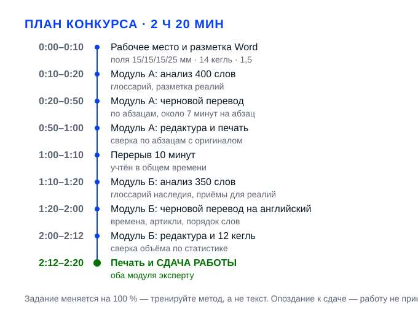
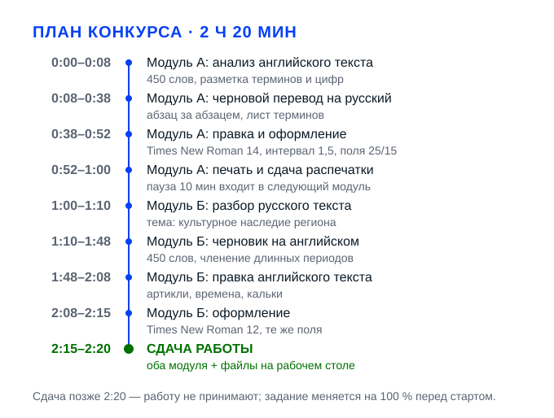
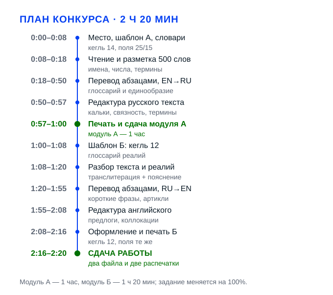

Переводчик (Р)
Задания ниже — официальные файлы «Абилимпикс» (источник: abilympics-russia.ru), разложенные по категориям. Решения написаны по тексту задания, регламенту и критериям оценки; в них указано, что именно проверяет эксперт.
Школьник
14–16 лет, базовый уровень заданияВыдержка из официального конкурсного задания: страницы, относящиеся к категории «Школьник» (стр. 4–5 источника).
Пошаговое решение
Задание по компетенции «Переводчик» для школьников состоит из двух модулей и укладывается в 2 часа 20 минут. В модуле А вы переводите с английского на русский научно-популярный текст объёмом около 400 слов и оформляете его в Microsoft Word шрифтом Times New Roman, 14 кеглем, с межстрочным интервалом 1,5 и выравниванием по ширине; в модуле Б — текст о культурном наследии региона объёмом около 350 слов с русского на английский, и там требования к оформлению другие: 12 кегль при том же интервале 1,5 и тех же полях. Оба перевода распечатываются и сдаются экспертам, каждый модуль стоит по 50 баллов, всего 100. Важно понимать заранее: конкурсное задание меняется на 100 процентов непосредственно перед соревнованием, поэтому заучивать конкретный текст бессмысленно — тренировать нужно метод работы с любым текстом. Ниже — полная последовательность по шагам.

Задача 1. Принять рабочее место и настроить документ под требования модуля АМодуль А · вход в 50 баллов
До того как вы прочитаете первое английское предложение, компьютер должен быть готов к работе, а документ — размечен под требования конкурсного задания: лист А4, правое поле 25 мм, левое, верхнее и нижнее по 15 мм, Times New Roman 14 кегль, обычный интервал между буквами, межстрочный 1,5, выравнивание по ширине. Эти настройки делаются один раз и занимают семь-восемь минут, но именно они удерживают баллы за оформление, которые теряют чаще всего — не из-за языка, а из-за спешки в конце.
Действие 1.1. Проверить оборудование и посадить себя правильно
Шаг 1.1.1
Садитесь за рабочее место и первым делом проверяете три вещи: включён ли компьютер и загрузился ли Microsoft Word, виден ли на столе ярлык принтера, и лежат ли рядом оба словаря — англо-русский и русско-английский. Монитор ставите так, чтобы до экрана было 60–70 сантиметров, но не ближе 50: на чемпионате это прописано в требованиях охраны труда. Клавиатуру сдвигаете к краю стола, чтобы предплечья лежали на столе, а не висели.
Принтер и словари — единственное, что нельзя починить в одиночку: за отсутствие распечатки работу просто не примут, а словарь по правилам участник приносит с собой, один англо-русский и один русско-английский. Проверка на старте стоит две минуты и снимает риск, который потом не исправить: замена оборудования идёт только через главного эксперта.
Word открывается, создаётся новый пустой документ, в списке принтеров на экране печати виден сетевой принтер площадки, оба словаря лежат слева от клавиатуры. Если принтера в списке нет — сразу зовёте эксперта, а не ищете его сами в настройках.
Типичная ошибка — сесть и начать переводить, отложив проверку принтера на конец. В момент печати выясняется, что задание не отправляется, и последние десять минут уходят на беготню вместо вычитки; распечатка выходит позже срока, и модуль оценивается как незаконченный.
Эксперт на входе фиксирует, что участник осмотрел место, включил оборудование и разложил материалы, — это первое впечатление об организованности, которое потом переносится на оценку всей работы.
Шаг 1.1.2
Открываете конкурсное задание и читаете его целиком, не перескакивая через абзацы: сначала шапку с темой, потом текст модуля А, потом требования к оформлению. Карандашом на черновике отмечаете объём — около 400 слов, число абзацев, наличие цитат, цифр и имён. Отдельно записываете на листе три параметра: 14 кегль, интервал 1,5, поля 25/15/15/15 миллиметров.
Модуль А стоит 50 баллов из 100, и примерно четверть этих баллов относится не к языку, а к оформлению и полноте: пропущенный абзац или не тот кегль снимают оценку так же уверенно, как ошибка в переводе. Чтение задания целиком до начала работы даёт план на час, а не реакцию на первую же трудную фразу.
У вас на черновике выписаны: число слов, число абзацев, параметры оформления и два-три места, которые сразу показались сложными. Если вы не можете назвать тему текста одной фразой, значит, читали невнимательно.
Ошибка — начать с первого абзаца и переводить подряд, не посмотрев на объём. Тогда к концу часа выясняется, что текст длиннее, чем казалось, и последние абзацы переведены в спешке или не переведены вовсе, а это прямая потеря половины баллов модуля.
Эксперт подходит к рабочим местам в первые минуты и смотрит, читает ли участник задание осмысленно: делает ли пометки, возвращается ли к требованиям оформления.
Шаг 1.1.3
Раскладываете на столе всё, что понадобится: словари слева, черновик справа, ручка и карандаш под рукой, лист с параметрами оформления на видном месте. Телефон убираете в сумку и больше к нему не прикасаетесь: мобильные телефоны и любые устройства с программами машинного перевода на площадке запрещены. Словари кладёте корешками к себе, чтобы страницы открывались одной рукой и не приходилось искать нужную букву вслепую.
Запрет на телефоны и программы машинного перевода — не формальность: обнаружение устройства означает разбор с главным экспертом и аннулирование результата. Одновременно порядок на столе экономит время: пока вы ищете карандаш под бумагами, уходит по минуте, а таких минут за два часа набирается десяток.
На столе только разрешённое: компьютер, словари, черновики, ручка, задание. Телефон не лежит рядом с клавиатурой и не выглядывает из кармана. Параметры оформления записаны и лежат перед глазами. Если телефон всё-таки нужен для связи с наставником, вы уточняете у эксперта, куда его сдать на время конкурса.
Самая дорогая ошибка — держать телефон «на всякий случай» под черновиком: эксперт вправе расценить это как попытку воспользоваться переводчиком, и работа аннулируется целиком, независимо от качества текста.
Эксперты проверяют столы во время обхода, иногда дважды за конкурс, и отдельно отмечают наличие бумажных словарей — по правилам они должны быть именно бумажными.
Действие 1.2. Разметить страницу под требования задания
Шаг 1.2.1
Создаёте новый документ и сохраняете его сразу, до первой строки перевода: «Файл → Сохранить как», имя по схеме «Фамилия_МодульА_перевод», место — рабочий стол. Затем идёте на вкладку «Макет» и открываете «Поля → Настраиваемые поля»: в открывшемся окне сверху ставите 15 мм, снизу 15 мм, слева 15 мм, справа 25 мм. После этого нажимаете «ОК» и глазами проверяете, что текстовая область сдвинулась влево: правое белое поле должно быть заметно шире левого.
Правое поле 25 миллиметров шире остальных не случайно: так задание оформляют, чтобы лист удобно сшивать или скреплять, и это требование проверяется линейкой по распечатке. Имя файла и место хранения прописаны в последовательности выполнения задания — файл должен лежать на рабочем столе, чтобы эксперт мог его найти.
В окне «Настраиваемые поля» стоят ровно 15, 15, 15 и 25 миллиметров, ориентация — книжная, размер бумаги А4. Линейка над документом показывает, что правое белое поле заметно шире левого. Заодно убедитесь, что в поле «Переплёт» стоит 0, а положение переплёта — «Слева».
Частая ошибка — оставить поля по умолчанию (обычно 20 мм слева и 15–20 мм справа) и вспомнить о них только перед печатью. Переверстка готового текста в конце сдвигает строки, а на распечатке правое поле окажется уже требуемого — минус баллы за оформление.
Оформление проверяют по распечатке: эксперт прикладывает линейку к краю листа и смотрит именно правое поле, потому что его чаще всего делают «как у всех».
Шаг 1.2.2
Там же на вкладке «Макет» проверяете, что стоит «Расстояние до края: колонтитул 12,5 мм» и не включена ли «Разная ширина колонок» — нижний колонтитул с номером страницы вам не нужен, но если он появился, номер страницы уходит за пределы нижнего поля. Ставите режим «Разметка страницы» в «Вид», чтобы видеть границы текста. Если серые границы не видны, включаете их в разделе «Показать» на вкладке «Вид» и работаете так до конца конкурса.
Номер страницы, выехавший в поле, читается как нарушение требования к полям: формально нижнее поле уже не 15 миллиметров. Режим разметки нужен, чтобы видеть реальную ширину строки, — в режиме «Черновик» границы полей не видны и ошибку легко не заметить.
На экране видны серые границы текстовой области; между правой границей текста и краем листа явно больше места, чем слева. Внизу листа нет одинокого номера страницы. Границы текстовой области видны на экране, ширина строки одинакова на всех страницах, лишних элементов в колонтитулах нет.
Включённый по привычке колонтитул с номером съедает нижнее поле и ломает разметку; вторая ошибка — работать в режиме «Черновик», где невозможно увидеть, что строка вылезла на правое поле. Проверять разметку лучше в самом начале, пока документ пустой: на готовом тексте любое изменение полей сдвигает абзацы и сбивает нумерацию страниц.
При оценке оформления эксперт смотрит на лист целиком: симметрию полей, отсутствие лишних элементов вроде номеров и дат в колонтитулах. Для него это признак того, что участник вообще открывал настройки страницы, а не работал в том, что открылось по умолчанию.
Шаг 1.2.3
Проверяете язык документа: вкладка «Рецензирование → Язык → Язык проверки» — для модуля А должен стоять русский, потому что проверка орфографии иначе подчёркивает весь русский текст красным и мешает читать. Заодно отключаете автоматическую расстановку переносов, если она включена: в требованиях переносов нет. Там же в «Файл → Параметры → Правописание» проверяете, что не включён режим «Скрывать ошибки»: он мешает видеть опечатки, а вам они нужны на экране.
Если в документе стоит английский язык проверки, весь русский перевод превращается в сплошное красное подчёркивание, и вы перестаёте видеть настоящие опечатки — а именно они дают минус по критерию грамотности. Переносы, включённые автоматически, дают рваный правый край и выглядят как небрежность.
Русский текст больше не подчёркивается целиком красной волной, в «Расстановка переносов» выбрано «Нет». Правый край ровный, без разрывов слов дефисами. Опечатки, которые вы уже сделали, подчёркнуты, и это нормально — по ним удобно искать правки перед печатью.
Оставить английский язык проверки — и пропустить опечатку, которую программа бы подчеркнула; либо включить переносы и получить текст, который при чтении экспертом выглядит как черновик. Вторая ошибка — оставить включённой проверку английского языка в русском тексте: тогда все настоящие ошибки теряются среди ложных подчёркиваний.
Эксперт обращает внимание на аккуратность листа: ровный правый край, отсутствие висячих строк и разрывов слов. Он также смотрит, нет ли в тексте следов автопереносов и двойных пробелов между словами.
Действие 1.3. Выставить шрифт, интервал и выравнивание
Шаг 1.3.1
На вкладке «Главная» выставляете шрифт Times New Roman и размер 14, предварительно нажав «Выделить всё» (Ctrl+A), чтобы параметры легли на весь документ, включая будущие абзацы. В окне «Шрифт → Дополнительно» проверяете «Интервал»: должно быть «Обычный», а не «Разреженный» и не «Уплотнённый». Там же смотрите «Масштаб»: он должен быть 100 процентов, а «Смещение» — 0 пт, иначе буквы «поедут» вверх или вниз и текст будет выглядеть неаккуратно.
14 кегль и обычный интервал между буквами прописаны в задании для модуля А буквально; разреженный интервал иногда включён в шаблоне, и тогда текст на двух страницах выглядит как на трёх, а кегль визуально не соответствует заявленному. Проверка занимает полминуты и закрывает целый пункт критериев оформления.
Курсор поставлен в любое место текста, и в поле размера стоит 14, в поле шрифта — Times New Roman, в настройках интервала — «Обычный». Символы не «разъехались» и не слиплись. Сравните высоту заглавной буквы на экране с распечаткой образца, если такой лежит на площадке.
Выставить шрифт только для набранного фрагмента: следующий абзац набирается уже другим кеглем, и в распечатке часть текста крупнее остального — заметная и обидная потеря баллов при готовом переводе. Особенно легко это пропустить, когда документ открыт из чужого файла или из шаблона, оставшегося от прошлого участника.
Кегль эксперт проверяет, поставив курсор в текст на распечатке рядом с образцом, либо просто сравнивая высоту строк на разных страницах. Он также сверяет, что заголовок и основной текст набраны одним кеглем, без случайных сдвигов.
Шаг 1.3.2
Открываете «Абзац» и ставите межстрочный интервал «1,5 строки», интервал перед абзацем 0, после абзаца 0, отступ первой строки 1,25 сантиметра, выравнивание — «По ширине». Галочку «Не добавлять интервал между абзацами одного стиля» оставляете включённой. Проверяете, что в поле «Отступ» слева и справа стоят нули: иногда в шаблоне остаётся отступ 1–2 сантиметра, и тогда текст сжимается в узкую колонку посреди листа.
Полуторный интервал задан в конкурсном задании, и он же делает текст удобным для чтения экспертом: между строками есть место для пометок. Отступ первой строки в 1,25 сантиметра — норма русской вёрстки, без него текст читается как сплошной массив, а «по ширине» требует именно задание.
В окне «Абзац» стоит «1,5 строки», перед и после — 0, первая строка с отступом 1,25 см, выравнивание по ширине. На листе А4 при 14 кегле и полуторном интервале помещается примерно 28–30 строк. Ширина строки при таких настройках получается около 16 сантиметров, и это нормально для листа А4.
Оставить двойной интервал вместо полуторного или выравнивание по левому краю: и то и другое прямо противоречит заданию. Вторая ошибка — делать отступ пробелами: при изменении шрифта или выравнивании пробелы «плывут», и абзацы перестают совпадать.
Эксперт смотрит на геометрию текста: одинаковая высота строк по всему листу, ровные левый и правый края, единый отступ первой строки. Он отдельно смотрит на последнюю строку абзаца: она не должна состоять из одного слова или из одного слога.
Шаг 1.3.3
Сохраняете размеченный пустой документ как шаблон для себя: «Файл → Сохранить как», имя «шаблон_МодульА», и держите его открытым. Набрав первые два-три предложения перевода, сразу проверяете, что параметры не сбились, и только потом продолжаете работу. Если в документ нужно вставить фрагмент из задания, вставляете его через «Специальная вставка → Неформатированный текст», а потом вручную применяете свои параметры шрифта и абзаца.
Вставив текст из другого документа или из буфера, вы вместе с текстом приносите чужие параметры шрифта и абзаца — Word сохраняет форматирование источника. Контроль на первых строках позволяет исправить это за десять секунд, а не за десять минут в конце.
Первые строки набраны Times New Roman 14, интервал 1,5, выравнивание по ширине, поля те же. Если что-то сбилось, выделяете абзац и применяете «Очистить формат», затем повторяете настройки. После «Очистить формат» шрифт становится стандартным, поэтому настройки применяете заново и снова проверяете первые строки.
Копировать фрагменты из словаря или из интернета вместе с форматированием: в готовом документе появляются абзацы другим кеглем и без отступа, а заметить это на экране при беглом взгляде почти невозможно.
Проверяя оформление, эксперт обычно выделяет весь текст и смотрит панель шрифта: если значения разные для разных абзацев, он это видит. Ещё он смотрит, нет ли пустых абзацев между смысловыми частями: отбивка пустой строкой считается нарушением оформления.
Задача 2. Перевести научно-популярный текст с английского на русский (модуль А)Модуль А · 50 баллов
Модуль А — это около 400 слов английского научно-популярного текста и один час на перевод вместе с оформлением. Текст берут из газетной или журнальной публикации: он держится на фактах и цифрах, но написан живо, с цитатами и разговорными оборотами. Ваша задача — передать и содержание, и регистр: не сделать из заметки сухой реферат и не скатиться в вольный пересказ. Работа идёт в три прохода: анализ, черновик, редактура; на анализ уходит не больше десяти минут, но именно он определяет, будет ли перевод точным.
Действие 2.1. Разобрать текст до того, как переводить
Шаг 2.1.1
Читаете весь английский текст один раз, не заглядывая в словарь, и формулируете на черновике три вещи: о чём текст одной фразой, кому он адресован и с какой целью написан. Затем выписываете заголовок и подзаголовок отдельно: в научно-популярных публикациях заголовок почти всегда интригует и часто набран капитальными буквами или содержит вопрос. Пока читаете, не выписывайте слова: на этом этапе важно понять целое, а не разобрать частности.
Тип текста определяет, какие трансформации допустимы: в научно-популярной заметке разговорный оборот нужно передать разговорным, а термин — термином. Если сразу принять текст за научную статью, перевод получится канцелярским, и эксперт снимет баллы за стилистическое соответствие, хотя смысл будет верным.
На черновике есть три строки: тема, адресат, цель. Вы можете объяснить своими словами, зачем автор упоминает цифры и цитаты, и не путаете главную мысль с второстепенной деталью. Проверьте себя так: закройте текст и перескажите его двумя предложениями, не подглядывая.
Начать переводить с первого предложения, не поняв целого: тогда первый абзац переводят в одном стиле, второй в другом, а связки между ними теряются — текст рассыпается на куски, и за связность снимают баллы.
Эксперт читает перевод целиком и первым делом оценивает, передан ли смысл и сохранён ли регистр; разрозненные, не связанные между собой абзацы видны сразу.
Шаг 2.1.2
Делите текст на абзацы и в каждом подчёркиваете «единицы перевода» — места, где нельзя переводить слово в слово: термины, названия организаций, имена, цитаты, числа с единицами измерения, идиомы. Рядом с каждым подчёркиванием ставите пометку: Т — термин, И — имя, Ц — цифра, Р — разговорное выражение. Отдельно отмечаете места, где английская фраза явно длиннее русского смысла: их почти всегда придётся сокращать при переводе.
Помеченные места — это карта риска: именно в них делают ошибки, которые стоят баллов, потому что они бросаются в глаза при сверке с оригиналом. Разметка заранее позволяет решить, что делать с каждой группой, вместо того чтобы импровизировать на середине абзаца.
В каждом абзаце есть хотя бы одна пометка, а всего пометок не меньше пятнадцати на 400 слов. Цитаты и числа отмечены все до одной — проверьте, пройдя по тексту пальцем и считая кавычки и цифры. Число пометок запишите на полях черновика, чтобы потом видеть, все ли места отработаны.
Пропустить разметку и «решать по ходу»: тогда разговорный оборот переводят буквально, получается бессмыслица, а исправлять её потом приходится переписыванием целого абзаца в оставшиеся минуты. Разметка занимает семь-восемь минут из часа, и это время окупается: без неё ошибки находятся уже после печати.
Косвенно — через результат: эксперт видит, что цитаты оформлены одинаково, а термины употреблены единообразно во всём тексте. Если цитаты и числа оформлены по-разному, он делает вывод, что текст не вычитывали.
Шаг 2.1.3
Выписываете на отдельный лист глоссарий: 10–15 ключевых слов и выражений с выбранным переводом, по одному варианту на строку. Для заметки о технике это будут, например, screen size — размер экрана, viewing distance — расстояние до экрана, consumer champion — организация по защите прав потребителей, sweet spot — оптимальная точка. Справа от каждого термина оставляете свободное место, чтобы дописывать варианты по ходу работы и видеть, от чего вы отказались.
Глоссарий обеспечивает единообразие: если в первом абзаце вы назвали величину расстоянием просмотра, а в третьем — дистанцией обзора, эксперт зафиксирует терминологическую несогласованность, а это отдельный пункт критериев, обычно в несколько баллов.
В глоссарии на каждое понятие один перевод, и он же стоит в тексте. Проверка простая: поиск по документу (Ctrl+F) по корню слова — все вхождения должны совпадать. Проверку повторите в конце работы, когда текст будет переведён целиком и терминов в нём станет больше.
Переводить один и тот же термин тремя разными словами «чтобы не повторяться»: в научно-популярном тексте это ошибка, читатель решает, что речь о разных вещах, а эксперт снижает балл за точность. Одинаковый термин во всём тексте — это норма переводческой работы, а не бедность речи.
Эксперт сверяет термины по всему тексту, а не по одному абзацу: разнобой в названиях одного понятия он отмечает как ошибку терминологии. Особенно он следит за терминами, которые встречаются в тексте чаще двух раз.
Шаг 2.1.4
Проверяете по словарю все слова, в которых не уверены на сто процентов, особенно похожие на русские: magazine — это журнал, а не магазин, accurate — точный, а не аккуратный, complexion — цвет лица, а не комплекция. Смотрите не первое значение, а пометки: часть речи, стилистическая помета, пример употребления. Непонятную помету не угадываете: в начале словаря есть список сокращений, и он экономит время на каждом слове.
«Ложные друзья переводчика» — самый частый источник обидных ошибок у школьников: слово знакомо, поэтому в словарь не смотрят, и в переводе появляется смысл, которого в оригинале нет. Каждая такая ошибка при сверке видна мгновенно и оценивается как искажение содержания.
Ни одно слово, вызвавшее сомнение, не осталось без словарной проверки. В переводе нет мест, где русская фраза звучит странно — именно так проявляется неверно выбранное значение. Если фраза звучит странно, вернитесь к словарю и посмотрите второе значение, а не первое.
Доверять памяти в знакомых словах: в конкурсном тексте почти всегда есть два-три таких «обманных» слова, и они стоят дороже, чем незнакомый термин, который все проверяют по словарю. Особенно опасны слова, которые школьники знают по учебнику в одном значении и не проверяют в остальных.
При сверке с оригиналом эксперт ищет именно смысловые сдвиги: слово переведено, предложение построено правильно, но смысл другой — это отдельная строка в листе оценки.
Действие 2.2. Написать черновик перевода
Шаг 2.2.1
Переводите абзацами: сначала читаете абзац целиком, держите в голове его смысл, потом набираете русский текст одним куском, не возвращаясь к отдельным словам. На 400 слов при часе на модуль приходится примерно семь минут на абзац — это темп, при котором черновик готов за 35 минут и остаётся 15 минут на редактуру и 10 на печать. Если абзац занимает больше десяти минут, помечаете его и идёте дальше: к трудному месту вернётесь в редактуре, когда будете видеть весь текст.
Абзац — минимальная единица смысла: только поняв его целиком, можно правильно расставить логические ударения и выбрать порядок слов. Перевод «по предложениям» даёт грамматически верные, но несвязанные фразы, и за связность текста баллы снижаются. Абзац, а не предложение, — единица композиции, и держать в голове нужно именно его.
Каждый русский абзац можно прочитать отдельно, и он понятен без соседних. Между абзацами сохранилась логика оригинала: причина — следствие, вопрос — ответ, общее — частное. Если из абзаца выпадает предложение и смысл не меняется, значит, связка была формальной и её надо переписать.
Переводить слово за словом и потом «причёсывать»: на это уходит вдвое больше времени, а результат всё равно звучит как подстрочник, потому что русский порядок слов не совпадает с английским. Подстрочник ещё и длиннее оригинала примерно на четверть, а это лишние строки и лишние ошибки.
Эксперт читает перевод как самостоятельный русский текст: если фразу приходится перечитывать, чтобы понять, это фиксируется как нарушение норм языка перевода.
Шаг 2.2.2
Заголовок переводите отдельно и после основного текста, когда уже понятно содержание: сохраняете его функцию — привлечь внимание, но убираете капитальные буквы и лишние восклицательные знаки. Английское «Experts warn millions of people are putting their television in the wrong place» по-русски естественно звучит как «Эксперты предупреждают: миллионы людей ставят телевизор не туда».
Заголовок оценивается как часть перевода: если он переведён дословно, по-русски получается нечто нечитаемое, а если переписан свободно — теряется связь с текстом. Функциональный подход сохраняет и смысл, и интригу, что и требуется в научно-популярном жанре.
Заголовок понятен человеку, не читавшему оригинал, и обещает то же, о чём говорится в тексте. В нём нет капслока, нет английских кавычек и нет слов, которых нет в самом тексте. Лишней точки в конце и дословных оборотов вроде «неправильное место», которые выдают кальку, в нём тоже быть не должно.
Переводить заголовок дословно, сохраняя капитальные буквы: «Вы смотрите телевизор неправильно: эксперты предупреждают, что миллионы людей размещают своё телевидение в неправильном месте» — такая фраза сразу выдаёт кальку и стоит баллов за стиль.
Заголовок эксперт сверяет с оригиналом в первую очередь — это первая строка, которую он читает на распечатке. Он сравнивает заголовок с оригиналом и смотрит, передан ли смысл, а не только слова.
Шаг 2.2.3
Цитаты оформляете по русским нормам: прямая речь в кавычках-ёлочках, слова автора с маленькой буквы после тире или перед ним по смыслу, тире длинное. Английские кавычки «“ ”» и апострофы заменяете на русские, а внутри цитаты сохраняете разговорность: «Невозможно охватить взглядом всю панораму, если не видишь экран целиком». Слова автора ставите либо до цитаты, либо после неё, но не разрываете саму реплику на части: в русском это делается иначе, чем в английском.
Пунктуация прямой речи — измеримый признак: эксперт видит, владеет ли участник нормами русского языка, а не только лексикой. Длинное тире и ёлочки — норма для русского текста, и их отсутствие читается как небрежность оформления. Кавычки и тире — то, что эксперт видит раньше, чем прочитает смысл, поэтому они задают первое впечатление.
Все кавычки закрыты и открыты парно, тире длинные, а не дефисы, перед словами автора и после них стоят нужные знаки. В цитате сохранён смысл, но нет английского порядка слов. Проверьте двойные кавычки внутри цитаты: по-русски они заменяются на одинарные «лапки».
Оставить английские кавычки или заменить тире дефисом: технически текст понятен, но при проверке пунктуации это минус, а при аккуратной работе таких мелочей набирается на два-три балла. Особенно заметна ошибка, когда английские кавычки соседствуют с русскими в одном абзаце.
Эксперт смотрит на оформление цитат отдельно: это место, где калька видна даже при хорошем словарном запасе. Он смотрит на знаки перед словами автора, на длину тире и на парность кавычек.
Шаг 2.2.4
Числа и единицы измерения переносите с пересчётом и без потери точности: 32-дюймовый телевизор — 32 дюйма (около 81 сантиметра), seven feet (two metres) — семь футов (два метра), диапазон 2.7 to three metres — от 2,7 до 3 метров. Десятичную точку меняете на запятую, диапазоны пишете через тире с пробелами, цифры не переводите словами. Если в тексте есть проценты, знак процента в русском ставится через неразрывный пробел после числа, а не слитно.
Ошибки в цифрах — самый заметный вид искажения: эксперт сверяет числа построчно, потому что они несут основную информацию заметки. Потерянный пересчёт в метры делает перевод неточным для русского читателя, который дюймами не мыслит. Точность в цифрах проверяется быстрее всего, поэтому она задаёт общее впечатление о переводе.
Число чисел в переводе совпадает с оригиналом — пересчитайте карандашом. Все единицы измерения либо переведены, либо даны в скобках; десятичные дроби с запятой; ни одна цифра не превратилась в слово. Проверку делаете по обеим работам, даже если числа есть только в одной.
Округлить «для красоты» или потерять второе значение в скобках: в оригинале часто даны обе системы, и если оставить только одну, перевод становится беднее оригинала — это фиксируется как неточность. Третья ошибка — перевести единицы, но потерять знак после запятой в десятичной дроби.
Числа эксперт проверяет выборочно, но обязательно: три-четыре контрольные цифры из текста он сверяет с оригиналом построчно. Расхождение в одной цифре он считает искажением факта, а не опиской.
Действие 2.3. Применить переводческие трансформации там, где дословно нельзя
Шаг 2.3.1
Для каждого термина выбираете русский эквивалент, а не описание: если в словаре есть точное слово, берёте его, а не объясняете понятие тремя словами. Проверяете вариант на сочетаемость: по-русски говорят «расстояние до экрана», а не «дистанция просмотра телевизора»; «размер экрана по диагонали», а не «размер телевизора в дюймах по уголкам». Варианты из интернета берите только те, что подтверждаются словарём: в конкурсной работе важна проверяемость решения.
Точность термина — отдельный критерий: за описательный оборот вместо термина балл снижается, даже если смысл передан верно. Кроме того, терминологическая точность напрямую влияет на оценку содержания: эксперт сверяет не слова, а понятия. Термин — это единица знания, а не украшение текста, поэтому его точность важнее красоты.
В глоссарии на каждое понятие стоит одно слово или устойчивое сочетание, и это сочетание существует в русском языке — вы можете назвать источник, где оно встречается в таком виде. Если подтверждения нет, берите вариант словаря, а не свой, даже если он кажется удачнее.
Оставлять описание вместо термина из осторожности: «то место, где телевизор должен находиться по мнению исследователей» — это не перевод термина, а пересказ, и он занимает втрое больше места. В тесном тексте на 400 слов такой пересказ сразу заметен и по объёму, и по стилю.
Эксперт отмечает терминологические замены описаниями: в листе оценки это идёт по линии точности перевода. Описательный оборот вместо термина он считает потерей профессионального уровня перевода.
Шаг 2.3.2
Перестраиваете предложения, где английская конструкция не имеет русского соответствия: пассив «participants were asked» превращаете в актив «участников просили» или в неопределённо-личное «участников попросили»; длинное предложение с двумя придаточными делите на два; отглагольное существительное заменяете глаголом. Обратный приём — объединение двух коротких английских предложений в одно русское — применяете там, где фразы связаны по смыслу и одна продолжает другую.
Английский тяготеет к номинальным конструкциям и пассиву, русский — к глаголу и активу. Без этой перестройки получается грамматически правильный, но тяжёлый текст, который читается как перевод, а не как оригинальная статья, — и за нормы языка перевода снимают баллы.
В каждом абзаце есть хотя бы один глагол в личной форме, несущий действие, и нет цепочек из трёх существительных подряд. Предложения не длиннее 25–30 слов. Посчитайте слова в самом длинном предложении: если больше тридцати, делите его на два.
Сохранять пассив везде, где он был в оригинале: «исследование было проведено специалистами, которыми были отобраны участники» — конструкция, которая в русском языке считается канцелярской и ошибкой стиля.
Эксперт оценивает нормы языка перевода: канцелярит и нагромождение придаточных он читает как неумение пользоваться трансформациями. Он также смотрит, нет ли в тексте трёх существительных в родительном падеже подряд.
Шаг 2.3.3
Имена и названия передаёте по правилам практической транскрипции и не переводите: Martin Pratt — Мартин Прэтт, Which? — название британского журнала, его оставляют латиницей или дают в транскрипции с пояснением при первом упоминании. Название организации при первом появлении можно один раз пояснить: журнал Which? (орган по защите прав потребителей).
Собственные имена — маркер точности: переведённая фамилия или переведённое название сразу показывают, что участник не различает имя и нарицательное слово. Пояснение при первом упоминании допустимо и даже полезно, повторное — уже избыточно. Правила транскрипции проверяются по словарю, а не по памяти: одна и та же фамилия может передаваться по-разному.
Все имена написаны одинаково во всех упоминаниях, название организации не переведено пословно, пояснение дано ровно один раз. Транскрипция соответствует произношению, а не написанию. Имя повторяется в тексте столько же раз, сколько в оригинале, и каждый раз написано одинаково.
Перевести название журнала как «Который?» или превратить фамилию в слово: это грубая ошибка, которая видна эксперту с первой строки и влияет на общее впечатление от работы. Второй вариант такой ошибки — перевести название организации как обычное слово и потерять смысл целого абзаца.
Имена собственные эксперт сверяет с оригиналом обязательно — это одно из немногих мест, где ошибку невозможно объяснить стилистическим выбором. Он сверяет написание имени с оригиналом буква за буквой, а не на слух.
Шаг 2.3.4
Ловите кальки и заменяете их русскими идиомами: «you can't take it all in» — невозможно охватить взглядом целиком, «get more immersed in the experience» — глубже погрузиться в происходящее, «it may seem like a small change» — может показаться, что это мелочь. Проверяете каждое место, где русская фраза «вроде бы правильная, но так не говорят». Полезный приём — пересказать фразу по-русски своими словами, а потом сверить пересказ с переводом: расхождения и есть калька.
Калька — самый частый вид ошибки в школьных переводах: слова переведены верно, а сочетание в русском языке невозможно. Именно это снижает оценку за лексическую сочетаемость и за естественность языка перевода. Калька опасна тем, что выглядит правильно: все слова русские, порядок слов тоже, а фраза не живёт и читается с усилием.
Прочитайте абзац вслух: если фраза заставляет споткнуться или звучит как перевод, её надо переписать. Хороший признак — вы можете пересказать эту мысль своими словами без потери смысла. Если пересказ выходит короче перевода, значит, в тексте остались лишние слова.
Оставлять «взять всё внутрь» или «стать более погружённым» — дословные кальки, которые формально передают слова, но не смысл; эксперт отмечает их как нарушение сочетаемости. Иногда калька появляется из-за того, что участник переводит слово, а не словосочетание целиком.
Эксперт читает текст на языке перевода как носитель нормы: кальки он находит без сверки с оригиналом, просто по звучанию фразы. Он отмечает такие места как ошибки лексической сочетаемости, а не как стилистическую вольность.
Действие 2.4. Отредактировать русский текст и оформить модуль А
Шаг 2.4.1
Читаете перевод целиком как самостоятельный русский текст, не подглядывая в оригинал: проверяете, держится ли логика, нет ли повторов одного слова в соседних предложениях, понятны ли местоимения. Каждое «это», «он», «данный» проверяете вопросом: из предыдущей фразы ясно, о чём речь. Если непонятно — заменяете местоимение существительным или перестраиваете предыдущее предложение так, чтобы предмет был назван прямо.
Связность и цельность — отдельные требования к переводу: текст должен читаться как написанный по-русски. Местоимение без явного предшествующего слова — типичная ошибка при переводе с английского, где порядок слов подсказывает связь. В русском порядок слов такой подсказки не даёт, поэтому связь приходится делать явной.
Вы можете пересказать текст, не заглядывая в него. В каждом абзаце есть связка с предыдущим — слово, местоимение или логический союз; ни одно предложение не начинается с неясного «это». Проверьте также, что тема абзаца не меняется посреди него и что последнее предложение не начинает новую мысль.
Проверять текст только по предложениям, не по абзацам: тогда смысловые стыки остаются необработанными, и эксперт видит набор правильных предложений вместо связного текста. Вторая ошибка — расставлять связки там, где связь и так очевидна: «Таким образом» через каждые две фразы.
Эксперт читает перевод целиком, поэтому связность оценивается не по фрагментам, а по всему тексту — и заметна сразу. Он читает текст подряд, а не по фрагментам, и переходы между абзацами для него важны так же, как точность слов.
Шаг 2.4.2
Сверяете перевод с оригиналом по абзацам: слева оригинал, справа ваш текст, абзац за абзацем. Отмечаете карандашом всё, что пропущено, и всё, чего в оригинале не было. Отдельно проверяете, что число абзацев совпадает и что последний абзац переведён полностью. Для этой сверки удобно расположить окна рядом: слева задание, справа ваш документ, и двигаться по абзацам сверху вниз, отмечая карандашом каждый пройденный.
Полнота передачи содержания — базовая часть оценки: пропущенное предложение считается потерей информации, а добавленное — домыслом, и оба вида ошибок фиксируются. Сверка по абзацам занимает десять минут и закрывает весь этот риск. Пропуск чаще всего случается на стыке страниц, где текст визуально прерывается.
Число абзацев совпадает, каждый абзац имеет соответствие, ни одного абзаца с пометкой «не переведено» не осталось. Статистика Word («Рецензирование → Статистика») показывает примерно 380–420 русских слов на 400 английских.
Пропустить последний абзац или строку под заголовком: они часто отделены пустой строкой и визуально «не считаются» частью текста, а при сверке это прямой минус за полноту. Вторая ошибка — дописать в перевод то, чего в оригинале не было: домысел эксперт замечает при сверке.
Эксперт сверяет текст по абзацам и считает пропуски: каждый непереведённый фрагмент — отдельная строка в листе оценки. Он сверяет не только абзацы, но и порядок мыслей внутри них: перестановка фактов тоже считается ошибкой.
Шаг 2.4.3
Проверяете орфографию и пунктуацию: запускаете проверку правописания, затем вручную смотрите то, что программа не ловит — запятые при причастных и деепричастных оборотах, «не» с прилагательными, дефисы в наречиях, длинное тире, парность кавычек, букву ё в словах, где она различает смысл. Отдельно смотрите парные знаки: тире и дефис, кавычки-ёлочки, скобки, а также пробелы перед знаками препинания, которых в русском быть не должно.
Грамотность входит в критерии и проверяется по распечатке, где описки видны отчётливее, чем на экране. Автоматическая проверка находит не всё: пунктуацию при оборотах и различительные написания она пропускает. Именно поэтому профессиональные переводчики вычитывают текст дважды: сначала смысл, потом знаки.
В документе нет подчёркнутых слов, кроме имён собственных и терминов; при чтении вслух вы делаете паузу там, где стоит запятая, и не делаете там, где её нет. Прочитайте текст шёпотом: интонация подсказывает пропущенную запятую быстрее, чем правила.
Полагаться только на автоматическую проверку: она не увидит пропущенную запятую при деепричастном обороте и не различит «в течении» и «в течение» — а такие ошибки в распечатке бросаются в глаза. Вторая ошибка — исправлять пунктуацию в процессе набора и не перечитывать текст в конце.
Грамотность эксперт оценивает по распечатке: ровно поэтому финальная вычитка должна идти по бумаге или в режиме предпросмотра, а не по экрану в процессе набора.
Шаг 2.4.4
Убираете канцелярит и лишние слова: «осуществляет процесс размещения» заменяете на «размещает», «является важным» — на «важен», цепочки из трёх существительных в родительном падеже перестраиваете. Каждое предложение проверяете вопросом: можно ли сказать короче, не потеряв смысла. Отдельно ищете отглагольные существительные на «-ание» и «-ение»: за ними почти всегда прячется глагол, который и нужно вернуть в предложение.
Научно-популярный текст должен оставаться живым: канцелярит превращает заметку в инструкцию и снижает оценку за стилистическое соответствие. Кроме того, лишние слова увеличивают объём и мешают уложиться в требования к оформлению. Канцелярит ещё и удлиняет текст примерно на десятую часть, а объём ограничен.
В тексте нет слов «является», «осуществляет», «данный» в значении «этот», нет оборотов «в целях» и «в связи с тем, что». Средняя длина предложения — до 20 слов. Если предложение приходится перечитывать, чтобы понять, кто что делает, его надо перестроить.
Оставлять канцелярит, потому что «так солиднее»: эксперт видит разницу между научно-популярным и официально-деловым стилем, и подмена регистра считается ошибкой. Второй случай — оставить дословно переведённые английские обороты с отглагольными существительными.
Стилистическое соответствие оценивается отдельно: эксперт сверяет регистр перевода с регистром оригинала. Научно-популярный текст должен читаться легко, без канцелярской тяжести, и это видно с первого абзаца.
Шаг 2.4.5
Финально проверяете оформление модуля А и сохраняете файл: выделяете весь текст, ставите Times New Roman 14, межстрочный 1,5, выравнивание по ширине, отступ первой строки 1,25 см. Затем «Макет → Поля» — 15/15/15/25 мм, и сохраняете документ на рабочий стол под именем, которое назвали эксперту. После сохранения закрываете и снова открываете файл, чтобы убедиться, что правки записались и документ открывается без предупреждений.
Оформление — измеримая часть оценки: параметры проверяются и на экране, и линейкой по распечатке. Пересохранение в конце важно потому, что последние правки часто остаются несохранёнными, и на печать уходит предыдущая версия. Проверка открытием снимает и риск повреждённого файла, который потом не отправить на печать.
Параметры стоят на всём тексте, а не на фрагменте: поставьте курсор в первый, средний и последний абзац — значения должны совпадать. Файл сохранён, имя и путь видны в заголовке окна. Убедитесь, что в имени файла нет символов, запрещённых в Windows, иначе документ не сохранится на рабочий стол.
Сохранить и не проверить параметры после последней вставки: фрагмент, вставленный из словаря, приносит своё оформление, и в распечатке один абзац оказывается другим кеглем. Иногда параметры сбиваются и после вставки неразрывного пробела, скопированного из другого документа.
Эксперт проверяет оформление по распечатке: кегль, интервал, поля и выравнивание — четыре отдельных пункта, каждый со своим весом. Он смотрит распечатку и, если попросит открыть документ, сверяет настройки в самом файле.
Задача 3. Перевести текст о культурном наследии на английский язык (модуль Б)Модуль Б · 50 баллов
Модуль Б — обратное направление: около 350 слов русского научно-популярного текста о культурном наследии региона нужно перевести на английский и оформить 12 кеглем при том же полуторном интервале и тех же полях. Времени больше — 1 час 20 минут, и это не случайно: писать на неродном языке труднее, чем читать, а словарь помогает с лексикой, но не с грамматикой. Главная сложность здесь не в словах, а в том, чтобы английское предложение не оказалось калькой русского: с сохранённым порядком слов, лишними артиклями и причастиями, которых английский не любит.
Действие 3.1. Разобрать русский текст и собрать глоссарий
Шаг 3.1.1
Читаете текст целиком и формулируете на черновике: о чём он, для кого написан, что в нём главное. Сразу отмечаете места, которые иностранцу будут непонятны без пояснения: названия объектов, имена, местные понятия, исторические периоды. Такие места обводите кружком — их в переводе придётся либо транскрибировать, либо коротко пояснять. Пометки делаете простым карандашом на полях задания, чтобы потом их можно было стереть или уточнить.
Текст о культурном наследии всегда содержит реалии, которых в английской картине мира нет. Если их не заметить заранее, в черновике появится либо невнятная калька, либо длинное объяснение посреди предложения — и то и другое снижает баллы за точность и за нормы языка перевода.
На черновике выписаны тема, адресат и список из пяти-семи обведённых мест. Вы можете объяснить, почему каждое из них требует особого решения. Если обведённых мест меньше пяти, скорее всего, вы читали быстро: в тексте о наследии всегда есть топонимы, даты и названия объектов.
Принять решение «переведу как получится» и вернуться к реалиям в конце: тогда в тексте остаются кальки вроде «the board of the bee» или «national craft», которые приходится переписывать в самые неудобные минуты.
Эксперт читает английский текст как носитель языка: непонятное иностранцу место он отмечает как потерю смысла, даже если формально слова переведены верно.
Шаг 3.1.2
Составляете глоссарий на 12–15 строк: слева русское понятие, справа выбранный английский эквивалент. Обязательный минимум для этой темы: культурное наследие — cultural heritage, объект культурного наследия — cultural heritage site, памятник архитектуры — architectural monument, реставрация — restoration, народный промысел — traditional craft, ремесло — craft, эпос — epic, заповедник — nature reserve.
Глоссарий задаёт единообразие и экономит время: в тексте на 350 слов ключевое понятие встречается четыре-пять раз, и каждый раз искать его в словаре — потеря минут. Единообразие терминов — отдельный пункт критериев точности. Ещё глоссарий дисциплинирует: вы не переводите одно и то же понятие заново пять раз и не тратите на это минуты.
В глоссарии на каждое понятие один вариант, и он сочетается с другими словами: вы можете привести пример словосочетания с ним (heritage site, craft tradition, restoration work). Если словосочетание не складывается, значит, вариант выбран неверно и его надо заменить до начала черновика.
Переводить «наследие» то как heritage, то как legacy, то как inheritance: значения близкие, но не взаимозаменяемые, и эксперт отмечает терминологический разнобой. Для эксперта это признак того, что участник не вёл глоссарий и переводил по памяти.
Единообразие терминов проверяется по всему тексту, как и в модуле А: это сквозной критерий для обеих работ. Он смотрит, выдержаны ли термины в пределах абзаца и всего текста, и отдельно — не переведены ли термины бытовыми словами.
Шаг 3.1.3
Для каждой обведённой реалии выбираете приём и записываете его рядом: транскрипция с пояснением (kurai, a traditional Bashkir wind instrument), калька (Shulgan-Tash nature reserve), описательный перевод (the epic poem Ural-Batyr), генерализация (a local craft instead of a narrow regional name). Приём выбираете один раз и держите до конца текста. Пометки вносите в глоссарий, а не держите в голове: к середине текста их набирается больше десятка.
Четыре приёма дают предсказуемый результат: читатель понимает, о чём речь, а перевод не превращается в справочник. Смешение приёмов для одного и того же понятия сбивает читателя и читается как непоследовательность. Приём, выбранный один раз, экономит и время, и объяснения в скобках, которые раздувают объём.
У каждой реалии в черновике стоит пометка с приёмом, и в тексте этот приём применён ровно так. Пояснение дано при первом упоминании и не повторяется. Проверьте по глоссарию, что для одной реалии не оказалось двух разных приёмов в разных абзацах.
Пояснять всё подряд: если каждое второе слово сопровождается объяснением в скобках, текст становится похож на глоссарий, а объём вырастает так, что не помещается в требования. Второй перекос — не пояснять ничего: тогда читатель не поймёт, о каком объекте идёт речь, и смысл потеряется.
Эксперт смотрит, умеет ли участник работать с реалиями: последовательный приём он отмечает как плюс, хаотичные пояснения — как минус за стиль. Он смотрит, понятен ли текст человеку, не знакомому с регионом и его реалиями.
Шаг 3.1.4
Раскладываете 80 минут по этапам и записываете на листке: 15 минут на анализ и глоссарий, 40 минут на черновик, 15 минут на редактуру английского, 10 минут на оформление, сохранение и печать. Ставите метки времени рядом с часами на экране, чтобы видеть, где вы находитесь. Отдельно отмечаете момент, когда нужно остановить черновик, даже если он не доведён до конца: недописанный абзац лучше, чем невычитанный текст.
Модуль Б длиннее модуля А, и именно здесь участники теряют чувство времени: черновик кажется почти готовым, а редактура английской грамматики требует не меньше времени, чем сам перевод. План с метками даёт сигнал переходить к следующему этапу. Без меток время уходит незаметно, и об этом узнают по часам только при сдаче.
К 15-й минуте глоссарий готов, к 55-й черновик переведён полностью, к 70-й текст вычитан, к 80-й сдан. Если на каком-то этапе вы отстаёте больше чем на пять минут — сокращаете анализ, а не редактуру. Метки удобно ставить на листке с планом, а не на самом переводе, чтобы не мешать чтению.
Писать черновик до последней минуты и печатать невычитанный текст: в английском это даёт ошибки в артиклях, временах и порядке слов, которые стоят дороже, чем неточное слово. Второй случай — потратить все восемьдесят минут на анализ и глоссарий, оставив перевод недописанным.
Эксперт видит результат, а не процесс, но невычитанный текст узнаётся сразу: в нём смешаны времена и повторяются одни и те же конструкции. Ему видно, дошли ли вы до редактуры: текст с одинаковыми конструкциями выдаёт отсутствие вычитки.
Действие 3.2. Написать английский черновик
Шаг 3.2.1
Переводите предложение за предложением, но каждый раз начинаете с подлежащего и сказуемого: «В республике сохранилось более пяти тысяч памятников» — More than five thousand monuments have survived in the republic. Русские конструкции с «в ... находится» перестраиваете в There are ... in ..., а не копируете порядок слов. Русские безличные предложения переводите с формальным подлежащим: it is known, there are, one can see — иначе английская фраза останется без подлежащего.
Английский требует прямого порядка слов, и именно он чаще всего ломается при переводе с русского. Калька порядка слов читается как ошибка грамматики, даже если каждое слово выбрано верно, и снимает баллы за нормы языка перевода. В английском порядок слов несёт грамматическую функцию, а не только смысловую, поэтому перестановка невозможна.
В каждом предложении есть подлежащее и сказуемое в личной форме, и ни одно предложение не начинается с обстоятельства места, если это не вопрос и не инверсия. Проверьте каждое предложение вопросом: кто или что выполняет действие и стоит ли оно в начале.
Начинать с обстоятельства, копируя русскую структуру: «In the republic more than five thousand monuments are located» — грамматически возможно, но звучит неестественно и не соответствует норме. Такая фраза понятна, но читается как перевод, и это фиксируется в графе норм языка.
Эксперт оценивает грамматическую правильность и естественность: нарушенный порядок слов он замечает в первом же абзаце. Он читает именно по предложениям, поэтому ошибка в начале задаёт впечатление о всём тексте.
Шаг 3.2.2
Расставляете времена по смыслу: Present Simple — для фактов и описания («The reserve covers 225 square kilometres»), Past Simple — для истории («The cave paintings were discovered in the 1950s»), Present Perfect — для того, что сохранилось до наших дней («The tradition has survived to this day»), пассив — когда важен объект, а не исполнитель («The monument was restored in 2018»).
Выбор времени — самая частая грамматическая ошибка в модуле Б: русский глагол не различает завершённость так, как английский, и участники ставят Past Simple там, где нужен Present Perfect. Каждое неверное время фиксируется отдельно. Английские времена передают вид действия, которого в русском глаголе нет, поэтому переносить русскую форму буквально нельзя.
Пройдите по глаголам и напротив каждого мысленно поставьте вопрос: факт, завершённое действие в прошлом или результат к настоящему моменту. Все три случая должны получить разные формы. Выпишите глаголы столбиком и отметьте время рядом с каждым: так видно, где формы смешаны.
Ставить везде Present Simple «чтобы не ошибиться»: тогда текст о событиях прошлого выглядит странно, а описание памятника, построенного в XVIII веке, звучит как происходящее сейчас. Второй случай — Past Simple там, где нужен Present Perfect: «the tradition survived» вместо «has survived».
Времена эксперт проверяет по всему тексту: смешение времён в пределах абзаца — заметная ошибка в листе оценки. Он также смотрит, согласованы ли времена в пределах одного абзаца и нет ли скачков между прошедшим и настоящим.
Шаг 3.2.3
Расставляете артикли по правилам: a/an — первое упоминание исчисляемого предмета, the — уже известный или единственный в контексте, нулевой артикль — с именами собственными, названиями городов и в обобщениях во множественном числе (monuments, crafts). Проверяете каждое существительное в единственном числе. Отдельно проверяете устойчивые сочетания без артикля: at school, in fact, by hand, on foot — в них артикль не ставится по традиции.
В русском языке артиклей нет, поэтому это место, где ошибки систематические и хорошо видны эксперту. Пропущенный или лишний артикль не мешает понять смысл, но относится к грамматической правильности, которая оценивается отдельно. Артикль — самая частая точка потери баллов в модуле Б, потому что в русском ему нет соответствия.
У каждого существительного в единственном числе есть артикль или объяснимая причина его отсутствия. Названия объектов даны без артикля, обобщения — без the. Проверьте, нет ли the перед названиями городов и регионов и нет ли a перед неисчисляемыми существительными вроде heritage.
Ставить the перед каждым вторым словом «для солидности»: «the cultural heritage of the Bashkortostan» — двойная ошибка, лишний артикль и лишнее the перед именем собственным. Вторая ошибка — пропускать артикль в начале абзаца, где предмет упоминается впервые.
Артикли — самая заметная часть грамматики для эксперта: он видит их в каждой строке, и систематическая ошибка сразу понижает оценку. Он отдельно отмечает артикли в названиях объектов культурного наследия и в обобщениях.
Шаг 3.2.4
Делите длинные русские предложения с причастными и деепричастными оборотами на два-три английских: «Памятник, построенный в XVIII веке и реставрированный в 2010-х годах, является объектом культурного наследия» превращается в The monument was built in the 18th century. It was restored in the 2010s and is now a cultural heritage site. Причастия переводите придаточными с which, who или where: «здание, построенное в 1890 году» — the building which was built in 1890.
Английская письменная речь не терпит нагромождения оборотов вокруг одного существительного: получается конструкция, которую носитель читает с трудом. Членение предложения — стандартный приём перевода с русского, и он прямо влияет на оценку за нормы языка.
Ни одно предложение не длиннее 25 слов и не содержит больше одного придаточного. В каждом предложении одна главная мысль; при чтении вслух вы не сбиваетесь. Проверьте предложения, где больше двух запятых: скорее всего, их надо делить на два.
Сохранять русский период с тремя придаточными: в английском он распадается на бессвязные куски, а запятые ставятся по русской привычке, что даёт ещё и пунктуационные ошибки. Вторая ошибка — переводить деепричастный оборот причастием: в английском такая конструкция звучит как незаконченная.
Нормы языка перевода оцениваются по читаемости: эксперт отмечает перегруженные предложения как стилистическую ошибку. Он читает текст как носитель и отмечает места, где приходится возвращаться назад.
Действие 3.3. Выверить лексику, имена и связность английского текста
Шаг 3.3.1
Каждое «сомнительное» слово проверяете по словарю вместе с примером употребления: смотрите не только перевод, но и то, с какими предлогами и словами оно сочетается. Типичные места: famous for, not famous by; to be home to, not to be home of; to date back to the 18th century; to be included in the UNESCO list. Проверяете также, не переводятся ли устойчивые выражения пословно: to take part in, to play a role, to attract attention.
Правильное слово в неправильной конструкции — самая обидная ошибка: смысл понятен, но для эксперта это нарушение сочетаемости, а таких мест в переводе школьника обычно пять-семь. Словарь с примерами показывает конструкцию целиком, а не одно слово. Это экономит минуты на проверке и снимает половину ошибок сочетаемости.
После каждого глагола стоит правильный предлог, после прилагательного — тоже. Вы можете назвать по словарю конструкцию, в которой употреблено каждое спорное слово. Если конструкция не подтверждается словарём, вы меняете слово на то, чью конструкцию знаете точно.
Переводить предлоги по русской привычке: «is famous with», «depends from», «consists from» — ошибки, которые эксперт фиксирует именно как нарушение сочетаемости. Особенно часто это происходит с глаголами, которые в русском управляют другим падежом или предлогом.
Лексическая сочетаемость — отдельная строка в критериях: эксперт читает текст как носитель и отмечает неестественные конструкции. Он ищет следы русского управления после английского глагола — это самая узнаваемая ошибка.
Шаг 3.3.2
Выписываете все имена, даты и числа отдельным списком и проверяете написание: Bashkortostan, Ufa, Shulgan-Tash, the Urals, the 18th century, in 2018, 225 square kilometres. Даты пишете цифрами с предлогом in, века — порядковым числительным с the, площади — в квадратных километрах, а не в «кв. км». Название региона при первом упоминании даёте полностью, при последующих — the republic, если это не создаёт двусмысленности.
Оформление имён и чисел в английском отличается от русского: сокращения «г.» и «кв. км» недопустимы, а век требует the и порядкового числительного. Это измеримые признаки, по которым сразу видно, переводил участник текст или переносил русские обозначения.
В тексте нет русских сокращений и русских кавычек; все географические названия написаны одинаково; даты и числа оформлены по-английски; единицы измерения записаны словами. Проверьте, что века не сокращены как «в.» и «ст.», а единицы измерения не оставлены в русской записи.
Оставить «в 2018 г.» или «225 кв. км» внутри английского предложения: технически читаемо, но это грубое нарушение норм языка перевода, которое видно в каждой строке. Вторая ошибка — писать название региона по-разному в разных абзацах, например с артиклем и без.
Эксперт проверяет оформление имён и чисел выборочно, но обязательно: это одна из немногих объективно проверяемых позиций. Он выборочно сверяет даты и числа с оригиналом, и расхождение сразу бросается в глаза.
Шаг 3.3.3
Проверяете связки и повторы: ставите на месте логических переходов however, moreover, in addition, as a result, но не больше одного на абзац. Повторяющееся существительное заменяете местоимением it или they, если из контекста ясно, о чём речь, и следите, чтобы слово heritage не встречалось в каждом предложении. Следите и за тем, чтобы связка стояла там, где действительно есть логический переход, а не в начале каждого абзаца по привычке.
Английский текст держится на явных связках и экономном повторе: без них абзац рассыпается, а с ними — читается как связный. Избыточный повтор ключевого слова эксперт отмечает как бедность лексики, а отсутствие связок — как нарушение связности. Связки — это то, что делает текст текстом, а не набором правильных предложений.
В каждом абзаце есть связка с предыдущим, и ни одна связка не повторяется дважды подряд. Ключевое слово встречается не чаще двух раз на абзац. Проверьте, что местоимение it относится к последнему упомянутому предмету, а не к тому, о котором говорили три предложения назад.
Начинать каждое предложение с Also или переводить русские связки дословно: «Besides, the» и «Thus, the» в начале каждой фразы выглядят механически и снижают оценку за стиль. Второй случай — переводить русские вводные слова дословно: «в свою очередь» как in its turn на каждой странице.
Связность и цельность — часть критериев: эксперт оценивает, читается ли текст как единое целое, а не как набор предложений. Он смотрит именно на переходы между абзацами, а не только на отдельные фразы.
Действие 3.4. Оформить модуль Б по требованиям задания
Шаг 3.4.1
Выделяете весь английский текст и ставите Times New Roman 12 кегль, межстрочный интервал 1,5, выравнивание по ширине, отступ первой строки 1,25 см, интервалы перед и после абзаца — 0. Затем «Макет → Поля → Настраиваемые поля»: верхнее 15 мм, нижнее 15 мм, левое 15 мм, правое 25 мм. Если модуль Б вы делаете в том же файле, что и модуль А, кегль применяйте ко всему тексту заново: смешанный размер шрифта потом трудно поймать.
В модуле Б кегль другой — 12 вместо 14, и это требование легко пропустить, потому что документ часто делают в том же файле, что и модуль А. Поля и интервал остаются теми же, поэтому проверять нужно именно размер шрифта. Второй частый промах — отступ первой строки, оставшийся от модуля А вместе с интервалами.
Курсор в первом, среднем и последнем абзаце показывает 12 кегль; поля 15/15/15/25 мм; интервал 1,5; выравнивание по ширине. При 12 кегле и полуторном интервале на лист А4 помещается примерно 32–34 строки.
Оставить 14 кегль «как в первом модуле»: на распечатке это заметно сразу, а требование кегля — отдельный пункт оформления, и балл снимается независимо от качества перевода. Вторая ошибка — оставить 14 кегль в заголовке и 12 в тексте: заголовок при проверке читается как часть текста.
Эксперт сравнивает две распечатки между собой: разный кегль в модулях А и Б он видит моментально, даже не заглядывая в настройки. Он сравнивает распечатки обоих модулей и отмечает разницу в размере строк.
Шаг 3.4.2
Проверяете объём через «Рецензирование → Статистика»: в переводе 350 русских слов должно получиться примерно 320–380 английских. Если слов заметно больше, ищете кальки и лишние пояснения, а не сокращаете содержание. Сохраняете файл на рабочий стол под именем «Фамилия_МодульБ_перевод». Если объём меньше 300 слов, проверяете, не потерялся ли абзац: сокращать содержание нельзя, а пропуск заметен именно по статистике.
Объём — косвенный индикатор качества: разница в 20–30 процентов почти всегда означает либо дословный перевод с раздутыми конструкциями, либо пропуск содержания. Статистика даёт объективную цифру до печати, когда ещё можно исправить. Другой объективной проверки объёма до печати не существует, и это единственный шанс увидеть ошибку заранее.
Число английских слов укладывается в 320–380 при 350 русских, число абзацев совпадает с оригиналом, файл сохранён и его имя видно в заголовке окна. Проверьте, что в файле нет лишнего английского текста из задания, вставленного для образца: он тоже считается в статистику.
Сокращать текст, чтобы «уложиться в объём»: выбрасывание содержания — потеря баллов за полноту, гораздо более дорогая, чем лишние двадцать слов. Вторая ошибка — наоборот, дописывать пояснения, чтобы текст «выглядел солиднее»: объём вырастает, а точность падает.
Эксперт сверяет перевод с оригиналом по абзацам и оценивает полноту передачи содержания — объём он видит на глаз по количеству строк. Он сверяет перевод с оригиналом и считает пропущенные фрагменты, а не только слова.
Шаг 3.4.3
Печатаете: Ctrl+P, в списке принтеров выбираете сетевой принтер площадки, в поле «Масштаб» ставите «Не изменять» или 100 процентов, убеждаетесь, что не включены «Печать в оттенках серого» и «Уместить на одной странице». После печати линейкой проверяете правое поле и глазами — кегль и отсутствие обрезанных строк. Если принтер двусторонний, проверяете, что не включена двусторонняя печать: второй модуль может напечататься на обороте первого.
Автоматическое масштабирование подгоняет документ под лист и меняет поля: на бумаге правое поле окажется 18–20 мм вместо 25, хотя в файле всё было верно. Это самая частая причина потери баллов за оформление при идеально настроенном документе. Проверка линейкой занимает полминуты и снимает целый пункт потери баллов за оформление.
На распечатке: правое белое поле заметно шире левого, строки не обрезаны, текст ровный по обоим краям, кегль одинаковый на всей странице, лист не «уменьшен». Сравните кегль с распечаткой соседа: если ваш текст мельче, масштаб всё-таки сработал.
Оставить включённым «Уместить на одной странице» или печатать с масштабом «По размеру страницы»: пропорции съезжают, и проверяющий эксперт фиксирует нарушение требований к полям. Вторая ошибка — печатать сразу оба модуля с одинаковыми настройками, не проверив первый лист.
Оформление проверяют по распечатке, а не по файлу: линейка прикладывается к правому полю, и расхождение в 5–7 мм уже считается ошибкой. Он кладёт линейку на лист и смотрит именно правое поле, а потом сравнивает кегль двух модулей.
Задача 4. Проверить, распечатать и сдать обе работыМодули А и Б · сохранение набранных баллов
Финальная часть стоит дороже, чем кажется: здесь либо удерживаются все набранные баллы, либо теряются за пять минут. Задание требует не просто перевода, а перевода, оформленного в Word и предъявленного в распечатанном виде; файл должен лежать на рабочем столе, листы — у эксперта. Поэтому последние двадцать минут расписаны по минутам: вычитка, печать, сверка бумаги с экраном, сдача и уборка места.
Действие 4.1. Вычитать обе работы по чек-листу
Шаг 4.1.1
Вычитываете переводы не с начала, а по абзацам в обратном порядке — от последнего к первому. В каждом абзаце читаете только его, отдельно от остальных: так мозг не «дописывает» смысл по памяти и описки становятся заметны. Найденное сразу исправляете в файле, а не запоминаете. Затем читаете тот же текст обычным порядком, следя за связками: так вы ловите и описки, и разрывы логики, которые при обратном чтении не видны.
При обычном чтении с начала текст узнаётся целиком, и глаз проскакивает пропущенные слова и перепутанные окончания. Обратный порядок ломает этот автоматизм, и грамматические ошибки, за которые снимают баллы, находятся за пять-семь минут. Этот приём используют корректоры, а не только переводчики, и он работает на любом языке.
Каждый абзац прочитан отдельно и исправлен. После прохода вы можете назвать, сколько правок внесли; если ноль — скорее всего, вы читали невнимательно, а не написали идеально. Вторая проверка — прочитать вслух последний абзац: на слух ошибки слышны лучше, чем видны.
Читать текст один раз «по диагонали» и решить, что всё в порядке: типичный результат — потерянное слово в середине абзаца и несогласованное прилагательное, которые эксперт находит сразу. Вторая ошибка — править сразу после набора, не дав тексту «отлежаться» хотя бы пять минут.
Саморедактирование — прямое требование к квалификации переводчика: эксперт оценивает итоговый текст, и невычитанные ошибки идут в общий зачёт по грамотности.
Шаг 4.1.2
Сверяете терминологию по своему глоссарию: открываете лист с ключевыми словами и проверяете через Ctrl+F, что в тексте нет второго варианта перевода того же понятия. Особое внимание — словам, которые вы переводили в середине работы, когда глоссарий уже подзабылся. Заодно проверяете имена и названия: они должны быть написаны одинаково во всех упоминаниях и не должны иметь двух вариантов транскрипции в одном тексте.
Терминологическая согласованность проверяется по всему тексту, и разнобой в двух-трёх понятиях обнуляет усилия по точности: эксперт видит, что участник не контролировал собственные решения. Поиск по документу делает проверку механической и быстрой. Это самая частая претензия при проверке терминологии: участник помнит, что проверял, но не помнит, чем закончил.
На каждое понятие из глоссария в тексте один вариант, и он совпадает с записанным. Поиск по корню не даёт «лишних» синонимов. Если поиск находит второй вариант, вы решаете, какой оставить, и исправляете все вхождения сразу через «Заменить всё».
Проверять термины на глаз: в тексте на 400 слов одно понятие встречается 4–6 раз, и разнобой в двух местах из шести на глаз не находится. Вторая ошибка — менять термин в одном месте и забыть, что он был и в другом абзаце: тогда текст становится несогласованным наполовину.
Эксперт сверяет термины сквозным чтением: несогласованность он отмечает как отдельный вид ошибки. Он выписывает для себя ключевые понятия и проверяет, одинаково ли они переданы в начале, середине и конце текста.
Шаг 4.1.3
Проходите чек-лист оформления по каждому модулю отдельно: шрифт Times New Roman; кегль 14 в модуле А и 12 в модуле Б; межстрочный 1,5; интервал между буквами обычный; поля 25 мм справа и по 15 мм с трёх сторон; выравнивание по ширине; отступ первой строки 1,25 см. Каждый пункт отмечаете галочкой на черновике. Отдельным пунктом идёт проверка, что в документе нет пустых строк между абзацами и лишних пробелов в начале строк.
Оформление — самая предсказуемая часть оценки: шесть пунктов проверяются механически, и потерять на них баллы при готовом переводе особенно обидно. Чек-лист нужен потому, что параметры легко сбиваются при вставках и копировании. Он же делает проверку механической и не оставляет места для «кажется, всё в порядке».
Все шесть пунктов отмечены, и по каждому вы можете показать место в Word, где это видно. Поля проверены в окне «Настраиваемые поля», а не на глаз. Если какой-то пункт вы не можете показать в программе, значит, он не выполнен, и это надо исправить до печати.
Проверять оформление «в целом»: тогда пропускают именно интервал между буквами — он чаще всего остаётся разреженным из шаблона и визуально почти не заметен. Вторая ошибка — проверить оформление только в модуле А и забыть, что в модуле Б другой кегль.
Эксперт проверяет оформление по распечатке и по файлу: шесть позиций дают ощутимую часть баллов модуля. На распечатке он проверяет поля линейкой, а кегль и интервал — сравнением строк между собой.
Шаг 4.1.4
Если до конца осталось десять минут, расставляете приоритеты в таком порядке: сначала дописать непереведённый абзац, потом исправить смысловые ошибки, потом оформление, потом стиль. Последние пять минут резервируете на печать — она не должна идти в момент сдачи. Если времени совсем мало, вы отказываетесь от стилистической правки целиком и тратите остаток на проверку полноты: целый, но шероховатый текст стоит дороже, чем красивый и недописанный.
Баллы распределены неравномерно: потеря содержания стоит дороже стилистической шероховатости, а отсутствие распечатки обнуляет модуль целиком. Такой порядок гарантирует, что оставшееся время уходит на самое дорогое. Приоритеты лучше продумать заранее, на тренировке, а не в момент, когда часы показывают последние минуты.
К моменту печати перевод полный, оформление проверено, а до сдачи остаётся не меньше пяти минут запаса. Если печать заняла больше — вы учтёте это в следующий раз на тренировке. Проверьте по часам, сколько реально занимает печать на площадке: это число и есть ваш запас.
До последней минуты править стиль, оставив непереведённый абзац: получается красивая фраза и потерянная часть содержания, а печать в спешке добавляет риск, что распечатка выйдет не та. Вторая ошибка — начать печать в последние две минуты, когда принтер занят другими участниками.
Эксперт видит результат, поэтому приоритеты участника проявляются в том, что осталось недоделанным, — и это читается как уровень планирования. Он смотрит на результат и на то, сдана ли работа в срок, а не на то, сколько вы волновались.
Действие 4.2. Распечатать и сверить бумагу с экраном
Шаг 4.2.1
Печатаете оба модуля по очереди: сначала открываете файл модуля А, Ctrl+P, проверяете «Все страницы», масштаб 100 процентов, ориентацию книжную, число копий — по числу экспертов, обычно один. Забираете листы из лотка сразу и только потом запускаете печать второго модуля. Перед печатью смотрите в строке состояния число страниц: в модуле А при 14 кегле на 400 слов обычно выходит две страницы, в модуле Б при 12 кегле — одна-две.
Печать двух документов одновременно приводит к тому, что листы перемешиваются в лотке, и вы получаете страницу модуля Б, вложенную в модуль А. Раздельная печать с немедленным изъятием листов исключает эту путаницу. Печать — единственный этап, где ошибку нельзя исправить после сдачи, поэтому он идёт отдельным шагом.
Модуль А распечатан полностью, модуль Б — отдельной стопкой. Число страниц совпадает с тем, что показывает Word в строке состояния перед печатью. Обе стопки лежат отдельно, и вы можете назвать число страниц в каждой без пересчёта.
Отправить оба файла в очередь и уйти к столу: в лотке получается перемешанная стопка, и на сдачу уходит время на разбор листов, а иногда и страница не тому модулю. Вторая ошибка — печатать с настройкой «несколько страниц на листе»: текст уменьшается, и поля съезжают.
Эксперт принимает работу по листам: перепутанные страницы затрудняют оценку и создают риск, что часть текста не будет оценена. Он принимает комплекты и следит, чтобы листы одного модуля не попали в другой.
Шаг 4.2.2
Сверяете распечатку с экраном: прикладываете лист к монитору или просматриваете по абзацам, проверяя, что нет обрезанных строк, «кракозябр» вместо кавычек, пропущенных страниц и пустых листов. Отдельно смотрите последний абзац — он чаще всего оказывается недопечатанным. Проверьте и то, что в конце документа не осталось пустой страницы: она появляется от лишнего абзаца и выглядит как недоработка.
Принтер может обрезать правый край, если документ шире области печати, и «съесть» последнюю строку. Такие дефекты видны только на бумаге, а эксперт оценивает именно распечатку — и обрезанный текст он прочитает как пропуск. Исправить это можно только повторной печатью, пока есть время, и потому проверка идёт сразу после печати.
Все строки целые, правый край не обрезан, кавычки и тире отображаются корректно, последний абзац заканчивается точкой и стоит полностью. Сравните число страниц на бумаге с числом страниц в Word: расхождение означает, что часть документа не вышла.
Не сверить бумагу с экраном: обрезанная строка или потерянный последний абзац обнаруживаются уже у эксперта, и исправить это в момент сдачи невозможно. Вторая ошибка — не заметить, что принтер поставил на лист колонтитул с датой или именем файла.
Визуальная целостность листа — первое, что видит эксперт, беря распечатку в руки. Обрезанный край он видит сразу и отмечает как нарушение требований к полям, не читая текст.
Шаг 4.2.3
Складываете листы по модулям, скрепляете каждый комплект степлером в левом верхнем углу и подписываете карандашом на обороте: фамилия, категория «Школьники», модуль А или Б. Если бланков или титульных листов не выдали — ничего своего не добавляете. Если листов несколько, скрепляете их именно в левом верхнем углу: так эксперт переворачивает страницы одной рукой и не теряет порядок.
Требование задания — предъявить перевод в распечатанном виде; аккуратно собранный комплект читается как завершённая работа. Подпись на обороте нужна, чтобы листы не перепутались при передаче между экспертами, а лишние титульные листы, наоборот, нарушают формат.
Каждый модуль — отдельный скреплённый комплект, подпись на обороте, посторонних листов нет. Обе стопки лежат перед вами и готовы к передаче. Проверьте, что подпись не перекрывает текст: пишите на обороте последнего листа карандашом, а не ручкой поверх перевода.
Сшить оба модуля в один комплект или добавить самодельный титульный лист: первый вариант путает эксперта, второй добавляет страницу, которой в задании нет. Третья ошибка — скреплять листы так, что часть текста у корешка не читается: скрепка должна стоять на поле, а не на строке.
Эксперт оценивает ровно то, что предусмотрено заданием: переведённый и оформленный текст, а не сопроводительные материалы. Аккуратно собранный комплект он отмечает как завершённую работу, а не как черновик.
Действие 4.3. Сдать работу и привести место в порядок
Шаг 4.3.1
Передаёте комплекты эксперту лично, называя вслух: «Модуль А, перевод с английского, и модуль Б, перевод на английский, фамилия такая-то». Уточняете, нужно ли оставить файлы на рабочем столе и под каким именем, и дожидаетесь, пока эксперт отметит приём в протоколе. Если эксперт просит открыть файл, вы открываете его сами и показываете настройки страницы и шрифта — так проверка занимает секунды вместо поисков.
Сдача — формальная процедура: работа считается принятой с момента отметки, а не с момента, когда вы положили листы на стол. Устное называние модулей исключает путаницу и одновременно показывает, что участник владеет своей работой. Отметка в протоколе — единственное доказательство сдачи, а устное называние модулей исключает путаницу.
Отметка о приёме стоит в протоколе, эксперт подтвердил, что файлы на месте и названы правильно. Вы знаете, какие листы и в каком количестве сдали. Отметка стоит в протоколе, и вы назвали оба модуля вслух, а не просто положили листы на стол.
Оставить листы на краю стола и уйти: работа может не попасть в протокол, а доказывать факт сдачи после конкурса бесполезно. Вторая ошибка — сдавать по частям: сначала модуль А, потом, через десять минут, модуль Б, из-за чего один из них фиксируется с опозданием.
Эксперт фиксирует время и факт сдачи: опоздание к сдаче — основание не принимать работу, поэтому лучше сдать за две-три минуты до срока. Он фиксирует время по своим часам и сверяет его со временем окончания модуля.
Шаг 4.3.2
Убираете место: закрываете лишние окна, оставляете открытым только сохранённый файл на рабочем столе, складываете черновики в сумку или в отведённое место, словари — на край стола. Компьютер не выключаете до разрешения эксперта. Обрезки и пустые листы выбрасываете в контейнер, а исписанные листы оставляете у себя: иногда эксперт просит показать ход работы.
Уборка рабочего места прямо названа в последовательности выполнения задания, а сохранённый файл на рабочем столе — требование к результату: если эксперту понадобится проверить оформление в электронном виде, файл должен быть на месте и открываться. Это же требование прописано в задании: результат предъявляется в распечатанном виде, а файл остаётся на рабочем столе.
Стол свободен от лишних бумаг, файл сохранён и виден на рабочем столе, компьютер включён, словари на месте. Черновики убраны, а не разбросаны по столу. Проверьте, что на рабочем столе компьютера нет посторонних файлов: только ваш документ и, если нужно, шаблон.
Выключить компьютер сразу после сдачи: если эксперт захочет сверить файл, он не сможет это сделать, а незакрытый документ с несохранёнными правками теряет последние исправления. Вторая ошибка — закрыть документ, не сохранив его после последней правки, и потерять последние исправления.
Порядок на месте после работы входит в общую оценку организованности и дисциплины участника. Он проходит по площадке после сдачи и отмечает состояние рабочих мест: открытые окна и разбросанные словари читаются как незавершённость.
Шаг 4.3.3
Если что-то пошло не так — принтер не печатает, Word завис, не хватило листа, — вы поднимаете руку и обращаетесь к эксперту сразу, коротко называя проблему: «Принтер не принимает задание, модуль Б не распечатан». Не пытаетесь решить это самостоятельно перезагрузкой или переустановкой. Пока эксперт идёт, вы записываете на черновике время обращения: это пригодится, если понадобится объяснить, почему часть работы не сдана.
Технические сбои на площадке решаются через эксперта, и время, потерянное на самостоятельные попытки, не компенсируется. Спокойное и точное обращение — часть оценки коммуникации и одновременно единственный способ получить помощь вовремя. Время на устранение технического сбоя эксперт учитывает отдельно, и обращение должно быть зафиксировано.
Проблема названа эксперту до истечения времени модуля, и вы получили конкретный ответ: что делать и сколько времени это займёт. Вы получили ответ и знаете, хватит ли времени довести работу, или надо сдавать то, что есть, и сообщать об этом сразу.
Молча бороться с зависшим Word до последней минуты: время уходит, работа остаётся нераспечатанной, а эксперта рядом уже нет — ситуация, из которой нет хорошего выхода. Вторая ошибка — просить помощь так, что эксперту непонятно, в чём проблема: «у меня не работает» вместо «не печатает модуль Б».
Эксперт обязан реагировать на технические обращения: он фиксирует время и причину, и это влияет на то, как оценивается незаконченная часть работы. Корректное и точное обращение он отмечает в графе коммуникации, а не только решает проблему.
Студент
учащиеся колледжей и техникумовВыдержка из официального конкурсного задания: страницы, относящиеся к категории «Студент» (стр. 4–5 источника).
Пошаговое решение
Конкурсное задание категории «Студенты» по компетенции «Переводчик» состоит из двух модулей, и оба проверяют одно умение с двух сторон: модуль А — письменный перевод научно-популярного английского текста объёмом около 450 слов на русский язык за 1 час, модуль Б — перевод русского текста того же объёма о культурном наследии региона на английский за 1 час 20 минут. Оба перевода набираются в Word, сохраняются на рабочем столе и сдаются в распечатанном виде; в модуле А нужен Times New Roman 14 кеглем, в модуле Б — 12, при интервале 1,5, выравнивании по ширине, правом поле 25 мм и остальных по 15 мм. За два часа двадцать минут дают 100 баллов, по 50 за модуль, поэтому провал одного перевода вторым не отыгрывается. Разрешён бумажный словарь, телефон и машинный перевод запрещены, а задание перед стартом меняется на 100 процентов: тренировать нужно процедуру работы с незнакомым текстом.

Задача 1. Разобрать задание и организовать 2 часа 20 минутМодули А и Б · 100 баллов
Категория «Студенты» получает два перевода подряд: 450 слов с английского на русский за один час и 450 слов с русского на английский за час двадцать. Всё задание весит 100 баллов, по 50 за каждый модуль, то есть провал одного модуля не отыграть вторым. До старта нужно успеть не переводить, а подготовить: прочитать таблицу 2.2, разложить время по этапам, настроить два шаблона Word с разными кеглями и проверить принтер. Эти двадцать минут окупаются на первом же абзаце, потому что оформление и печать съедают время из самого перевода, если о них вспоминают в конце.
Действие 1.1. Прочитать задание и разложить время
Шаг 1.1.1
Открываем конкурсное задание и читаем таблицу 2.2 в строке «Студенты», а не по диагонали: модуль А — перевод англоязычного научно-популярного текста около 450 слов на русский за 1 час, модуль Б — перевод 450 слов с русского на английский за 1 час 20 минут, внизу итог 2 часа 20 минут на всё. Тут же выписываем на лист оформление: для А Times New Roman 14 кегль, для Б — 12, межстрочный интервал 1,5, правое поле 25 мм, остальные по 15 мм, выравнивание по ширине, предъявление в распечатанном виде.
Эти числа задают стратегию: модуль Б дольше по времени, но не дороже по баллам, значит переводить с родного языка нужно быстрее на слово, иначе второй перевод съест первый. Разные кегли — не мелочь: если набирать оба текста одним шрифтом, часть баллов за оформление уйдёт механически, без всякой связи с качеством языка.
Закройте задание и назовите по памяти: 450 слов, 1 час, 450 слов, 1 час 20 минут, 2 часа 20 минут, 14 и 12 кегль. Если хоть одно число не вспоминается, вернитесь к таблице. Отдельно проверьте себя на полях: справа 25, слева, сверху и снизу по 15.
Типичная ошибка — прочитать раздел 2.1 с кратким описанием и решить, что этого хватит: там нет ни кеглей, ни полей, ни требования печатать. Тогда участник уверенно набирает весь текст четырнадцатым кеглем, и снижение идёт за оформление модуля Б.
Эксперт не спрашивает, читали ли вы таблицу, но на сдаче видит следствие: кегль, поля и интервал проверяются по распечатке в первую минуту, до чтения самого перевода.
Шаг 1.1.2
Разбиваем каждый модуль на четыре этапа и записываем минуты прямо на черновике: предпереводческий анализ, черновой перевод по абзацам, саморедактирование с оформлением, печать и сдача. Для модуля А это примерно 8, 30, 15 и 7 минут, для модуля Б — 10, 38, 22 и 10 минут. План пишем карандашом в углу листа, чтобы видеть его всё время и подправлять, когда очередной этап поехал.
Час на 450 слов — это около семи с половиной слов в минуту с учётом правки, темп спокойный, но без права на долгие раздумья над одним термином. Когда этапы размечены, видно, что экономить нужно на анализе, а не на редактировании: именно правка приносит баллы за нормы русского и английского языка.
К середине модуля А проверьте факт: черновик должен быть закончен не позже тридцатой минуты. Если к этому времени готовы три абзаца из шести, план надо менять сразу — сокращать анализ и переходить к переводу, а не надеяться догнать в конце.
Ошибка — планировать «переведу, потом посчитаю время»: тогда печать и оформление начинаются за пять минут до сдачи, а Word с неверными полями отнимает ещё десять. Вторая ошибка — оставлять редактирование на потом и сдавать черновик.
Эксперт наблюдает за темпом: если участник заканчивает набор за две минуты до конца, видно, что план существовал, а если печатает в спешке — наоборот. На сдаче он сверяет время в протоколе с планом: расхождение больше десяти минут значит, что один этап не был заложен вовсе.
Шаг 1.1.3
Уточняем границы допустимого, чтобы не потерять всё из-за формальности: на площадке разрешены бумажный англо-русский и русско-английский словарь в одном экземпляре и личный компьютер с программой для слабовидящих или незрячих, а запрещены мобильные телефоны и любые устройства с машинным переводом. Словарь лежит открытым, закладки — на своих местах, телефон сдан до старта, а не убран в карман.
Запрет на машинный перевод — не формальность: за устройство с программой-переводчиком участника снимают с площадки, и 100 баллов превращаются в ноль. Словарь при этом разрешён и экономит время, но только если вы умеете искать в нём быстро, а не листать наугад: на 450 слов с непривычки уходит лишние десять минут.
Проверьте перед стартом три вещи: телефон сдан, на столе только разрешённое, словарь открыт на нужной букве. Пройдите глазами по столу и назовите вслух всё, что видите — так быстрее заметить лишнее. Если сомневаетесь, разрешён ли предмет на столе, спросите у эксперта до старта, а не в процессе перевода.
Самая опасная ошибка — оставить телефон «на всякий случай» в сумке рядом: при проверке это фиксируется как нарушение. Вторая — принести словарь, но не уметь им пользоваться и потерять на поиске терминов весь бюджет анализа.
Эксперты и главный эксперт проверяют стол до старта и могут пройти по площадке в процессе; наличие запрещённого оборудования фиксируется в протоколе. Решение о допуске принимает главный эксперт, поэтому спорное устройство лучше показать заранее, чем объяснять его назначение во время работы.
Шаг 1.1.4
Смотрим пункт 2.4 и делаем вывод: перед соревнованием задание меняется на 100 процентов, поэтому ни текст про стеклянные купола на Луне, ни текст про культурное наследие заучивать не нужно и нельзя. Вместо этого готовим процедуру: как читать незнакомый текст, что выписывать, в каком порядке править. Тренируемся на любых других статьях того же объёма.
Сто процентов замены — гарантия того, что победит не память, а техника работы. Участник, который отрепетировал последовательность (анализ, черновик, правка, оформление) на трёх разных текстах, получает на незнакомом столько же, сколько на знакомом. Это и есть то, что проверяют критерии модулей А и Б: не совпадение с образцом, а перенос навыка на любой незнакомый текст.
Проверить себя просто: возьмите любой англоязычный научно-популярный текст на 450 слов и пройдите его по своему плану с таймером. Если уложились в час и текст читается связно — процедура готова, и незнакомое содержание её не сломает.
Ошибка — готовиться по опубликованному примеру и приехать с заученными формулировками: на новом тексте они не работают, а время на перестройку уже потрачено. Вторая ошибка — тренироваться только на переводе с английского и не проверить обратное направление, на которое отводится час двадцать.
Эксперта интересует не совпадение с образцом, а устойчивость результата: на незнакомом тексте видно, владеет ли участник приёмами перевода или воспроизводит заготовку.
Действие 1.2. Настроить два шаблона Word
Шаг 1.2.1
Запускаем Word и создаём два пустых документа: один под модуль А, второй под модуль Б. В каждом сразу включаем отображение непечатаемых знаков кнопкой ¶ на вкладке «Главная» — иначе абзацные концы, лишние пробелы и пустые строки остаются невидимыми и всплывают уже в распечатке. Проверяем раскладку: русская и английская, переключение по Ctrl+Shift или Alt+Shift, и что автозамена не превращает апострофы в кавычки.
Разные модули — разные кегли, и делать это в одном файле опасно: при копировании оформление переносится вместе с текстом, и легко получить четырнадцатый кегль там, где должен быть двенадцатый. Два файла снимают этот риск полностью и позволяют печатать каждый модуль отдельно, не переключая параметры на бегу.
Убедитесь, что открыты именно два документа, а не два окна одного: в заголовке окна должны стоять разные имена, например perevod-A.docx и perevod-B.docx. Проверьте, что знаки абзаца видны как ¶, а не как точки.
Ошибка — вести оба перевода в одном файле и менять кегль выделением перед печатью: часть абзацев почти всегда остаётся с прежним размером, а на глаз разница между 12 и 14 почти не видна. Вторая — работать с выключенными непечатаемыми знаками.
Эксперт смотрит распечатку, а не экран, поэтому лишние пустые строки и двойные пробелы для него очевидны сразу, особенно при выравнивании по ширине. Он открывает оба файла и сравнивает оформление: разный кегль в двух модулях — первое, что бросается в глаза при проверке.
Шаг 1.2.2
В документе модуля А настраиваем страницу через «Макет → Поля → Настраиваемые поля»: правое 25 мм, левое 15 мм, верхнее 15 мм, нижнее 15 мм. На вкладке «Главная» ставим Times New Roman, 14 кегль, межстрочный интервал 1,5, выравнивание по ширине; в «Шрифт → Дополнительно» проверяем, что интервал между знаками «обычный», без разрядки. Отступ первой строки задаём абзацным параметром 1,25 см, а не пробелами и не табуляцией.
Правое поле 25 мм при левом 15 даёт широкое поле для подшивки — это требование оформления, и оно проверяется линейкой по распечатке. Разрядка между буквами иногда включается сама при копировании текста из интернета и делает страницу визуально разреженной: формально шрифт тот, а работа выглядит иначе.
Проверяем измеримо: «Макет → Поля → Настраиваемые» должны показывать 2,5 см справа и 1,5 см с трёх сторон; в строке состояния видно «Times New Roman, 14»; в диалоге шрифта на вкладке «Дополнительно» стоит «обычный» интервал. Один раз распечатайте пробную страницу и приложите линейку к правому краю.
Частая ошибка — принять за поля отступы абзаца: текст сдвинут, а поля остались стандартными 2 см. Вторая — задать «1,5» как «множитель 1,5» в другом месте диалога или поставить «точно 18 пт», что для четырнадцатого кегля даёт иной вид.
Оформление — часть критерия, а не приложение к нему: эксперт открывает документ и проверяет параметры до чтения, поэтому неверное поле видно за секунды.
Шаг 1.2.3
Во втором документе, под модуль Б, повторяем ту же настройку полей 25/15/15/15 и интервала 1,5, но ставим кегль 12 при том же Times New Roman и выравнивание по ширине. Полезно сразу сохранить оба файла под понятными именами на рабочем столе: perevod-A-modul-A.docx и perevod-B-modul-B.docx, чтобы в конце не искать, что куда. В обоих файлах сразу включаем проверку орфографии, чтобы Word подчёркивал опечатки по ходу набора.
Двенадцатый кегль во втором модуле — прямое требование задания, и его путают чаще всего, потому что первый модуль набран четырнадцатым и рука сама тянется оставить так же. Имена файлов важны при сдаче: эксперт должен однозначно понять, где какой модуль, иначе часть работы может быть просто не найдена.
Проверьте: в документе Б в поле размера стоит 12, а не 12,5 и не 14; интервал 1,5; поля те же; выравнивание по ширине. Сравните два документа рядом: разница в кегле должна быть заметна, если поставить окна бок о бок.
Ошибка — настроить документ Б копированием документа А: вместе с текстом приезжает и кегль, и тогда весь второй перевод идёт четырнадцатым. Вторая — назвать файлы «Документ1» и «Документ2» и на сдаче путать, какой модуль в каком.
При сдаче эксперт сверяет имя файла и содержимое: несоответствие читается как невнимательность к заданию, даже если перевод хороший. Несоответствие кегля видно и без Word: строки модуля Б на распечатке заметно короче, и текст занимает меньше страницы.
Шаг 1.2.4
До старта проверяем печать, потому что распечатка — обязательная форма сдачи, а не удобство: открываем «Файл → Печать», смотрим, что выбран нужный принтер, формат А4, ориентация книжная, масштаб «Не изменять», и печатаем пробную страницу с парой строк. Убеждаемся, что бумага в лотке есть и что принтер не в очереди на чужую работу. Пробный лист подписываем словом «проба» и сразу убираем со стола, чтобы он не попал в сдаваемый комплект.
Печать отнимает время у перевода, и обнаружить в конце, что принтер не видит документ или в лотке нет бумаги, значит потерять пять минут из часа и сдать работу позже срока. Пробная страница стоит тридцать секунд и снимает этот риск полностью. Кроме того, пробный лист показывает, что картридж не пуст и текст пропечатан полностью.
Пробный лист вышел, на нём видны оба алфавита, поля совпадают с заданными, текст не обрезан по краю. Если лист не вышел — сразу зовите технического эксперта, не пытаясь чинить принтер самостоятельно. На пробном листе проверьте и поля: пятнадцать миллиметров — это полтора сантиметра по линейке, а правое поле вдвое шире.
Типичная ошибка — откладывать печать на конец и считать, что «там разберёмся»: в очереди к принтеру стоят несколько участников, и последние пять минут уходят на ожидание, а не на правку. Третья — отправить на печать сразу два экземпляра и обнаружить, что второй ушёл в чужой лоток.
Эксперт фиксирует время сдачи; если работа не распечатана к сроку, она оценивается как неполная, каким бы хорошим ни был текст в файле. Если участник ищет принтер в последние минуты, это видят все эксперты площадки, а не только его собственный.
Действие 1.3. Подготовить словарь и рабочие листы
Шаг 1.3.1
Кладём словарь слева от клавиатуры, открытым, с закладками на буквах, которые уже встречались в тренировочных текстах, и с чистым листом для выписок справа. Если словарей два, англо-русский и русско-английский, раскладываем по модулям: первый нужен в модуле А, второй — в модуле Б, и держать оба открытыми одновременно неудобно, стол маленький. Словарь не кладём на клавиатуру: он закрывает половину экрана и заставляет печатать вслепую.
Словарь экономит время только при быстром доступе: поиск по буквам занимает пятнадцать–двадцать секунд, а на 450 словах набирается десяток незнакомых слов, то есть три-четыре минуты. Это терпимо, если словарь подготовлен, и катастрофа, если он лежит закрытым в сумке.
Проверьте: нужный словарь открыт, закладки не выпадают, лист для выписок на месте, ручка пишет. Найдите наугад три слова за тридцать секунд — это ваш реальный скоростной норматив. Если слово не находится за полминуты, скорее всего вы ищете не начальную форму, а причастие или форму прошедшего времени.
Ошибка — принести словарь, но не открыть его до старта и первые минуты модуля тратить на поиск нужной страницы. Вторая — выписывать значения на отдельные листочки, которые потом теряются под клавиатурой.
Эксперт смотрит, пользуется ли участник словарём осмысленно: открытый словарь с закладками читается как подготовка, а закрытый на краю стола — как отсутствие плана.
Шаг 1.3.2
Готовим лист терминов: делим страницу на три колонки — английское слово, значение по словарю, выбранный вариант в контексте. Заполняем его по ходу перевода и держим рядом с клавиатурой, чтобы одно и то же слово во втором абзаце не получало другой перевод. Для модуля Б лист нужен зеркальный: русский термин, английские варианты, выбранный. Лист крепим скотчем к краю стола, чтобы он не съезжал под руку во время набора.
Единообразие терминологии — первое, что отличает перевод от подстрочника: если «lunar glass» в одном месте «лунное стекло», а в другом «стекло с Луны», эксперт считает это ошибкой последовательности. Лист на десять строк решает проблему за тридцать секунд и стоит четверти минуты на старте.
Проверка простая: пройдите по готовому переводу поиском по слову (Ctrl+F) и посмотрите, одинаково ли оно переведено во всех местах. Если вариантов два, оставьте тот, что точнее по смыслу, и замените остальные.
Ошибка — держать термины в голове: на третьем абзаце память подводит, и слово переводится заново, часто иначе. Вторая — записывать значение без контекста, и потом не понимать, почему выбран именно этот вариант.
Эксперт выборочно сверяет термины по всему тексту, а не по абзацу, поэтому разнобой виден именно на длинной дистанции. По листу терминов видно и то, работал ли участник со словарём вообще: пустой лист при десяти незнакомых словах означает, что значения брались наугад.
Шаг 1.3.3
Включаем автосохранение и добавляем привычку нажимать Ctrl+S после каждого абзаца, а не в конце: Word на площадке может перезапуститься, и один незакрытый абзац обходится дороже, чем секунда на сохранение. Проверяем, что файл лежит именно на рабочем столе, а не в «Загрузках» или в сетевой папке, куда нет доступа. Имя файла пишем латиницей без пробелов, чтобы его можно было открыть на любом компьютере площадки.
Сохранение — техническая страховка, за которую баллов не дают, но без которой можно потерять всю работу. Кроме того, требование задания прямо говорит: файл сохраняется на рабочем столе, и при сдаче эксперт ищет его именно там. При этом автосохранение не отменяет ручного: оно срабатывает раз в десять минут, а не после каждого абзаца.
После первого абзаца нажмите Ctrl+S и убедитесь, что в заголовке окна нет звёздочки или надписи «не сохранено». В проводнике файл должен быть виден с тем именем, которое вы дали, и с сегодняшней датой изменения.
Ошибка — сохранить один раз в начале и работать час без сохранений: сбой питания или зависание Word стирает весь перевод, и восстановить его нечем. Вторая — сохранять в папку пользователя, а не на рабочий стол.
Эксперт проверяет наличие файла на рабочем столе в момент сдачи; отсутствие файла при наличии распечатки уже вызывает вопросы. Файл с именем «Документ1» на рабочем столе эксперт ищет дольше и вполне может открыть не тот документ.
Задача 2. Модуль А: перевести 450 слов с английского на русский за часМодуль А · 50 баллов · 1 час
Первый модуль — письменный перевод англоязычного научно-популярного текста объёмом около 450 слов за один час, с оформлением в Word четырнадцатым кеглем и сдачей в распечатанном виде. Оценивают лексическую эквивалентность, соблюдение грамматических, синтаксических и стилистических норм русского языка, полноту передачи содержания и оформление. Работа идёт в три прохода: сначала текст читается целиком и размечается, затем переводится абзац за абзацем с листом терминов, и только потом правится русский язык, потому что первый вариант почти всегда несёт в себе английский порядок слов и кальки.
Действие 2.1. Сделать предпереводческий анализ
Шаг 2.1.1
Берём распечатку исходного текста и читаем её целиком, от заголовка до последнего предложения, без словаря и без ручки — только чтобы понять, о чём речь. На это уходит три-четыре минуты из часа, и это единственные минуты, когда можно не переводить. После чтения формулируем вслух одним предложением: кто о чём рассказывает и кому адресован текст, например «популярная статья о проекте стеклянных куполов на Луне для широкого читателя».
Без целого понимания переводят по предложениям, и текст распадается: местоимения теряют адресата, а термины, введённые в первом абзаце, во втором получают другое название. Критерий требует целостности и связности, и эти баллы ставятся именно за то, что видно только на уровне всего текста, а не отдельной фразы.
Проверьте себя, закрыв текст: перескажите его содержание тремя предложениями, не подглядывая. Если пересказ получается, структура понята. Если вспоминаются только отдельные фразы — читайте второй раз, но быстрее, по первым предложениям абзацев.
Классическая ошибка — начинать переводить с первого предложения, не дочитав до конца: выясняется, что «the compound» в середине текста — это то же самое, что «raw material» в начале, и первый абзац уже переведён неверно.
Эксперт проверяет целостность понимания по косвенным признакам: правильные связи между абзацами, единые обозначения одного и того же объекта, отсутствие фраз, повисших в воздухе.
Шаг 2.1.2
Размечаем текст простым карандашом: вертикальными чертами делим на абзацы и ставим номера, подчёркиваем термины и терминологические сочетания, обводим цифры, единицы измерения, названия организаций и имена, а на полях ставим вопросительные знаки там, где смысл не ясен с первого раза. Отдельно помечаем цитаты в кавычках: их нельзя переводить как обычную авторскую речь.
Разметка превращает 450 слов в список задач и снимает главный риск — пропуск предложения при наборе. Кроме того, обведённые цифры и имена проверяются отдельно и быстрее: именно в них чаще всего встречаются ошибки, которые эксперт фиксирует как искажение содержания.
Проверьте разметку на полноту: количество абзацев на листе должно совпадать с количеством абзацев в тексте, а все числа обведены. Если в абзаце больше трёх подчёркнутых мест, значит там плотная терминология и на него уйдёт вдвое больше времени.
Ошибка — размечать только термины и не помечать цифры с именами: потом «1,000ft» превращается в «1000 футов» без пересчёта, а «Dr Martin Bermudez» — в «доктора Бермудеза» с потерянным именем. В результате термин переводится дважды по-разному, а сверка отнимает лишние минуты во второй половине часа.
Эксперт видит разметку только по результату: одинаково ли переданы все повторы одного термина и не потеряно ли ни одно числовое данное. Косвенный признак готовой разметки — ровный темп набора: при готовом глоссарии участник печатает без пауз по тридцать секунд.
Шаг 2.1.3
Выписываем на лист терминов всё, что подчёркнуто, и сразу смотрим по словарю, не откладывая: «lunar glass», «in situ», «micrometeorites», «moonquakes», «self-healing», «spherical habitat», «polymer», «microwave furnace», «condensation». Рядом с каждым словом пишем два-три значения из словаря и выбираем одно по контексту, а не первое по порядку. Отдельным списком выносим «ложных друзей»: «compound» здесь не химическое соединение в общем смысле, а конкретная смесь для строительства, «concept» — не «концепция» в канцелярском значении, а «идея, замысел».
Словарь даёт значения, а не перевод: выбор варианта — ваша работа, и именно за него ставится балл за лексическую эквивалентность. В научно-популярном тексте важно сохранить и точность термина, и доступность изложения, поэтому дословный перенос словарного значения часто даёт фразу, которую невозможно читать.
Проверьте выбор так: подставьте выбранное слово в предложение и прочитайте вслух. Если фраза требует пояснения самому себе — вариант неверен. Полезно проверить термин по обратному словарю: существует ли это русское сочетание как устойчивое.
Ошибка — брать первое значение из словаря: «furnace» как «печь» в сочетании «smart microwave furnace» даёт неуклюжее «умная микроволновая печь», хотя речь о промышленной установке для плавки. Вторая — переводить «in situ» буквально «в месте», теряя смысл «непосредственно на Луне, без доставки с Земли».
Эксперт смотрит на терминологические решения выборочно, зато придирчиво: две-три ключевые ошибки в терминах читаются как слабое владение темой. Отдельно он смотрит, не подменены ли термины бытовыми словами ради гладкости фразы.
Действие 2.2. Перевести текст по абзацам
Шаг 2.2.1
Начинаем с заголовка и первого абзаца, потому что они задают тон всему остальному. Заголовок «NASA unveils plan for astronauts to live on the moon – inside glass bubbles made from lunar dust» переводим не пословно, а как газетный: «NASA представило план расселения астронавтов на Луне — в стеклянных куполах из лунной пыли». Первое предложение набираем в том же файле, что и остальной текст, тем же кеглем, не создавая «заголовочных» стилей.
Заголовок в научно-популярной статье несёт не только информацию, но и интригу, поэтому дословный вариант «NASA открывает план для астронавтов жить на Луне» читается как машинный. Критерий включает стилистические нормы, и первый абзац — то место, где эксперт составляет первое впечатление о всём переводе.
Проверьте заголовок отдельно: он должен быть короче английского или равен ему по длине, читаться без спотыкания и не содержать слов, которых нет в тексте. Прочитайте его вслух — заголовок, который нельзя произнести на одном дыхании, обычно перегружен.
Ошибка — калькировать конструкцию с предлогом: «план для астронавтов жить на Луне» вместо «план расселения астронавтов». Вторая — переводить «bubbles» как «пузыри» в заголовке, где по смыслу это купола, и только в тексте уточнять, что речь о стеклянных сферах.
Эксперт читает заголовок и первый абзац первыми и по ним оценивает стилистический уровень всей работы, поэтому правке этого фрагмента стоит отдать лишнюю минуту.
Шаг 2.2.2
Переводим второй и третий абзацы, где вводится суть проекта: «The US space agency is funding research into the large livable spheres which would be created in situ». Здесь важно не потерять подлежащее и не разорвать связь между агентством, финансированием и объектом исследования: «Американское космическое агентство финансирует разработку больших обитаемых сфер, которые предполагается создавать непосредственно на месте». Абзац заканчиваем точкой и сразу переходим к следующему, не возвращаясь назад.
Английский текст держит смысл на глаголах и причастиях, русский требует более явной связи: без вставки «которые предполагается» фраза рассыпается. Баллы за грамматические и синтаксические нормы ставятся именно за такие места — там, где переводчик перестроил конструкцию, а не скопировал её.
Проверьте абзац по вопросам: кто действует, что делает, с какой целью. Если в русском предложении нет подлежащего или оно угадывается, значит конструкция скопирована с английского и требует перестройки. Проверьте и то, что союз «которые» относится именно к сферам, а не к агентству: в русской фразе это не всегда очевидно.
Ошибка — переводить пассив пассивом до бесконечности: «сферы, которые будут созданы в месте» — фраза без адреса. Вторая — терять слово «in situ» совсем, хотя оно несёт главную мысль: строить из местного материала, а не привозить с Земли.
Эксперт отмечает именно такие места как показатель владения приёмами перевода: членение фразы, замена пассива активом, добавление связки. Он же смотрит, не появилось ли в переводе лишнего действующего лица, которого в оригинале нет.
Шаг 2.2.3
Разбираемся с числами и единицами, которых в тексте много: «1,000ft and 1,600ft», «a couple of inches», «hundreds or thousands of feet». Английские меры переводим в метрические с округлением, удобным читателю: 1000–1600 футов — это примерно 300–500 метров, пара дюймов — около пяти сантиметров, сотни или тысячи футов — десятки и сотни метров. Запятую в английских числах читаем как разделитель разрядов, а не как десятичный знак.
Читатель научно-популярной статьи в России мыслит метрами, и оставленные футы требуют от него пересчёта. При этом важно не выдумать точность: 304,8 метра из 1000 футов выглядят смешно, поэтому округление до сотни метров — правильное решение, и оно говорит о понимании адресата.
Сверьте каждое число с исходником, ведя пальцем по распечатке: количество чисел в переводе должно совпадать с количеством обведённых при разметке. Проверьте, что ни одно не превратилось в другое из-за запятой или точки.
Ошибка — оставить «1,000ft» как «1,000 футов» и получить в русском тексте тысячную долю. Вторая — пересчитать всё с избыточной точностью до десятых, и тогда текст тонет в цифрах и теряет читаемость. Третья — писать «фут» там, где в оригинале множественное число, и незаметно менять число в русской фразе.
Эксперт проверяет числа выборочно, но искажение единицы измерения считается фактической ошибкой, а не стилистической погрешностью. В спорных случаях он открывает оригинал и сверяет значение: расхождение в единицах фиксируется как фактическая ошибка, а не как стилистическая.
Шаг 2.2.4
Переводим имена, названия и должности: NASA остаётся NASA, компания Skyeports — «Скайпортс», её руководитель Dr Martin Bermudez — «доктор Мартин Бермудес», программа NASA Innovative Advanced Concepts передаётся как «программа инновационных передовых концепций NASA» с сохранением названия. Должность «chief executive» переводим «генеральный директор», а не «главный исполнительный директор», и следим, чтобы при первом упоминании имя было дано полностью.
Имена собственные — частая точка потери баллов: транскрипция должна быть устойчивой и одинаковой во всём тексте, а названия программ и организаций лучше сохранять в оригинальном написании рядом с переводом, чтобы читатель мог найти их в источниках. К тому же единое написание экономит время на правке: искать варианты в конце часа уже некогда.
Проверьте: имя встречается в переводе столько же раз, сколько в оригинале, и написано одинаково во всех случаях. Пройдите поиском по фамилии — если вариантов два, приведите к одному. Отдельно проверьте, что инициал перед фамилией передан так же, как в оригинале, а не превращён в полное имя.
Ошибка — переводить «Dr» как «доктор» там, где это учёная степень, и «врач» по контексту выглядел бы нелепо, но и обратная ошибка часта: транслитерировать фамилию по буквам и получить «Бермудез» вместо «Бермудес». Вторая — переводить название компании и терять узнаваемость.
Эксперт сверяет имена по исходнику: искажение фамилии или названия организации считается ошибкой передачи содержания. Если имя передано двумя способами, он отмечает это как ошибку последовательности, даже когда оба варианта допустимы.
Шаг 2.2.5
Заканчиваем перевод двумя последними абзацами, где есть цитата и вывод: «From developing small robots that could swim through the oceans of other worlds to growing space habitats from fungi, this program continues to change the limits of possible». Цитату переводим как прямую речь с сохранением кавычек и вводящего глагола, а финальное предложение — как итог, без добавления оценок от себя. На этом черновик модуля А закончен, и сразу сохраняем файл.
Цитата — единственное место, где чужая речь должна остаться чужой: если сгладить её до нейтрального авторского текста, читатель потеряет источник мысли, а эксперт — признак аккуратной работы с цитированием. Финал текста важен и композиционно: он должен закрывать материал, а не обрываться.
Проверьте, что кавычки открыты и закрыты, вводящий глагол стоит в правильном времени, а последнее предложение переводит ту же мысль, что и английское. Сравните количество абзацев: шесть исходных — шесть в переводе.
Ошибка — пересказывать цитату своими словами и терять кавычки: тогда непонятно, кто говорит. Вторая — дописывать вывод, которого в оригинале нет, например «таким образом, человечество получит новый дом».
Эксперт проверяет полноту: ни один абзац не должен быть сокращён или пересказан, а цитата — оформлена как цитата. Он же проверяет, что цитата не превращена в косвенную речь: у английских кавычек и русского тире разные последствия для смысла.
Действие 2.3. Отредактировать русский текст
Шаг 2.3.1
Читаем готовый перевод как русский текст, забыв об оригинале, и отмечаем всё, что звучит «не по-русски»: нагромождение родительных падежей, лишние местоимения «который», страдательные обороты, отглагольные существительные. Каждое такое место переписываем: «было принято решение о начале разработки» превращается в «решили начать разработку», а «является важным для понимания» — в «помогает понять».
Именно на этом проходе набираются баллы за стилистические и синтаксические нормы русского языка. Калька видна не по словам, а по конструкциям: русское предложение тяготеет к глаголу, а перевод с английского — к существительному, и разница читается сразу, даже неспециалисту.
Проверка проста: прочитайте абзац вслух. Если приходится останавливаться, чтобы понять, где подлежащее, — переписывайте. Второй признак: в предложении больше двух существительных подряд в родительном падеже.
Ошибка — оставлять кальку, потому что «так точнее»: точность не оправдывает фразу, которую нельзя прочитать. Вторая — переписывать слишком вольно и терять детали исходника, что снижает балл за эквивалентность.
Эксперт читает перевод как самостоятельный текст: если он спотыкается, оценка за нормы языка снижается независимо от точности терминов. Отдельно отмечаются места, где калька осталась, но смысл сохранён: это половина минуса, а не полный.
Шаг 2.3.2
Проходим пунктуацию и орфографию по правилам русского языка: тире между подлежащим и сказуемым, запятые при причастных и деепричастных оборотах, кавычки-ёлочки для названий и цитат, буква ё там, где без неё возникает двусмысленность. Проверяем единообразие: если «Луна» с большой буквы в одном месте, она должна быть такой везде; если «NASA» латиницей, то латиницей по всему тексту.
Пунктуация — измеримая часть оценки: ошибки видны построчно и не требуют понимания содержания, поэтому эксперт фиксирует их быстро и уверенно. Единообразие написания — признак редакторской работы, а разнобой читается как небрежность. Кроме того, пунктуация — единственная часть работы, которую можно исправить за две минуты в самом конце, если оставить на неё время.
Проверьте текст поиском: Ctrl+F по «NASA», по «Луна», по «-» в конце строк. Затем включите проверку орфографии в Word и пройдите по подчёркнутым словам, но не соглашайтесь слепо на замену терминов. Проверьте также, что в тексте нет двух пробелов подряд и пробела перед запятой.
Ошибка — расставлять запятые по английскому образцу, особенно перед «что» и в сложных бессоюзных предложениях. Вторая — оставлять прямые кавычки "" и апострофы вместо ёлочек и типографских знаков. Третья — оставлять дефис вместо тире в конструкциях, где подлежащее и сказуемое выражены существительными.
Эксперт отмечает пунктуационные ошибки как отдельный тип: одна-две не критичны, систематические снимают заметную часть балла. Он не считает каждую запятую, но систематические ошибки в причастных оборотах видны ему с первого абзаца.
Шаг 2.3.3
Сверяем перевод с оригиналом абзац за абзацем: слева распечатка, справа файл. Двигаемся по предложениям и отмечаем галочкой каждое переведённое. Проверяем три вещи в каждом абзаце: нет ли пропущенного предложения, нет ли добавленного смысла, совпадают ли числа и имена. Затем считаем слова: в переводе их обычно на десять–пятнадцать процентов меньше, чем в английском, и это нормально.
Пропуск предложения — самая дорогая ошибка модуля: он виден сразу при сверке и снижает балл за полноту передачи содержания. Добавленный смысл опаснее, потому что выглядит гладко и обнаруживается только при сравнении с исходником, и именно на этом эксперты ловят «улучшенные» переводы.
Считайте абзацы и предложения в каждом: шесть абзацев и примерно двадцать предложений должны совпасть с оригиналом. Если число не совпадает, ищите расхождение до тех пор, пока не найдёте. Если в каком-то абзаце предложений меньше, чем в оригинале, значит два предложения слиты и часть смысла могла потеряться.
Ошибка — сверять по памяти, а не по листу: тогда пропуск в середине текста не обнаруживается вообще. Вторая — «улучшать» оригинал, убирая повторы, которые автор использовал намеренно. Третья — сверять только первые два абзаца, где правка уже сделана, и не дойти до последнего.
Эксперт сверяет выборочно два-три абзаца, но при подозрении на пропуск читает весь текст: неполнота перевода — один из самых весомых минусов. Ему достаточно двух абзацев, чтобы понять, полон ли перевод и не добавлено ли лишнего.
Задача 3. Модуль Б: перевести 450 слов с русского на английский за 1 час 20 минутМодуль Б · 50 баллов · 1 ч 20 мин
Второй модуль — перевод русского текста объёмом около 450 слов на английский язык, тема — культурное наследие региона, оформление двенадцатым кеглем, сдача в распечатке. Времени на двадцать минут больше, чем в первом модуле, и это признание сложности: переводить с родного языка труднее, потому что родной текст не сопротивляется, и кальки возникают незаметно. Оценивается то же, что и в модуле А: эквивалентность, грамматические нормы английского языка, связность и оформление. Порядок работы такой же — анализ, черновик по абзацам, правка, — но правится здесь не смысл, а английская форма.
Действие 3.1. Разобрать русский текст
Шаг 3.1.1
Получаем русский текст и читаем его целиком дважды: первый раз — чтобы понять содержание, второй — чтобы отметить, как он построен. Определяем жанр по приметам: если есть даты основания, перечисление объектов, слова «памятник», «ансамбль», «традиция», — это скорее научно-популярный или краеведческий очерк, и переводить его нужно нейтрально, без рекламных преувеличений. Формулируем адресата вслух: например, «иностранный читатель, который не знает geography региона».
Понимание жанра определяет выбор лексики: в очерке уместны «heritage» и «landmark», а в туристическом буклете — «must-see» и «breathtaking». Ошибка стиля стоит баллов не меньше, чем грамматическая: эксперт видит, что текст звучит как перевод, а не как английская статья.
Проверьте себя, закрыв текст: назовите три главные мысли и жанр. Если жанр определяется с трудом, ищите в тексте оценочные прилагательные: их обилие говорит о популярном изложении, их отсутствие — о научном.
Ошибка — начинать перевод с первого предложения, не определив жанр: дальше весь текст идёт в одной регистровой тональности, и смешение канцелярита с разговорными оборотами читается как неграмотность. Третья — переводить краеведческий очерк языком рекламного проспекта, с восклицаниями и превосходными степенями.
Эксперт оценивает стилистическое соответствие: ровный регистр по всему тексту ценится выше, чем отдельные удачные фразы на фоне разнобоя. Отдельно он проверяет, не добавлены ли оценочные прилагательные, которых в исходнике не было.
Шаг 3.1.2
Выписываем всё, что не имеет прямого английского соответствия: названия памятников, ансамблей, народных промыслов, праздников, имена деятелей культуры, а также названия региона и населённых пунктов. Для каждого пункта выбираем способ передачи: транслитерация плюс краткое пояснение в скобках, если без него смысл теряется, как в случае с названием праздника или промысла. Решение фиксируем на листе терминов, чтобы не менять его в середине текста.
Безэквивалентная лексика — главная особенность темы культурного наследия: калька здесь не работает, а пропуск реалии обедняет текст. Пояснение в скобках добавляет три-четыре слова и снимает непонимание, а баллы за эквивалентность ставятся именно за такие решения.
Проверьте себя вопросом: поймёт ли иностранный читатель без словаря, о чём речь. Если название уходит в транслитерацию и смысл теряется полностью, добавьте короткое пояснение, но не превращайте его в абзац.
Ошибка — переводить реалию буквально: «народный промысел» как «people's craft» не значит ничего. Вторая — объяснять каждую реалию подробно и раздувать текст вдвое против исходных 450 слов. Третья — оставлять реалию без пояснения и надеяться, что читатель догадается сам.
Эксперт смотрит именно на реалии: две-три удачные передачи с пояснением читаются как профессиональная работа, а буквальные кальки — как слабое владение темой.
Шаг 3.1.3
Размечаем текст на абзацы и составляем план: о чём каждый абзац и какая мысль связывает его со следующим. План пишем по-английски короткими назывными фразами — «history of the region», «main monuments», «crafts and traditions», — чтобы потом не переводить структуру заново. Отдельно отмечаем места, где русский текст перечисляет однородные члены через запятую на полстраницы: такие периоды придётся членить.
План на английском экономит время на этапе набора: вы уже не думаете, как начать абзац, а следуете заготовке. Членение длинных перечислений — обязательный приём: английское предложение не выдерживает шести однородных членов подряд и рассыпается. Без плана английские абзацы начинают повторять друг друга, и текст теряет последовательность.
Проверьте план: каждый пункт должен соответствовать абзацу исходника, и ни один абзац не должен остаться без пометки. Если пунктов меньше, чем абзацев, вы что-то пропустили при чтении. Проверьте и то, что в плане есть хотя бы по одному ключевому слову для каждого абзаца: по ним потом набирается текст.
Ошибка — переводить, не составив план, и терять структуру: в английском тексте появляются абзацы без темы и повторы одной мысли. Вторая — сохранять русские абзацы по границам, не замечая, что логика требует иного членения.
Эксперт видит структуру по первым предложениям абзацев: если каждый абзац начинается с тематического предложения, текст читается как английский. Он отмечает, совпадает ли число абзацев с исходником: лишний абзац обычно означает, что два русских абзаца слиты.
Действие 3.2. Написать черновик на английском
Шаг 3.2.1
Пишем первый абзац, начиная с тематического предложения: не «The region has a rich cultural heritage, which is represented by a large number of objects», а сразу по делу — «The region's cultural heritage is embodied in its architecture, crafts and calendar festivals». Дальше каждое следующее предложение должно продолжать мысль предыдущего, а не начинать новую. Абзац заканчиваем так, чтобы следующий мог начинаться со связки.
Английский абзац устроен как воронка: общее утверждение, затем конкретика, затем переход. Русский текст часто идёт от частного к общему, и при копировании такой логики английский абзац выглядит перевёрнутым. Критерий связности и последовательности оценивается именно на уровне абзаца.
Прочитайте первый абзац отдельно: понятно ли из него, о чём весь текст. Если понятно только после второго абзаца, тематическое предложение надо переписать или перенести выше. Проверьте и длину: если тематическое предложение занимает больше двух строк, его стоит сократить до одной мысли.
Ошибка — начинать с длинного вступления «It is well known that…», которое в английской традиции считается пустым. Вторая — дословно переносить русский порядок слов, из-за чего подлежащее оказывается в конце предложения.
Эксперт читает первый абзац внимательно: он задаёт впечатление и показывает, умеет ли участник строить английский текст, а не переводить предложения. Отдельно он смотрит, нет ли в первом абзаце воды: общих слов о богатом наследии без единой конкретной детали.
Шаг 3.2.2
Переводим основную часть, подбирая терминологию наследия: «heritage», «cultural landscape», «listed building», «ensemble», «craft tradition», «intangible heritage», «preservation», «restoration». Проверяем сочетаемость по словарю: не «the monument is protected by the state» в смысле «охраняется государством» на каждой строке, а по возможности вариативно — «is state-protected», «falls under state protection». Термины вносим в лист и держим единообразие.
Сочетаемость — то, чего нет в русско-английском словаре и что отличает живой английский от перевода: «to carry out restoration» звучит нормально, «to make restoration» — нет. Именно на сочетаемости эксперт чаще всего снимает баллы, потому что отдельные слова верны, а фраза не английская.
Проверьте спорное словосочетание по обратному словарю и по памяти: встречается ли оно в статьях на эту тему. Если сомневаетесь, выберите более простое и употребительное — точность важнее изысканности. Если сочетания нет в словаре, ищите его в примерах употребления и в уже прочитанных статьях по теме.
Ошибка — переводить «объект культурного наследия» как «object of cultural heritage»: по-английски это «cultural heritage site» или «heritage asset». Вторая — использовать «monument» для всего подряд, хотя для ансамбля нужно «ensemble», а для здания — «building».
Эксперт просматривает термины по всему тексту: одна-две неудачные пары допустимы, систематические кальки снижают оценку заметно. Он отмечает и случаи, где термин верен, но повторяется в каждом предложении: это тоже считается слабостью.
Шаг 3.2.3
Членим длинные русские предложения с перечислениями: если в исходнике один период на пять строк с шестью однородными членами, делаем из него два-три английских предложения, а перечисление оформляем либо через запятые с союзом «and» перед последним, либо через точку с запятой, если элементы сами содержат запятые. Следим, чтобы придаточные не наслаивались друг на друга больше двух уровней.
Средняя длина английского предложения в научно-популярном тексте — 18–22 слова, и всё, что длиннее 35, читается тяжело. Приём членения входит в число переводческих трансформаций, за которые начисляются баллы за эквивалентность и нормы языка. Членение предложения относится к числу базовых переводческих трансформаций, и его применение видно с первого абзаца.
Проверьте, посчитав слова в трёх самых длинных предложениях: если больше тридцати пяти, дробите. Второй признак проблемы — больше двух «which» и «that» в одном предложении. Проверьте и количество придаточных: если в предложении больше двух «which», его почти всегда нужно делить.
Ошибка — копировать русскую пунктуацию и получать предложение с четырьмя запятыми, которое нельзя прочитать без схемы. Вторая — дробить до рубленых фраз из трёх слов, отчего текст теряет связность. Третья — соединять два коротких предложения в одно длинное ради мнимой академичности.
Эксперт отмечает именно работу с синтаксисом: перевод, где все предложения по 40 слов, читается как подстрочник. Он смотрит на длину предложений по абзацу: ровный ритм из фраз по пятнадцать-двадцать пять слов читается как английский текст, а не как перевод.
Шаг 3.2.4
Передаём имена и топонимы по устойчивой схеме: сначала проверяем, есть ли общепринятое английское написание (для крупных городов и известных объектов оно существует), и только если нет — транслитерируем по системе, принятой для русского языка. В тексте имя пишем один раз полностью, дальше можно сокращать. Названия учреждений переводим с сохранением официального статуса: «музей-заповедник» — «museum-reserve», «дом культуры» — «house of culture».
Топонимы — та часть текста, где ошибка видна носителю сразу: написание «Bashkiria» вместо «Bashkortostan» или выдуманная форма названия города выдают незнание темы. Устойчивые написания проверяем по словарю или по памяти, если словаря нет. К тому же устойчивое написание избавляет от пояснений в примечаниях, которых в задании не просили.
Проверьте единообразие: одно и то же название должно быть написано одинаково во всех местах. Пройдите поиском по фрагменту названия и сравните варианты. Отдельно проверьте, что название региона написано так, как оно принято в англоязычных источниках, а не придумано заново по буквам.
Ошибка — транслитерировать по буквам, получая формы, которых нет в английском обиходе. Вторая — переводить название учреждения дословно так, что оно перестаёт быть узнаваемым. Третья — переводить название улицы или площади дословно, получая конструкцию, которой в английском не существует.
Эксперт сверяет топонимы выборочно: ошибка в названии региона или города считается фактической и запоминается. Он сверяет два-три названия с исходником и с общепринятым написанием: ошибка в названии региона запоминается сразу.
Шаг 3.2.5
Дописываем заключительные абзацы, сохраняя ту же структуру: тематическое предложение, два-три уточнения, вывод. Следим за объёмом — в английском тексте должно получиться около 450 слов, как в исходнике, а не 300 и не 600. В конце ещё раз проверяем, что все абзацы русского текста получили соответствие, и сохраняем файл через Ctrl+S. Статистику открываем дважды — после набора и после правки, потому что правка меняет число слов на десятки.
Объём — измеримый показатель полноты: если английский текст короче исходника на треть, значит часть содержания потеряна или пересказана. Если длиннее — появились пояснения, которых не просили, и текст стал рыхлым. Кроме того, объём показывает, сколько осталось времени: если к сороковой минуте набрано триста слов, темп нормальный.
Посчитайте слова через «Рецензирование → Статистика»: ориентир 430–480 слов. Если сильно меньше, ищите сокращённые абзацы, а не добавляйте воду в конец. Сравните и число абзацев: пять абзацев исходника против пяти в переводе — минимальная проверка полноты, которая занимает десять секунд.
Ошибка — дописывать финальный абзац «In conclusion, the region has a rich heritage», повторяя уже сказанное. Вторая — терять последний абзац исходника, потому что время кончается. Третья — считать слова вручную по строкам и терять на этом пять минут из часа двадцати.
Эксперт сопоставляет объём и содержание: резкое расхождение в словах он проверяет построчно. Занижённый объём он проверяет особенно внимательно: именно там чаще всего обнаруживается пересказ вместо перевода.
Действие 3.3. Отредактировать английский текст
Шаг 3.3.1
Проходим грамматику по чек-листу, который держим на листе: артикли перед исчисляемыми существительными в единственном числе, отсутствие артикля перед неисчисляемыми и абстрактными, согласование подлежащего и сказуемого, времена в рамках абзаца, предлоги в устойчивых сочетаниях. Проверяем каждое предложение по этим пяти пунктам, а не «на слух»: слух на чужом языке обманывает, особенно у тех, кто много читает, но мало пишет.
Артикли и предлоги — самые частые ошибки в переводе с русского: в русском языке этих категорий нет, и рука ставит «the» там, где нужно нулевое употребление. Именно эти ошибки эксперт находит первыми, потому что они встречаются в каждом втором предложении.
Проверьте выборочно три абзаца, подчёркивая каждое существительное: есть ли при нём артикль и правильный ли он. Если в абзаце больше двух спорных мест, проход надо повторить по всему тексту. Отдельно проверьте предложения с однородными подлежащими: согласование в них ломается чаще всего.
Ошибка — ставить «the» перед каждым существительным, которое кажется важным: получается текст, где определённый артикль теряет смысл. Вторая — забывать третью форму глагола в перфекте и писать «has restore» вместо «has restored».
Эксперт фиксирует грамматические ошибки как отдельный тип и считает их по тексту: три-четыре не критичны, десять означают слабый уровень. Он обращает внимание и на предлоги: «in the 19th century» и «in 19th century» различаются одним символом и одним баллом.
Шаг 3.3.2
Ищем кальки и «русизмы»: «the given question», «to take place» в смысле «проходить» там, где нужно «to be held», «to make an accent» вместо «to emphasise», «actual» в значении «актуальный». Каждое сомнительное место проверяем по словарю сочетаемости или заменяем на простую конструкцию, в которой уверены. Отдельно проверяем, нет ли в тексте буквального перевода русских идиом.
Калька — главный признак перевода: текст грамматически верный, но ни один носитель так не скажет. Критерий лексической эквивалентности включает не только точность, но и естественность, поэтому замена кальки на живую конструкцию приносит баллы без потери смысла.
Проверьте так: прочитайте предложение и представьте, что оно из английской статьи о наследии. Если фраза выглядит «переводной», замените её. Помогает и обратный перевод: переведите свою английскую фразу обратно на русский и посмотрите, совпала ли она с исходником по смыслу и тону.
Ошибка — заменять кальку на «умное» слово из словаря, не проверяя сочетаемость, и получать некалькированную, но неестественную фразу. Вторая — оставлять «actual problems» в значении «актуальные проблемы», что по-английски значит «фактические».
Эксперт, владеющий английским, замечает кальку сразу: две-три таких фразы снижают впечатление сильнее, чем одна грамматическая ошибка. Отдельно он смотрит на глаголы: калька чаще всего живёт именно в глагольных сочетаниях.
Шаг 3.3.3
Проверяем целостность: перечитываем английский текст целиком, без оригинала, и смотрим, держится ли он как самостоятельная статья. Затем сверяем с русским абзац за абзацем и отмечаем галочками. Считаем слова, проверяем единообразие названий и терминов, убеждаемся, что ни одно фактическое данное не изменено. Перед проверкой полезно отложить текст на минуту и вернуться к нему как к чужому: глаз перестаёт «дочитывать» пропущенное.
Читатель не должен догадываться, что перед ним перевод: связный английский текст с логичными переходами и есть главный результат модуля. Сверка гарантирует полноту, за которую тоже дают баллы, и защищает от самого обидного — потерянного абзаца при наборе.
Пройдите по абзацам с карандашом: количество абзацев совпадает, каждый начинается с тематического предложения, переходы между абзацами есть. Проверьте статистику слов: 430–480 при исходных 450. Сверьте отдельно первое и последнее предложение с оригиналом: они правятся в последнюю очередь и чаще всего остаются черновыми.
Ошибка — править только начало текста, где ошибки заметнее, и оставлять последние абзацы в черновом виде. Вторая — менять факты «для гладкости», например объединять два памятника в один. Третья — не проверить единообразие имён, и в тексте остаются два варианта одного названия.
Эксперт читает работу целиком и обращает внимание на ровность качества: сильное начало и слабый финал читаются как нехватка времени. Он читает текст подряд и отмечает места, где внимание участника явно закончилось.
Задача 4. Оформить, распечатать и сдать два переводаОформление и сдача · входит в 100 баллов
Финальная часть работы: привести оба документа к требованиям задания, вычитать текст с листа, распечатать каждый модуль и сдать распечатку экспертам вместе с файлами на рабочем столе. Здесь нет отдельного блока баллов, но именно здесь теряется то, что уже заработано: неверный кегль, съехавшие поля, лишняя пустая строка, обрезанный край страницы, нераспечатанный модуль. Оформление проверяется первым, до чтения перевода, поэтому порядок такой: сначала форма, потом беглая вычитка, потом печать, потом сдача — и ни в каком другом порядке.
Действие 4.1. Привести документы к требованиям
Шаг 4.1.1
Открываем документ модуля А, выделяем весь текст сочетанием Ctrl+A и применяем оформление сразу ко всему: Times New Roman, 14 кегль, межстрочный интервал 1,5, выравнивание по ширине, отступ первой строки 1,25 см, интервалы до и после абзаца нулевые. Затем проверяем страницу: правое поле 25 мм, левое, верхнее и нижнее по 15 мм, формат А4, ориентация книжная.
Выделение всего текста снимает главную проблему — разнородное оформление, которое появляется после вставки фрагментов и копирования. Интервалы до и после абзаца нулевые не случайно: они дают визуальный «воздух», которого нет в требованиях, а лишний интервал читается как нарушение.
Проверьте по диалогам, а не на глаз: «Макет → Поля → Настраиваемые» показывают 2,5 и 1,5 см, в строке состояния — Times New Roman 14, в «Абзац» — интервал 1,5 и нулевые значения до и после. Отступ первой строки виден по линейке.
Ошибка — оформлять абзацы по одному и пропустить середину документа: там остаётся прежний кегль. Вторая — ставить интервал 1,5 через «до и после абзаца» по 6 пт, из-за чего страница выглядит иначе, чем требует задание.
Эксперт открывает файл и проверяет параметры до чтения перевода, поэтому несоответствие в оформлении фиксируется сразу и по всем абзацам. Он проверяет и то, что интервал 1,5 не заменён жёстким «точно 18 пт», который для четырнадцатого кегля даёт другой вид.
Шаг 4.1.2
То же самое делаем с документом модуля Б, но ставим 12 кегль: Ctrl+A, Times New Roman, 12, интервал 1,5, по ширине, поля 25/15/15/15. После применения проверяем, что ни один абзац не остался четырнадцатым: ставим курсор в начало, в середину и в конец текста и смотрим размер в строке состояния. Проверьте и заголовок документа, если он есть: он набирается тем же кеглем, что и текст, без автоматического стиля заголовка с крупным шрифтом.
Двенадцатый кегль — прямое требование к модулю Б, и путаница здесь самая частая из всех ошибок оформления. Причина в том, что работа над вторым модулем идёт сразу после первого, где кегль четырнадцатый, и рука сохраняет привычку. К тому же двенадцатый кегль выбран не случайно: английский текст того же объёма занимает больше места, и страниц получается больше.
Проверьте тремя точками — начало, середина, конец. Если хотя бы одна показывает 14, повторите выделение всего текста и примените 12 снова. Полезно затем распечатать одну страницу и сравнить с распечаткой модуля А: разница должна быть видна.
Ошибка — применить 12 кегль к выделенному фрагменту, а не ко всему тексту, и оставить хвост документа крупнее. Вторая — уменьшить кегль до 11, чтобы текст влез на одну страницу: это уже несоответствие заданию.
Эксперт сверяет кегль обоих модулей по распечатке: несоответствие по модулю Б снимает баллы за оформление независимо от качества перевода. Он смотрит и на первую страницу модуля Б: если заголовок набран крупнее текста, это тоже засчитывается как несоответствие.
Шаг 4.1.3
Вычищаем скрытые дефекты вёрстки: убираем двойные пробелы (Ctrl+H, найти два пробела, заменить одним, повторить дважды), пустые абзацы в конце текста, пробелы перед знаками препинания и в начале строк, а также разрывы страниц, вставленные вручную. Проверяем, что интервал между знаками «обычный», а не «разреженный», и что не осталось текста, набранного другим шрифтом после вставки.
Все эти дефекты не видны на экране, но видны в распечатке, и именно они создают впечатление небрежности: при выравнивании по ширине двойной пробел превращается в заметную дыру, а лишняя пустая строка сдвигает текст и увеличивает число страниц. При выравнивании по ширине Word растягивает строку, и все дефекты пробелов становятся заметнее, чем при выравнивании по левому краю.
Включите ¶ и просмотрите документ до конца: не должно быть двух ¶ подряд, точек вместо пробелов, пустых строк между абзацами. Проверьте «Шрифт → Дополнительно»: интервал «обычный», масштаб 100 процентов.
Ошибка — не проверять непечатаемые знаки и оставлять хвост из пяти пустых абзацев в конце. Вторая — вставлять перевод из другого файла с сохранением форматирования и приносить в документ чужой шрифт. Третья — оставлять в документе ручные разрывы страниц, из-за которых текст начинается с середины листа.
Эксперт листает распечатку и видит дыры в строках и лишние пустоты сразу, хотя в файле они выглядят безобидно. Отдельно он смотрит на первую строку каждого абзаца: обрывки и лишние пробелы после вставки текста остаются именно там.
Действие 4.2. Вычитать и напечатать
Шаг 4.2.1
Печатаем черновую версию каждого модуля и читаем её с листа, а не с экрана: на бумаге видны повторы, рваные фразы и потерянные слова, которые глаз на мониторе пропускает. Читаем медленно, ведя по строке, и отмечаем правку карандашом на полях. На каждый модуль закладываем пять-семь минут. Читаем с карандашом в руке и держим рядом исходник: половина ошибок на этом проходе — потерянные слова, которые видны только при сравнении с оригиналом.
Чтение с листа — самый эффективный способ поймать ошибки: экран читается фрагментами, бумага — последовательно, поэтому именно на распечатке находятся пропущенные слова и несогласованные конструкции. Баллы за нормы языка ставятся по тому, что видит эксперт в распечатке.
Проверьте три вещи по каждому абзацу: все ли слова на месте, нет ли двух одинаковых слов подряд, совпадает ли смысл с исходником. Отмечайте каждую правку номером абзаца, чтобы быстро найти место в файле.
Ошибка — вычитывать только на экране и считать, что этого достаточно: распечатка почти всегда показывает две-три новые ошибки. Вторая — править на бумаге и забыть внести правку в файл, а печатать старую версию.
Эксперт читает именно распечатку, поэтому все дефекты, оставшиеся в ней, и становятся итоговой оценкой. Он смотрит на следы правки в работе: аккуратные пометки говорят о том, что участник вычитывал текст, а идеально чистый лист — что не вычитывал.
Шаг 4.2.2
Вносим правки в файл, сохраняем оба документа через Ctrl+S и проверяем статистику: в модуле А около 450 слов перевода, в модуле Б — 430–480. Затем печатаем по одному экземпляру каждого модуля на принтере, выбранном заранее, формат А4, масштаб «Не изменять», без двусторонней печати, если она включена по умолчанию. Перед печатью закрываем лишние окна, чтобы случайно не отправить на принтер черновик или чужой документ.
Правки нужно вносить до печати, а не после: иначе на сдачу уходит версия с ошибками, которые вы уже видели. Контроль объёма подтверждает полноту перевода, а односторонняя печать нужна потому, что эксперт листает и сравнивает страницы. К тому же правки, внесённые после печати, почти никогда не переносятся в файл полностью.
Сверьте распечатку с файлом: номер последнего абзаца, последняя фраза, количество страниц. На каждом листе проверьте, что текст не обрезан по правому краю и нижнее поле не меньше пятнадцати миллиметров.
Ошибка — печатать до внесения правок и потом «допечатывать» отдельные страницы, получая комплект из разных версий. Вторая — включить двустороннюю печать и получить листы, которые нельзя разложить по порядку.
Эксперт принимает комплект целиком: страницы из разных версий читаются как небрежность и мешают оценке. Он сверяет число страниц с ожидаемым по объёму: лишний лист обычно означает сбой при печати, а не добавленный текст.
Шаг 4.2.3
Проверяем распечатку по формальным признакам: поля, кегль, интервал, выравнивание видно на листе; в правом верхнем углу или в начале листа пишем от руки имя, категорию и название модуля, если это принято на площадке. Листы складываем по порядку, не скрепляя намертво, и держим вместе с файлами до сдачи. Если на площадке принято вкладывать листы в файл или конверт, делаем это сразу, а не после просьбы эксперта.
Подписанная работа исключает путаницу при оценке: несколько участников сдают одинаково оформленные листы, и анонимный комплект может быть отнесён не тому человеку. Порядок листов важен, потому что эксперт читает текст последовательно и при перепутанных страницах теряет связь.
Проверьте комплект по порядку: страница 1, 2, 3 без пропусков, номер на каждой, имя читаемо. Сверьте, что оба модуля подписаны и лежат раздельно, чтобы их не оценили как один текст. Проверьте и то, что подпись не перекрывает текст: пишите в верхнем поле, а не поверх первого абзаца.
Ошибка — сдать листы без подписи и без указания модуля: часть работы может быть не идентифицирована. Вторая — перепутать порядок страниц при печати и не заметить этого. Третья — скреплять листы степлером так, что эксперт не может разложить их для сверки с оригиналом.
Эксперт принимает работу по комплекту и первым делом проверяет идентификацию и целостность набора. Он смотрит на подпись: она должна быть читаемой и не закрывать текст первого абзаца.
Шаг 4.2.4
Перед выходом к экспертам делаем последний проход по чек-листу из шести пунктов и ставим галочки: оба файла сохранены на рабочем столе; оба модуля распечатаны; кегли 14 и 12 соответствуют модулям; поля 25/15/15/15; интервал 1,5 и выравнивание по ширине; листы подписаны и лежат по порядку. Только после шести галочек встаём из-за стола. Чек-лист лучше написать заранее, на том же листе, где план времени: тогда он не забудется.
Чек-лист нужен потому, что в конце работы внимание рассеяно и одна забытая формальность обнуляет усилия: несохранённый файл, нераспечатанный модуль, перепутанный кегль. Шесть пунктов проверяются за минуту и закрывают все формальные риски задания. К тому же порядок действий в конце работы уже не тот, что в начале, и полагаться на память рискованно.
Проверяйте физически: откройте рабочую папку и убедитесь, что оба файла там, возьмите в руки оба комплекта листов и пересчитайте страницы. Галочка ставится только после действия, а не по памяти. Шестой пункт забывается чаще других: листы должны быть подписаны и лежать по порядку, а не одной стопкой вместе с черновиками.
Ошибка — пропустить проверку и обнаружить на сдаче, что второй модуль остался в файле без печати. Вторая — перепутать кегли и принести оба текста четырнадцатым, потеряв часть баллов за оформление. Третья — проверять чек-лист в уме, без списка, и пропустить два пункта из шести.
Эксперт принимает работу и отмечает в протоколе время; неполный комплект оценивается по факту наличия. Он отмечает в протоколе, что именно сдано: два модуля и два файла, поэтому недостача видна сразу.
Действие 4.3. Сдать работу и убрать место
Шаг 4.3.1
Передаём экспертам оба распечатанных перевода и показываем файлы на рабочем столе, называя вслух, что где: «модуль А, четырнадцатый кегль, файл perevod-A; модуль Б, двенадцатый кегль, файл perevod-B». Уточняем, нужно ли что-то подписать или вложить в конверт, и фиксируем время сдачи по часам на площадке. Если эксперт просит открыть файлы, открываем оба и показываем по очереди, не отдавая компьютер целиком.
Спокойная и точная передача снимает вопросы: эксперт сразу видит, что комплект полный и оформление соответствует, и ему не нужно ничего искать. Время сдачи фиксируется в протоколе, поэтому лучше знать его самому, чем узнавать потом. К тому же точная передача экономит время, которого в конце конкурса всегда не хватает.
Проверьте, что эксперт принял оба комплекта и оба файла, а не только верхний лист. Спросите прямо: «Всё принято, файлы тоже?» — это нормальный вопрос, а не недоверие. Проверьте и то, что комплекты лежат раздельно: если листы модулей перемешались, эксперт не сможет оценить их по отдельности.
Ошибка — положить листы на стол и уйти, не убедившись, что их приняли. Вторая — отдать только распечатку, хотя задание требует сохранить файл на рабочем столе и предъявить его. Третья — отдать работу молча и уйти, не зная, принята ли она и в каком объёме.
Эксперт принимает работу по комплекту и отмечает в протоколе время; вопросы к оформлению он задаёт сразу, при приёме. Он может задать вопрос о термине прямо при приёме, и ответ «не помню» читается хуже, чем обоснованный вариант, даже спорный.
Шаг 4.3.2
После сдачи убираем рабочее место: закрываем лишние документы, оставляя только два файла с переводами, убираем черновики и листы терминов в папку, выключаем принтер, если он был занят вами. Стул задвигаем, стол оставляем в том виде, в каком его приняли до старта. Если эксперт просит оставить файлы открытыми, оставляем оба документа на экране и не закрываем Word до конца приёма.
Уборка входит в общие требования площадки, и за отмеченное рабочее место не снижают баллы, тогда как за беспорядок могут сделать замечание. Кроме того, черновики нельзя оставлять на столе: они не входят в комплект и могут быть приняты за часть работы.
Проверьте стол глазами: на нём нет листов с пометками, нет открытых окон с посторонними документами, принтер свободен. Файлы с переводами остаются на рабочем столе до конца чемпионата. Проверьте и клавиатуру с монитором: они должны остаться в том положении, в каком были до старта.
Ошибка — оставить черновики и листы терминов рядом с чистовым комплектом: эксперт может принять их за сдаваемую работу. Вторая — удалить файлы, посчитав, что распечатки достаточно. Третья — оставить на столе раскрытый словарь с закладками: он не входит в сдаваемый комплект, но занимает место.
Эксперт осматривает рабочее место при приёме и после; чистое место не добавляет баллов, но грязное создаёт лишние вопросы. Он смотрит и на экран: открытые посторонние документы читаются как работа с чем-то помимо задания.
Шаг 4.3.3
После сдачи не обсуждаем с другими участниками содержание текстов и не пытаемся досматривать свои записи: соревнование продолжается для тех, кто ещё работает. Если эксперт задаёт уточняющий вопрос, отвечаем коротко по существу перевода: почему выбран такой термин, почему фраза разбита, чем обосновано пояснение в скобках. Если вопрос застал врасплох, повторите его своими словами и ответьте по существу, не оправдываясь.
Спокойный и точный ответ на вопрос эксперта показывает, что решения принимались осознанно, а не случайно: это особенно важно, когда спорный термин можно трактовать двояко. Обсуждение текста с соседями нарушает равные условия и может быть воспринято как подсказка.
Проверьте себя: можете ли вы за тридцать секунд объяснить два своих терминологических решения. Если да, вопросы эксперта не застанут врасплох. Если нет — запишите обоснование, пока помните. Проверьте и то, что вы помните, почему разбили конкретное предложение на два.
Ошибка — спорить с экспертом и доказывать, что вариант верный: оценка выставляется по критериям, а спор тратит время и создаёт напряжение. Вторая — обсуждать задание с другими участниками. Третья — покинуть площадку, не дождавшись, пока эксперты закончат приём работы.
Эксперт может задать один-два уточняющих вопроса при приёме работы; уверенный ответ поддерживает впечатление о качестве перевода. Он может спросить о любом месте перевода, поэтому держать в голове стоит не формулировки, а логику двух-трёх решений.
Специалист
работающие профессионалыВыдержка из официального конкурсного задания: страницы, относящиеся к категории «Специалист» (стр. 4–12 источника).
Пошаговое решение
Категория «Специалисты» в компетенции «Переводчик» — это два модуля по 50 баллов и 2 часа 20 минут чистого времени: час на перевод научно-популярной статьи с английского на русский (около 500 слов) и час двадцать на перевод с русского на английский по теме культурного наследия региона (тоже около 500 слов). Конкурсное задание перед стартом меняется на 100%, поэтому заучивать тексты бессмысленно: проверяется метод, а не память. Метод раскладывается на четыре части, и порядок их жёсткий. Сначала место и два шаблона Word с разными кеглями — 14 для модуля А и 12 для модуля Б, поля 25 мм справа и по 15 мм с трёх сторон, межстрочный интервал 1,5, выравнивание по ширине. Потом модуль А: целостное чтение, разметка имён и чисел, глоссарий, перевод абзацами, отдельный проход редактуры русского языка. Потом модуль Б, где главная работа — не понимание, а построение английской фразы и передача реалий через транслитерацию с пояснением. И в конце — сверка комплекта, печать и сдача: перевод предъявляется в распечатанном виде, файл остаётся на рабочем столе. На площадке запрещены телефоны и любые программы машинного перевода, а разрешены бумажные словари — по одному англо-русскому и русско-английскому. Именно они, вместе с планом по минутам, и решают результат.

Задача 1. Подготовить место, словари и два шаблона Word до стартаМодули А и Б · по 50 баллов, оформление входит в оба
До первого слова перевода нужно убрать всё, что отнимает минуты потом: неверные поля, чужой кегль, потерянный файл, телефон в кармане. У категории «Специалисты» на два модуля уходит 2 часа 20 минут — час на перевод с английского и час двадцать на перевод с русского, и любая возня с настройками съедает время из перевода, а не из буфера. Поэтому место и оба шаблона готовятся заранее, ещё до того как вы увидите текст.
Действие 1.1. Обустроить рабочее место и снять запреты
Шаг 1.1.1
Обходим своё место и проверяем то, что можно проверить руками: стол не качается, клавиатура стоит так, чтобы локти лежали на столе, а не висели, монитор поднят до уровня глаз, кресло отрегулировано по высоте. Проверяем проход — между рабочими местами по регламенту не меньше 1,5 метра, и если ваш стул торчит в этот проход, двигаем его до старта. Свет ставим так, чтобы он падал на бумажный словарь слева и не давал блика на экране: по нормам освещённость рабочего места — не меньше 300 люкс, и если на площадке темно, просим включить дополнительный свет сразу.
Перевод — работа на восемьдесят-сто минут без перерыва на «устроиться поудобнее», и неудобная посадка даёт себя знать к середине второго модуля, когда ошибки в артиклях и согласовании идут пачками. Требования к рабочему месту прописаны в разделе 4 конкурсного задания отдельно для каждой нозологии: 3000 на 1900 мм, проход 1,5 метра, освещение не менее 300 люкс — то есть это не вежливость организаторов, а условие, за которое отвечает площадка.
Сядьте, положите руки на стол: предплечья лежат полностью, плечи не подняты. Посмотрите на экран и на словарь по очереди — голова не должна опускаться вниз. Проверьте тень от руки на странице словаря: если она закрывает строку, свет стоит неверно.
Самая частая ошибка — сразу сесть за перевод, оставив кресло на «средней» высоте и словарь на коленях. Через сорок минут спина и шея начинают отвлекать, скорость падает, и на редактуру второго модуля времени уже не остаётся. Вторая ошибка — молча терпеть тёмный угол: освещение обязаны обеспечить, но попросить нужно до старта.
Эксперт проходит по площадке в первые минуты и фиксирует готовность места: словари на столе, вода, отсутствие лишних предметов. В оценку это прямо не входит, но по организации видно, насколько участник владеет ситуацией.
Шаг 1.1.2
Убираем со стола и из карманов всё, что запрещено: мобильный телефон, планшет, умные часы, наушники с микрофоном. Отдельно проверяем компьютер — на нём не должно быть открытых вкладок с онлайн-переводчиками, установленных программ машинного перевода и расширений-переводчиков в браузере. Если вы принесли свой ноутбук, адаптированный под нозологию, его осматривают до старта: показываем эксперту, что в системе нет ничего, кроме Word, словарей и средств доступа.
В перечне запрещённого на площадке прямо стоят мобильные телефоны и устройства с программами машинного перевода. Это не формальность: компетенция проверяет именно вашу способность переводить, и найденный онлайн-переводчик обнуляет результат целиком, а не снижает балл. Проверка до старта избавляет от худшего сценария — когда телефон звонит из сумки на сороковой минуте модуля.
Телефон сдан или выключен и лежит вне рабочей зоны, о чём вы предупредили эксперта. В браузере нет вкладок переводчиков, в трее нет запущенных программ-переводчиков. Пролистайте список установленных программ — вы должны узнавать каждую.
Классика — оставить телефон «на всякий случай» в кармане куртки: обнаруживается это обычно в самый неподходящий момент, и объяснение «я не пользовался» на результат не влияет. Вторая ошибка — держать открытым Google Translate «для одного слова»: даже одно слово, взятое оттуда, делает перевод невалидным.
Эксперт осматривает рабочее место и технику до старта и имеет право проверить компьютер в любой момент модуля. Спокойно покажите экран и историю — это нормальная процедура, а не подозрение.
Шаг 1.1.3
Раскладываем на столе то, что разрешено и понадобится: англо-русский и русско-английский словари — по заданию участник должен иметь при себе по одному экземпляру каждого, поэтому проверяем, что оба на месте и не рассыпались. Рядом кладём две ручки и карандаш для пометок в распечатке исходного текста, чистые листы для черновика и ставим бутылку воды. Всё лишнее — сумку, верхнюю одежду, еду — убираем туда, откуда не придётся вставать.
Бумажный словарь в этой компетенции — основной инструмент, и он же ограничитель: поиск слова занимает секунды, а не мгновение, поэтому к нему обращаются выборочно. Если вместо двух словарей на столе лежит один, вы теряете направление перевода во втором модуле и начинаете искать английский эквивалент в англо-русском, что даёт обратные значения и грубые ошибки.
Оба словаря открываются, буквенные разделы не повыпадали, закладки на месте. Ручка пишет — проверьте на черновике, а не на чистовом листе. На столе нет предметов, за которыми придётся тянуться через весь стол.
Прийти с одним словарём, рассчитывая на второй модуль «как-нибудь»: обратный поиск по англо-русскому словарю даёт не тот эквивалент, и в английском тексте появляются слова, которых в этом регистре не бывает. Вторая ошибка — держать словари закрытыми в сумке и доставать по одному разу: время уходит на расстёгивание, а не на перевод.
Эксперт видит, чем участник пользуется в работе. Бумажный словарь с закладками и пометками читается как профессиональная привычка, а лихорадочный поиск по смартфону — как нарушение.
Действие 1.2. Собрать два шаблона Word под требования КЗ
Шаг 1.2.1
Открываем Word и создаём первый файл под модуль А. В меню «Файл — Создать — Новый документ» берём пустой документ, сразу сохраняем как Perevod_A_[номер участника].docx на рабочий стол. Заходим в «Макет — Поля — Настраиваемые поля» и ставим вручную: левое 15 мм, верхнее 15 мм, нижнее 15 мм, правое 25 мм — именно 25, потому что правое поле в задании шире остальных, и это единственное поле, которое легко перепутать. В «Разметка страницы — Расстояние между абзацами» убираем добавку после абзаца, ставим 0 пт.
Оформление прописано в конкурсном задании буквально: правое поле 25 мм, левое, верхнее и нижнее — по 15 мм. Перевод предъявляется в распечатанном виде, и эксперт смотрит на лист целиком: несимметричные поля и «рваный» правый край видны до чтения текста. Модуль весит 50 баллов из 100, и оформление входит в эти баллы наравне с точностью перевода.
Откройте «Макет — Поля» и прочитайте цифры: 1,5 см слева, сверху и снизу, 2,5 см справа. Включите «Линейка» и посмотрите на серую границу справа — она должна быть заметно шире левой. Сохраните файл и убедитесь, что он лежит на рабочем столе, а не в «Документах».
Самая дорогая мелочь — оставить поля по умолчанию (2 см слева, 1 см справа): на распечатке текст уезжает вправо, и требование КЗ нарушено во всех строках сразу. Вторая ошибка — задать поля «на глаз» мышью, без диалога: получается 1,7 или 2,4 см, и формально это уже другое оформление.
Эксперт проверяет поля линейкой или по распечатке, и делает это в момент приёмки работы — то есть исправить после сдачи уже нельзя. Поля он мерит по распечатке, а не по диалогу Word: в диалоге цифры могут стоять верные, а лист уже обрезан принтером.
Шаг 1.2.2
В этом же файле настраиваем шрифт и абзац: выделяем всё через Ctrl+A, ставим Times New Roman, кегль 14, начертание обычное, интервал между буквами обычный — не «разреженный» и не «уплотнённый». Через «Абзац» задаём межстрочный интервал 1,5, выравнивание по ширине, отступ первой строки 1,25 см, интервалы до и после абзаца 0. Затем ставим курсор в начало и проверяем, что все эти настройки применились к стилю «Обычный», а не только к выделенному фрагменту.
Для модуля А задание требует Times New Roman 14 кегль, обычный интервал между буквами, межстрочный 1,5 и выравнивание по ширине. Это не придирка: полтора интервала и выравнивание по ширине дают эксперту поле для пометок прямо на листе, а единый шрифт не даёт тексту «прыгать». Настройка через стиль экономит время потом: вставленный текст наследует параметры, и вам не придётся переформатировать каждый абзац отдельно.
Наберите тестовое слово и нажмите Ctrl+Shift+F — в диалоге должно стоять Times New Roman, 14, обычный. В «Абзаце» — 1,5 строки, по ширине, отступ 1,25 см, интервалы 0 пт. Слово стоит ровно по левой границе, без сдвига.
Вставить перевод из другого документа и получить Calibri 11 с интервалом 1,0 — типовая ошибка новичка: при копировании Word тянет формат источника. Вторая — выровнять текст по левому краю, потому что так «ровнее»: правый край получается рваным, а требование КЗ нарушено.
Эксперт смотрит на первый же абзац: шрифт, кегль, интервал и выравнивание проверяются за пять секунд и запоминаются на всю работу. Выравнивание по ширине он проверяет по ровности правого края: при полуторном интервале провалы видны как «коридоры».
Шаг 1.2.3
Делаем второй шаблон под модуль Б, потому что там другие требования: кегль 12, остальное — Times New Roman, обычный интервал между буквами, межстрочный 1,5, поля 25/15/15/15, выравнивание по ширине. Сохраняем как Perevod_B_[номер участника].docx рядом с первым файлом. Проще всего не создавать документ заново, а открыть первый файл через «Сохранить как», поменять кегль на 12 и сохранить под новым именем — так гарантированно совпадут поля и интервалы.
Модуль Б проверяется по другим параметрам: 12 кегль при тех же полях и том же полуторном интервале. Если готовить второй шаблон в спешке после первого модуля, легко забыть про кегль и сдать английский текст четырнадцатым — это прямое нарушение требований оформления в модуле, который весит ещё 50 баллов. Заготовка заранее стоит минуту и снимает этот риск полностью.
В файле Perevod_B наберите тестовую строку: кегль 12, TNR, интервал 1,5, поля те же 25 справа и 15 с трёх сторон. Файл виден на рабочем столе рядом с первым, имена не перепутаны — Perevod_A и Perevod_B различаются одной буквой, поэтому проверяйте именно букву.
По привычке работать в одном файле и потом менять кегль по всему тексту: при смене 14 на 12 съезжает разбивка на страницы, а часть абзацев остаётся четырнадцатой. Вторая ошибка — назвать файлы «Документ1» и «Документ2»: при сдаче вы путаете, где какой модуль, и эксперту приходится разбираться самому.
Эксперт принимает два файла и два распечатанных текста отдельно по модулям — перепутанные имена и кегли читаются как небрежность, а не как случайность.
Действие 1.3. Договориться о порядке работы и времени
Шаг 1.3.1
Делим часы заранее и записываем план на листке: модуль А — 60 минут на 500 слов, то есть примерно 8–9 слов в минуту с учётом чтения и редактуры; модуль Б — 80 минут на 500 слов, но уже с русского, где основная работа идёт не на понимание, а на построение английской фразы. Внутри каждого часа фиксируем четыре отрезка: чтение и разметка, черновой перевод, редактура, оформление и печать. Печать ставим отдельным отрезком не меньше семи минут.
Задание меняется на 100% перед стартом, поэтому «примерно знаю, сколько это займёт» не работает: единственная опора — арифметика по объёму. Пятьсот слов при часе времени означают, что на абзац в шестьдесят слов уходит около семи минут, и если вы сидите над первым абзацем двадцать, дальше план разваливается и последние абзацы переводятся на скорость — с потерей смысла.
План записан цифрами по минутам, а не словами «потом». Проверьте сумму: 60 и 80 минут, итого 140. Отметьте время старта на листке — по нему вы будете сверяться, потому что часы на экране смотреть некогда.
Начать с самого трудного абзаца «чтобы разобраться»: на него уходит четверть времени, а остальной текст переводится в режиме цейтнота. Вторая ошибка — не оставить времени на печать: принтер на площадке один, к нему очередь, и последние пять минут перед сдачей превращаются в толчею.
Эксперт по ходу конкурса видит ритм работы: ровный темп с редактурой в конце читается как владение методом, а лихорадочная правка последней страницы в момент сдачи — как срыв плана.
Шаг 1.3.2
Договариваемся с экспертом о трёх вещах до старта: где сохранять файлы, как называется папка участника и в каком виде сдаётся работа — распечатка плюс файл на рабочем столе, как сказано в последовательности выполнения задания. Уточняем, кто печатает: вы сами или волонтёр по вашей команде, и сколько времени занимает печать одной страницы. Отдельно спрашиваем, что делать, если принтер зажевал лист или закончилась бумага.
В разделе 2.3 задание прямо перечисляет шаги: подготовка места, изучение задания, перевод, проверка и оформление, сохранение файла на рабочем столе, распечатка, передача перевода экспертам, уборка. Каждый из этих шагов должен быть выполнен физически: файл, оставленный в «Документах», и нераспечатанный текст — это невыполненный пункт, независимо от качества перевода.
Вы можете своими словами назвать: имя папки, имя файла, место печати и порядок передачи листов. Эксперт подтвердил порядок вслух. Спорных моментов не осталось — если остались, выясняйте сейчас, а не в 1:58.
Не спросить и потом искать принтер по всей площадке за десять минут до сдачи. Вторая ошибка — решить, что «файл и так видно» и не печатать: по заданию перевод предъявляется в распечатанном виде, и без листа работа не оценивается.
Эксперт отвечает на организационные вопросы до старта и фиксирует время передачи работы. После сдачи листы не принимаются «задним числом». Если порядок сдачи не проговорён, он всё равно принимает листы только в отведённое время.
Шаг 1.3.3
Проговариваем про себя порядок чтения задания: сначала читаем весь исходный текст целиком, не переводя, и только потом начинаем работу. Отмечаем на распечатке карандашом то, что требует решения: имена собственные, числа и единицы, названия организаций, цитаты в кавычках, термины, которые повторяются дважды и больше. Повторы обводим кружком — их надо переводить одним и тем же словом во всём тексте.
Целостное чтение до перевода — единственный способ выбрать верный регистр: научно-популярный текст про медицинский имплант и текст про космические поселения переводятся по-разному, хотя оба английские. Единообразие терминов эксперт проверяет отдельно: если в первом абзаце «имплант», а в пятом «имплантат», это читается как небрежность даже при верном смысле.
На распечатке видны пометки как минимум трёх типов: имена, числа, термины. Вы можете назвать главную мысль текста одним предложением и его жанр — научно-популярная статья с цитатами специалистов. Пометки читаются вами без расшифровки — вы понимаете каждую через час.
Начать перевод с первой строки, не прочитав текст: к третьему абзацу выясняется, что термин уже переведён иначе, и приходится возвращаться. Вторая ошибка — переводить заголовок «красиво», не поняв, о чём статья: заголовок в таких текстах обычно ироничный или обещающий, и буквальный перевод убивает смысл.
Эксперт оценивает перевод как цельный текст и отдельно смотрит на заголовок: именно он показывает, понял ли участник, о чём материал. Он смотрит, есть ли в переводе заголовок отдельной строкой: слитый с текстом заголовок читается как пропуск.
Задача 2. Перевести 500 слов с английского на русский за 60 минут (модуль А)Модуль А · 50 баллов из 100
Модуль А — научно-популярная статья законченного содержания объёмом около 500 слов, перевод с английского на русский с использованием словаря, время — 1 час. Текст заранее неизвестен: задание меняется на 100% перед стартом, поэтому рассчитывать можно только на метод, а не на знакомую тему. Метод простой и жёсткий: сначала понять текст целиком и разметить его, потом перевести абзацами, потом отдельным проходом отредактировать русский язык, и только в конце — оформить и распечатать.
Действие 2.1. Прочитать и разметить исходный текст
Шаг 2.1.1
Кладём перед собой распечатку исходника и читаем её целиком за 3–4 минуты, не заглядывая в словарь и не записывая перевод. Читаем с карандашом: подчёркиваем по одному предложению в каждом абзаце — то, которое несёт главную мысль. В конце формулируем про себя, о чём текст, одним предложением: кто что сделал, какой результат, почему это важно. Только после этого возвращаемся к началу.
На 500 слов и 60 минут приходится около 8 слов в минуту с учётом редактуры, и первые четыре минуты, потраченные на понимание, экономят десять на переделках. Научно-популярный текст строится так, что главная мысль иногда стоит в последнем абзаце, а первый — только приманка; если начать переводить с ходу, композиция русского текста развалится и связность придётся восстанавливать в цейтноте.
Вы можете пересказать текст в трёх фразах, не подглядывая. На распечатке подчёркнуто по одному предложению в каждом абзаце. Жанр определён: научно-популярная статья с цитатами, а не инструкция и не пресс-релиз.
Начать перевод с первой строки — самая распространённая ошибка: к середине текста выясняется, что понятие переведено иначе, чем в начале, и правки идут по всему файлу. Вторая — читать со словарём в руках: на это уходит пятнадцать минут вместо четырёх, а понимания не прибавляется.
Эксперт по готовому переводу видит, понял ли участник текст: связный русский пересказ с верной логикой читается сразу, а набор правильных предложений без общей мысли — тоже сразу.
Шаг 2.1.2
Выписываем на отдельный лист все имена собственные и названия: людей, организаций, больниц, программ. Рядом пишем решение по каждому — транслитерация, перевод или сохранение латиницы. Людей и географию транслитерируем по практической транскрипции: имя читается так, как звучит, а не так, как написано по буквам. Названия компаний и программ оставляем в латинице при первом упоминании и при повторе пишем так же, а не «переводим» второй раз иначе.
Имена — то, что эксперт проверяет буквально, сверяя с оригиналом: ошибка в фамилии учёного или в названии клиники считается фактической ошибкой, а их в модуле на 50 баллов набирается немного до потери оценки. Кроме того, единообразие написания имени по всему тексту — признак профессиональной работы: если в одном абзаце «Профессор Мукит», а в другом «проф. Махи Мукит», это выглядит как перевод двух разных людей.
Лист имён заполнен, и по каждому пункту принято одно решение, записанное словами. Прочитайте список вслух: звучит по-русски естественно, без непроизносимых сочетаний и без буквального «Шейла Айрвин» там, где нужна транскрипция.
Транслитерировать по буквам, получая «Ирвине» и «Мукит» в одном месте и «Муквит» в другом. Вторая ошибка — перевести название компании: «Научная корпорация» вместо латинского названия читается как выдумка, которой в оригинале нет.
Эксперт сверяет имена построчно с оригиналом — это одна из немногих позиций, где проверка занимает секунды и результат однозначен. Ошибку в имени он относит к фактическим, а не к языковым: снимается больше баллов.
Шаг 2.1.3
Отдельно выписываем все числа: размеры, проценты, количество людей и клиник, сроки. Сразу решаем, как они будут выглядеть по-русски: десятичный разделитель — запятая, а не точка; знак умножения в размерах — 2×2 мм, а не 2x2; между числом и единицей измерения — неразрывный пробел, чтобы «0,03 мм» не разорвалось по строкам; проценты пишем знаком, а не словом. Имперские единицы, если они есть, переводим в метрические и в скобках оставляем исходные.
Числа — самая частая точка потери баллов: смысл передан, а «0.03mm» осталось с точкой, и в русском тексте это уже орфографическая ошибка, а не оформление. В модуле на 50 баллов оценка складывается из точности передачи содержания, языковой нормы и оформления, и цифры бьют по всем трём пунктам одновременно: неверная единица — фактическая ошибка, точка вместо запятой — норма, разорванная строка — оформление.
Лист чисел заполнен, и в нём нет ни одной точки в десятичной дроби. Проверьте поиском по будущему тексту: Ctrl+H по «.» между цифрами должен не находить ничего. Знак умножения — именно ×, не буква x. Проверьте также, что проценты записаны знаком, а не словом «процент».
Оставить числа как в оригинале «2mm x 2mm, 0.03mm thick»: получается гибрид двух типографик. Вторая ошибка — округлить «84 per cent» до «почти 85%» или «27 out of 32» до «большинство»: в научно-популярном тексте цифра и есть факт, её замена на оценку — искажение.
Эксперт проверяет цифры выборочно, по три-четыре на текст, и сравнивает с оригиналом. Расхождение в единице или проценте фиксируется как фактическая ошибка.
Шаг 2.1.4
Составляем рабочий глоссарий на 10–15 строк: слева английский термин, справа выбранный русский эквивалент, ниже — пометка, где он встречается. Ключевые термины такого текста обычно одни и те же: implant, retina, visual acuity, augmented reality, infrared, clinically meaningful improvement, rehabilitation. Для каждого выбираем один вариант и держим его до конца, а не «оживляем» синонимами ради красоты.
Терминологическое единообразие — то, что отличает перевод специалиста от перевода школьника: в научно-популярном тексте термин повторяется пять-шесть раз, и каждый повтор должен называться одинаково. Синонимическая замена в терминологии читается как непонимание: если «retina» в одном месте «сетчатка», а в другом «ретина», эксперт делает вывод, что участник не знает, что это одно и то же.
Глоссарий лежит перед глазами, в нём не меньше десяти строк, и по каждому термину записан один вариант. Позже, при редактуре, вы сможете проверить текст поиском по каждому термину и увидеть, нет ли второго варианта.
Переводить термин «по контексту» каждый раз заново — в итоге в тексте три названия одного органа. Вторая ошибка — записывать в глоссарий всю незнакомую лексику подряд: лист на сорок строк не читается, и вы перестаёте им пользоваться на втором абзаце.
Эксперт читает текст подряд и отмечает скачки в терминологии: это одна из самых заметных ошибок при сплошном чтении. Проверяет он термин не в одном месте, а в трёх: первое упоминание, середина и конец.
Действие 2.2. Перевести по абзацам, не теряя ни факта
Шаг 2.2.1
Начинаем с заголовка и первого абзаца. Заголовок переводим не пословно, а по смыслу: сначала выписываем его буквально на черновик, потом формулируем по-русски так, как это сказал бы автор русской научно-популярной статьи — короче, с активным глаголом, без интриги в виде «то, что вы делаете не так». Лид переводим после заголовка и сразу проверяем, совпадает ли обещание заголовка с содержанием первого абзаца.
Заголовок — первое, что читает эксперт, и единственная часть текста, которую он видит до сравнения с оригиналом. Английские заголовки в популярной прессе строятся на недомолвке и обещании; дословный перевод даёт конструкцию, которая по-русски звучит как машинный перевод. При этом нельзя и «улучшать»: заголовок должен соответствовать содержанию, иначе это уже не перевод.
Заголовок укладывается в одну строку и не содержит слов «данный», «является», «осуществлять». Прочитайте заголовок и первый абзац подряд: между ними нет разрыва, обещание заголовка раскрывается в тексте.
Перевести заголовок пословно, сохранив английский порядок слов: получается длинная конструкция с отглагольным существительным в конце. Обратная ошибка — придумать свой яркий заголовок: он расходится с оригиналом, и это уже не перевод, а пересказ.
Эксперт начинает чтение с заголовка и первой строки — здесь складывается первое впечатление, которое потом трудно перебить хорошими абзацами. Если заголовок переведён дословно, дальше он читает настороженно — и это влияет на общее впечатление.
Шаг 2.2.2
Переводим абзацы по одному, по 40–70 слов, каждый — с новой строки в черновике. Работаем так: читаем английский абзац целиком, закрываем его рукой, формулируем смысл по-русски одной фразой, потом пишем перевод, сверяясь с оригиналом только для фактов. Термины берём из глоссария, незнакомые слова — из словаря, но не больше двух-трёх на абзац, иначе теряется темп.
Абзац — единица смысла, и перевод «от предложения к предложению» даёт английский синтаксис в русской одежде: длинные периоды с придаточными в конце, обилие пассивных конструкций, порядок слов, при котором главное оказывается в конце. Такой текст эксперт читает как перевод, а не как русскую статью, — и это прямо снижает оценку за языковую норму в модуле на 50 баллов.
Каждый русский абзац читается отдельно, без обращения к оригиналу, и звучит как самостоятельный текст. Количество абзацев совпадает с оригиналом — это удобный маркер, что ничего не потеряно. Проверьте абзацный отступ: он должен быть одинаковым, иначе абзацы «слипаются».
Переводить предложение за предложением, сохраняя английскую длину фраз: в русском получается 45 слов и три придаточных, которые читатель теряет на середине. Вторая ошибка — отвлекаться на каждое незнакомое слово: за 60 минут вы успеете перевести половину текста.
Эксперт оценивает перевод как текст на русском языке, а не как подстрочник: естественность синтаксиса — часть оценки за языковую норму. Он отмечает абзацы, где русская фраза требует перечитать дважды: это признак сохранённого английского синтаксиса.
Шаг 2.2.3
Отдельно и внимательно переводим цитаты. Сохраняем кавычки и указание, кто говорит, разговорную интонацию не «причёсываем»: если человек говорит эмоционально и коротко, по-русски он тоже должен говорить эмоционально и коротко, а не академическим слогом. Внутри цитаты допустимы разговорные конструкции и неполные предложения — это не ошибка, а признак живой речи, но мат, сленг и реалии заменяем на русские соответствия той же силы.
В научно-популярной статье цитаты несут человеческую часть — эмоцию пациента и авторитет специалиста, и именно они чаще всего переводятся «мертво». Эксперт сверяет цитаты с оригиналом почти всегда, потому что это короткие фрагменты: потеря эмоции («dead exciting» → «весьма волнующе») читается как непонимание регистра высказывания и снимает баллы за точность.
Прочитайте все цитаты подряд, без окружающего текста: слышно ли за ними живого человека? Кавычки расставлены одинаково — либо везде «ёлочки», либо везде лапки, но не вперемешку. Авторство каждой реплики указано.
Перевести эмоциональную реплику канцеляритом: «это было очень волнующе» вместо живой фразы. Вторая ошибка — потерять слова автора и оставить цитату без указания, кому она принадлежит: в русском тексте непонятно, кто что сказал.
Эксперт читает цитаты как индикатор регистра: верно переданная эмоция показывает, что участник слышит голос автора, а не только слова. Он смотрит, не приписан ли цитате другой автор: перенос реплики — грубая фактическая ошибка.
Шаг 2.2.4
Длинные технические описания — цепочки «камера передаёт в компьютер, компьютер преобразует в инфракрасный сигнал, сигнал возвращается в очки, проецируется на сетчатку, чип превращает его в электрический импульс» — членим на два-три русских предложения. Каждый шаг цепочки делаем подлежащим или дополнением, а не придаточным: «Очки передают картинку в портативный компьютер. Тот преобразует её в инфракрасный сигнал и отправляет обратно».
Именно в таких местах переводят слово в слово, и получается предложение на семьдесят слов, в котором теряется, что чему передаёт. Техническая точность здесь и есть содержание: если в русском тексте сигнал идёт в обратную сторону, факт искажён, а это уже ошибка содержания, а не стиля, и стоит она дороже всего в модуле на 50 баллов.
Нарисуйте цепочку стрелками на полях: очки → компьютер → очки → глаз → чип → мозг. Прочитайте свой русский текст и проведите по стрелкам — направление каждого шага совпадает. Ни одно предложение не длиннее тридцати пяти слов.
Сохранить одно длинное предложение с пятью придаточными: читатель теряет подлежащее и не понимает, что куда передаётся. Вторая ошибка — сократить цепочку «для ясности», выбросив промежуточное звено: в переводе появляется физически неверное описание.
Эксперт сверяет технические абзацы с оригиналом особенно внимательно: там проверяется понимание, а не словарный запас. Ошибку в направлении сигнала он считает искажением содержания, а не стиля.
Шаг 2.2.5
Переводим абзацы с результатами исследования: кто, сколько, где, какой результат. Здесь важна каждая цифра и её привязка: «38 пациентов», «17 клиник», «пять стран», «84% участников», «27 из 32». Если в оригинале сказано «84 per cent of participants (27 out of 32)», в русском сохраняем оба числа, а не одно: процент и абсолютная величина проверяются отдельно. Сроки («через месяц после операции», «менее двух часов») переводим приблизительно так же, как в оригинале — «около месяца», «менее двух часов».
Статистика — то, за что в таких текстах держится вся новость, и любое округление или потеря числа превращает перевод в пересказ. Эксперт сравнивает цифры с оригиналом построчно, потому что это быстрая и однозначная проверка: 84% против 85% — уже расхождение, а «27 из 32» без процента — потерянная информация.
Все числа из оригинала присутствуют в переводе в том же количестве: пересчитайте их на пальцах по абзацу. Привязка верна: 38 — это пациенты, 17 — клиники, 5 — страны, и они не перепутаны местами. Пересчёт ведите по списку чисел с первого действия, а не по памяти.
Оставить только процент, выбросив «27 из 32», или наоборот. Вторая ошибка — переставить числа местами: «в 38 клиниках 17 пациентов» — фактическая ошибка, которая видна сразу и стоит дорого. Такая ошибка не объясняется стилем и сразу засчитывается как фактическая.
Эксперт выборочно сверяет статистику: это те строки, где ошибка не объясняется стилем и фиксируется как фактическая. Он сверяет не только числа, но и то, к чему они относятся: 38 пациентов или 38 клиник.
Действие 2.3. Отредактировать русский текст отдельным проходом
Шаг 2.3.1
Проходим текст с конца к началу — по предложению, снизу вверх. На этом проходе ищем кальки и канцелярит: «является», «данный», «в настоящее время», «осуществляется», «имеет место», «в связи с тем, что», «было принято решение». Каждую такую конструкцию заменяем глаголом: «является важным» → «важно», «осуществляет передачу» → «передаёт», «было проведено исследование» → «исследователи провели». Отглагольные существительные на «-ание, -ение» убираем везде, где можно поставить глагол.
Чтение с конца нужно, чтобы не увлечься смыслом: вы видите предложение изолированно и замечаете, что оно состоит из книжных штампов. Канцелярит и кальки — главный признак переводного текста, и эксперт оценивает языковую норму отдельно: даже точный по смыслу перевод с пятью «является» выглядит слабее, чем живой текст с одной мелкой неточностью.
Поиск по тексту Ctrl+F не находит слов «является», «данный», «осуществля», «в настоящее время». Каждое предложение начинается не с отглагольного существительного. В каждом абзаце есть хотя бы один глагол в личной форме.
Редактировать сверху вниз, увлекаясь содержанием: глаз «дочитывает» кальку как норму. Вторая ошибка — вычистить канцелярит в первых абзацах и остановиться на середине: дальше текст снова становится тяжёлым, и разница между абзацами бросается в глаза.
Эксперт читает перевод подряд и отмечает места, где русский язык «спотыкается»: канцелярит и кальки — первые кандидаты на снижение. Пять-шесть канцелярских конструкций в тексте он считает системной проблемой, а не случайностью.
Шаг 2.3.2
Проверяем глагольные формы: время, вид и согласование. Английский Present Perfect и Past Simple не переводятся механически — смотрим, о чём речь: о завершённом факте («учёные представили результаты») или о состоянии, которое длится («пациенты носят очки»). Пассив меняем на актив там, где в русском он звучит тяжело: «имплант был вживлён хирургами» → «хирурги вживили имплант». Деепричастные обороты оставляем только там, где действующее лицо одно и то же в обеих частях.
Английский пассив нейтрален, русский — часто тяжёл и безличен, поэтому дословная передача даёт текст, в котором непонятно, кто действует. А деепричастный оборот с разными субъектами («Надев очки, зрение восстанавливается») — грамматическая ошибка, которую эксперт замечает мгновенно: она бьёт по языковой норме в модуле на 50 баллов.
Прочитайте каждое предложение с деепричастием и спросите: кто выполняет действие? Если ответ не совпадает с подлежащим — перестраивайте. В тексте нет цепочек из трёх существительных в родительном падеже подряд.
Оставить деепричастный оборот с чужим субъектом — типичная калька с английского причастия. Вторая ошибка — перевести всё в прошедшее время, хотя речь идёт о работающей технологии: смысл меняется, устройство описано как исторический факт.
Эксперт читает вслух про себя и спотыкается на тех же местах, что и любой редактор: грамматические ошибки видны при первом чтении. Грамматическую ошибку он отличает от стилистической: за первую снижение больше.
Шаг 2.3.3
Проходим по глоссарию и проверяем каждый термин поиском: Ctrl+F по русскому варианту, и смотрим, нет ли второго написания. Затем связность: в каждом абзаце должно быть понятно, к чему относится «это», «такой», «он». Местоимения без явного антецедента заменяем существительным или перестраиваем фразу. Следим, чтобы абзацы начинались не одинаково. И ещё: проверьте, что в тексте нет двух подряд идущих одинаковых слов.
Терминологическая неразбериха и потерянные антецеденты — два дефекта, из-за которых связный текст превращается в набор фраз. Эксперт оценивает перевод как цельный текст законченного содержания — так написано в описании модуля, — и связность входит в эту оценку прямо, а не как украшение.
По каждому термину из глоссария поиск даёт только один вариант написания. Прочитайте текст, закрывая по одному предложению пальцем: понятно ли без соседей, о чём и о ком речь. Абзацы начинаются по-разному, без повторов одного зачина.
Оставить два варианта термина («сетчатка» и «ретина») и потерянное «это» в начале абзаца. Вторая ошибка — начинать четыре абзаца подряд со слов «Учёные» или «Исследователи»: ритм текста становится механическим.
Эксперт читает текст целиком, и связность проверяется именно на длине: на одном абзаце дефекты незаметны, на пяти — очевидны. Он проверяет, понятно ли из абзаца, о каком объекте речь, без возврата к предыдущему.
Шаг 2.3.4
Сверяем перевод с оригиналом абзац за абзацем, положив листы рядом. Идём по английскому тексту пальцем и отмечаем в русском каждое утверждение: факт есть, факт есть, факт есть. Отдельно ищем то, чего в оригинале нет, — добавленные пояснения, «улучшения», лишние прилагательные. Всё добавленное снимаем: в переводе не должно быть ничего, чего не сказал автор.
Проверка на пропуски и добавления — самая механическая часть работы и самая результативная: именно здесь ловятся потери целых предложений, которые при чтении «по диагонали» не видны. Модуль оценивается в 50 баллов за точность передачи содержания, и пропущенное предложение — это не стилистическая погрешность, а недостающий фрагмент смысла.
Количество предложений в переводе отличается от оригинала не больше чем на четверть — в обе стороны. Пометки на полях стоят напротив каждого английского абзаца, и ни один не остался без пары. Проверка идёт по абзацам, а не по страницам: страницы могут не совпадать.
Сверять только начало и конец: в середине обычно и остаётся пропущенная строка. Вторая ошибка — добавить от себя пояснение термина, которого в оригинале нет: это уже не перевод, и эксперт отмечает это как вмешательство в авторский текст.
Эксперт сверяет выборочно, но пропуск абзаца или предложения виден по структуре: русский текст короче оригинала там, где содержание не могло сжаться. Он смотрит, совпадает ли порядок изложения: перестановка абзацев тоже считается ошибкой.
Действие 2.4. Оформить, сохранить и сдать модуль А
Шаг 2.4.1
Вставляем перевод в шаблон Perevod_A не через Ctrl+V, а через «Специальная вставка — Неформатированный текст»: так исчезают чужие шрифты и интервалы. После вставки выделяем всё через Ctrl+A и применяем стиль ещё раз: Times New Roman 14, межстрочный 1,5, выравнивание по ширине, отступ первой строки 1,25 см. Пробегаем по документу и проверяем, что ни один абзац не «выпал» из настройки: в конце текста курсор должен стоять в абзаце с теми же параметрами.
Требования к оформлению в задании перечислены точно: Times New Roman, 14 кегль, обычный интервал между буквами, межстрочный 1,5, правое поле 25 мм, остальные по 15, выравнивание по ширине. Проверяется это на распечатке за секунды, и любое отклонение читается как невыполнение требований модуля, который стоит 50 баллов, — независимо от качества текста.
Выделите текст и откройте диалог шрифта: 14, TNR, обычный, интервал обычный. В «Абзаце» — 1,5 и по ширине. Пролистайте документ по страницам: нет ли абзаца с другим кеглем или другим выравниванием. Отступ первой строки одинаков во всех абзацах.
Вставить через обычный Ctrl+V и получить смесь шрифтов: где-то 11 кегль, где-то 14, интервал прыгает. Вторая ошибка — применить настройки только к выделенному фрагменту и не заметить, что последний абзац остался с прежним форматированием.
Эксперт смотрит на лист целиком: ровный полуторный интервал и одинаковый шрифт видны сразу, как и «провалившаяся» строка с другим кеглем. Проверяет он оформление до чтения текста — по первому листу, за пару секунд.
Шаг 2.4.2
Проверяем типографику русского текста: тире длинное (—) с пробелами с двух сторон, дефис только внутри слов; кавычки «ёлочки», внутренние — „лапки“; буква ё на месте там, где она нужна; между числом и знаком процента, между числом и единицей измерения — неразрывный пробел; после точки — один пробел, а не два. Проверяем, что в тексте не осталось английских кавычек и апострофов из оригинала.
Типографика — часть оформления, и она проверяется вместе с полями и кеглем. Английские кавычки в русском тексте выдают машинную вставку, короткое тире вместо длинного читается как небрежность, а лишние пробелы дают дырки при выравнивании по ширине, из-за которых строки «плывут».
Поиск по «--» и по прямых кавычек ничего не находит. Включите отображение непечатаемых символов (Ctrl+*) и просмотрите страницу: нет двойных пробелов, нет пробела перед точкой или запятой. Скобки и кавычки закрыты во всех случаях — незакрытая кавычка ломает весь абзац.
Оставить тире в виде дефиса с пробелами — самая частая типографская ошибка в переводе. Вторая — не проверить непечатаемые символы: двойные пробелы при выравнивании по ширине дают заметные провалы внутри строки.
Эксперт видит типографику при чтении распечатки, и в оценке за оформление это учитывается наравне с полями. Короткое тире вместо длинного он отмечает как типографскую, а не смысловую ошибку.
Шаг 2.4.3
Сохраняем файл через Ctrl+S и проверяем путь: рабочий стол, имя Perevod_A_[номер участника].docx, формат .docx, а не .pdf и не .rtf. Сразу делаем вторую копию — «Сохранить как» в подпапку или на флешку, если она разрешена, с тем же именем и пометкой copy. Запоминаем точное имя, чтобы назвать его эксперту при сдаче. Отдельно убеждаемся, что файл не открыт в режиме только для чтения.
В последовательности выполнения задания сохранение файла на рабочем столе — отдельный пункт, и он проверяется физически: файл в «Загрузках» или во временной папке при сдаче могут не найти. Копия нужна не из мнительности: Word на конкурсных машинах иногда падает при печати, и восстановление из резервной копии занимает секунды вместо двадцати минут.
На рабочем столе виден файл с нужным именем и значком Word. Откройте его двойным щелчком — текст на месте, оформление сохранилось. Копия лежит отдельно и открывается. Имя файла целиком совпадает с образцом, включая номер.
Сохранить в формате .pdf «чтобы не сбилось оформление»: PDF не примут как файл Word, если требуется редактируемый документ. Вторая ошибка — работать час и ни разу не сохраниться: одно зависание обнуляет модуль.
Эксперт принимает файл и листы вместе; имя файла с номером участника — требование, по которому работу опознают при проверке. Он открывает файл при вас: если документ не открывается, работа считается несданной.
Шаг 2.4.4
Печатаем документ: Ctrl+P, проверяем в окне печати, что выбраны все страницы, один экземпляр, книжная ориентация, и только потом жмём «Печать». Забираем листы из лотка, проверяем первый: поля, кегль, отсутствие обрезанного текста по правому краю. Складываем листы по порядку, скрепляем или кладём в файл, подписываем номер участника и относим эксперту в отведённое время.
Перевод предъявляется в распечатанном виде — это записано в требованиях к обоим модулям. Печать стоит отдельным отрезком времени, потому что принтер один на площадку и к нему бывает очередь; пять-семь минут резерва снимают риск, что готовый перевод останется на экране. Проверка первого листа нужна потому, что ошибки полей и обрезки видны только на бумаге.
На первом листе: правое поле шире левого, текст выровнен по ширине, кегль читается, последняя строка не обрезана. Количество страниц совпадает с тем, что показывает Word. Номер участника написан на листах.
Печатать, не проверив диапазон страниц, и получить только первую. Вторая ошибка — отнести листы в последнюю минуту, когда у принтера стоит очередь: работа готова, но не сдана в срок, и это не считается.
Эксперт принимает распечатку и фиксирует время сдачи модуля А: листы, принесённые после закрытия окна, не оцениваются. Он смотрит, подписаны ли листы: обезличенную распечатку сложно соотнести с участником.
Задача 3. Перевести 500 слов с русского на английский за 80 минут (модуль Б)Модуль Б · 50 баллов из 100
Модуль Б — обратное направление: около 500 слов с русского на английский, тема «культурное наследие региона», время — 1 час 20 минут, оформление другим кеглем (12). Здесь тяжело не понимание, а построение фразы: русский текст состоит из длинных периодов с причастными оборотами, и дословная передача даёт грамматически верный, но нечитаемый английский. Плюс реалии — эпос, инструменты, обряды, — которые нельзя перевести буквально, а надо транслитерировать с пояснением.
Действие 3.1. Разобрать русский текст и собрать глоссарий
Шаг 3.1.1
Читаем русский текст целиком за 4–5 минут, без словаря и без записи. Карандашом делим каждый абзац на смысловые блоки по одной мысли — обычно их два-три на абзац. В каждом блоке находим главное действие и подчёркиваем глагол или отглагольное существительное: именно оно станет английским сказуемым, а всё остальное — обстоятельствами. Определяем жанр: очерк о наследии, где факты перемешаны с оценками и цитатами.
В модуле Б время больше — 80 минут против 60, — но и работы больше: нужно не только понять, но и построить фразу по чужим правилам. Пять минут на разбор блоков экономят потом по полторы минуты на каждом абзаце, потому что вы уже знаете, какое слово будет подлежащим. Модуль весит 50 баллов, и оценивается он как текст на английском, а не как подстрочник.
Каждый абзац размечен на блоки, в каждом подчёркнут глагол-опора. Вы можете назвать главную мысль текста по-русски одной фразой и сказать, о каких объектах наследия в нём речь. Жанр назван словами, а не определён «на глаз».
Начать переводить с первого предложения: длинный русский период с четырьмя придаточными не помещается в английскую структуру, и вы застреваете на первой строке на десять минут. Вторая ошибка — читать по-русски «по диагонали», потому что язык родной: теряются цифры и даты.
Эксперт сравнивает английский текст с оригиналом по смыслу, и разбивка на блоки видна по структуре: аккуратный перевод идёт мысль за мыслью, а не строка за строкой.
Шаг 3.1.2
Выписываем все реалии и имена: объекты, праздники, эпосы, инструменты, географические названия, фамилии. По каждой позиции принимаем одно решение и записываем его: транслитерация с пояснением в скобках, транслитерация без пояснения или перевод. Правило простое: если реалия незнакома англоязычному читателю, даём транслитерацию и короткое пояснение при первом упоминании, дальше пишем только транслитерацию. Географию и фамилии транслитерируем по практической транскрипции, а не по таблице букв.
Реалии — главная ловушка модуля Б: буквальный перевод названия эпоса или инструмента даёт бессмыслицу, а перевод с «улучшением» — выдумку. Оценка за точность передачи содержания снижается в обоих случаях, потому что эксперт сверяет с оригиналом: если в русском «курай», а в английском «flute», это подмена понятия.
Лист реалий заполнен, у каждой позиции один вариант написания. Пояснение стоит только при первом упоминании и в скобках, а не в каждом абзаце. Прочитайте транслитерации вслух: они читаются по-английски без запинки.
Перевести «курай» как «pipe» или «эпос» как «legend» — понятие сужено или искажено. Вторая ошибка — транслитерировать одно и то же название двумя способами в разных абзацах: читатель считает, что речь о разных объектах.
Эксперт смотрит на реалии в первую очередь: это те слова, где видно, умеет ли участник принимать переводческие решения или переводит по первому словарному значению.
Шаг 3.1.3
Собираем глоссарий по теме наследия — 12–15 устойчивых пар. Базовый каркас обычно такой: культурное наследие — cultural heritage, объект культурного наследия — cultural heritage site, нематериальное наследие — intangible cultural heritage, сохранение — preservation, реставрация — restoration, ремесло — craft, обряд — rite, музей-заповедник — museum-reserve, ансамбль — ensemble, популяризация — promotion. Записываем по одной паре на строку и держим лист перед глазами.
Тематическая лексика в таком тексте повторяется: «наследие» встретится десять раз, «сохранение» — пять. Если каждый раз искать слово заново, в тексте появятся heritage, legacy и inheritance вперемешку, и это читается как незнание терминологии. Готовый глоссарий превращает повторяющуюся работу в подстановку и освобождает время на редактуру.
В глоссарии не меньше двенадцати пар, и ни одна не имеет двух вариантов. Проверьте себя: закройте правую колонку и назовите английские эквиваленты по памяти — если больше двух провалов, глоссарий ещё не рабочий.
Писать «heritage» и «legacy» в одном значении: legacy — это скорее наследие в смысле «то, что осталось после человека», а не объект культуры. Вторая ошибка — составить глоссарий на 50 строк и утонуть в нём: рабочий список — это 12–15 позиций.
Эксперт читает текст на предмет терминологической точности: верно выбранный термин отличает специалиста от студента. Он проверяет термин «наследие» в трёх местах: чаще всего именно там подменяют слово.
Шаг 3.1.4
Отдельно выписываем даты, века, числительные и меры: «в XVIII веке», «в 1990-е годы», «более тысячи лет», «на высоте 300 метров», «в 60 километрах от». Для каждой позиции сразу пишем английскую форму: the 18th century, in the 1990s, more than a thousand years, at an altitude of 300 metres, 60 kilometres from. Решаем заранее, какой вариант написания единиц используем — британский metre или американский meter, — и держим его до конца текста.
Английская запись чисел и дат не совпадает с русской: век пишется порядковым числительным с артиклем, десятилетие — с артиклем и без апострофа, тысячи отделяются запятой, а не пробелом. Ошибки здесь мелкие по смыслу, но их много, и они бьют по оценке за языковую норму, которая в модуле на 50 баллов весит наравне с точностью.
На листе чисел каждая позиция имеет английскую форму, а не только русскую. В тексте не осталось ни одной записи вида «XVIII century» или «1990th». Проверьте, что в списке есть хотя бы одна дата с веком и одна с десятилетием.
Оставить римские цифры века — «XVIII century»: по-английски так не пишут. Вторая ошибка — смешать metre и meter в одном тексте: это выглядит как перевод двумя разными людьми. Смешение вариантов читается как отсутствие вычитки.
Эксперт отмечает единообразие записи чисел: это одна из проверяемых мелочей, по которой судят о вычитке текста. Он смотрит на века и десятилетия: запись «в 1990-е» по-английски — частая точка ошибок.
Действие 3.2. Строить английскую фразу, а не переводить слова
Шаг 3.2.1
Переводим абзац за абзацем, и каждый русский период превращаем в два английских предложения: сначала главная мысль с подлежащим и сказуемым в начале, потом детали. Английское предложение держим короче тридцати слов и не больше чем с одним придаточным. Русские причастные обороты переводим либо определительным придаточным с which/that, либо отдельным предложением — но не оставляем их «висеть» перед существительным.
Английский не терпит длинных цепочек перед существительным: конструкция «the in the cave discovered in 1959 by archaeologists drawings» невозможна грамматически, а именно так выглядит дословная передача русского причастного оборота. Членение периода — не упрощение, а норма: эксперт оценивает текст на английском по английским правилам, и каждый абзац в 50-балльном модуле читается отдельно.
В каждом английском предложении подлежащее и сказуемое стоят в первой трети. Ни одно предложение не длиннее тридцати слов — проверьте по количеству строк: две строки по 14 слов — предел. Ни одно предложение не начинается с двух обстоятельств подряд.
Сохранить русскую структуру с обстоятельством впереди: «In the south of the republic, in the mountain-forest zone, in the cave, drawings were found» — три вводных подряд, и читатель теряет смысл. Вторая ошибка — поставить причастие перед существительным цепочкой из четырёх слов.
Эксперт читает английский текст как носитель: громоздкие периоды и перевёрнутый порядок слов видны с первой строки. Он отмечает предложения, где подлежащее появляется после третьей строки.
Шаг 3.2.2
Проходим по тексту с артиклями — это самая частая точка потерь. Ставим the при повторном упоминании и при уникальном объекте, a/an — при первом упоминании исчисляемого в единственном числе, и не ставим артикль при обобщении во множественном числе: «Crafts are part of heritage», а не «The crafts are». Названия музеев, заповедников и праздников проверяем отдельно: большинство пишется без артикля, но с заглавных букв.
Артикли — единственная категория, которой нет в русском языке, поэтому она не «слышится» и требует сознательной проверки. В английском тексте пропущенный или лишний артикль встречается в каждой третьей строке, и хотя каждая ошибка мелкая, вместе они дают то, что эксперт называет «неродной язык», — а это прямая потеря баллов за языковую норму.
Прочитайте каждое существительное в единственном числе и спросите: первое это упоминание или уже известное? Ответ определяет a или the. Проверьте обобщения: множественное число без артикля. Отдельно проверьте названия музеев и праздников: большинство без артикля.
Поставить the перед каждым существительным «для солидности»: «The tourists visit the museums» звучит как указание на конкретные музеи. Обратная ошибка — забыть артикль перед уникальным объектом, который в тексте один.
Эксперт смотрит артикли выборочно, в двух-трёх абзацах: систематический пропуск фиксируется как языковая ошибка, а не как опечатка. Он различает артикль перед уникальным объектом и перед обобщением — это разные случаи.
Шаг 3.2.3
Проверяем времена: то, что происходит в настоящем и характеризует объект сейчас, — Present Simple; то, что произошло в прошлом и названо датой, — Past Simple; то, что началось раньше и продолжается до сих пор, — Present Perfect. Русские «сохранился до наших дней», «до сих пор исполняется», «известен с XVIII века» почти всегда требуют Perfect или Present Simple, но не Past. Внутри абзаца держим одно основное время.
Русская видовая система подсказывает не то время, которое нужно: «сохранился» выглядит как прошедшее, а по-английски это has survived — результат важен сейчас. Сбой времени в абзаце ломает логику текста: читатель понимает, что традиция существовала когда-то, а не существует. Это ошибка содержания, и она дороже артиклей.
В каждом абзаце отметьте глаголы и проверьте, что они в одном времени, кроме случаев, где переход оправдан датой. Фразы «has survived», «is still performed», «has been known since» стоят там, где в русском «до наших дней».
Перевести «до сих пор исполняется» как «was performed»: традиция в переводе оказывается мёртвой. Вторая ошибка — прыгать между Present и Past внутри одного предложения без причины. Оба дефекта читаются как механический перевод.
Эксперт проверяет времена по смыслу: несоответствие «было/есть» он замечает раньше, чем форму глагола. Он ищет в тексте противоречия: «существовал» в одном абзаце и «существует» в другом.
Шаг 3.2.4
Русские неопределённо-личные и безличные конструкции перестраиваем: «считается, что», «принято думать», «исследователи отмечают», «в республике проводится работа» — в английском это либо пассив (it is believed that, it is considered), либо конкретное подлежащее (researchers note, the museum runs). Выбираем по смыслу: если действующее лицо важно — ставим его, если нет — пассив. Безличные «необходимо», «следует» переводим модальными: must, should, need to.
Английский текст без подлежащего не существует: предложение «В республике уделяется большое внимание сохранению наследия» не имеет прямого эквивалента, и попытка перевести его пословно даёт «In the republic is paid attention» — грубую грамматическую ошибку. Перестройка занимает секунды, если заранее знать два приёма: пассив и конкретное подлежащее.
В каждом предложении есть подлежащее, выраженное существительным или местоимением, а не пустым it там, где оно не нужно. Нет конструкций с предлогом в начале и глаголом «is paid» без подлежащего. Модальные глаголы стоят там, где в русском «необходимо» и «следует».
Калькировать русскую безличную модель: «It is paid much attention» вместо «Much attention is paid» или «The museum pays much attention». Вторая ошибка — везде ставить пассив, из-за чего текст становится безликим и трудночитаемым.
Эксперт видит, умеет ли участник перестраивать структуру: это профессиональный навык, который отличает перевод от подстрочника. Он проверяет, есть ли в пассивных конструкциях указание на деятеля, где это важно.
Шаг 3.2.5
Проверяем сочетаемость слов: английское слово живёт не с любым соседом. «Играет большую роль» — plays an important role, а не «holds a big role»; «широко известен» — widely known, а не «widely famous»; «привлекает туристов» — attracts tourists; «проводится festival» — the festival is held, а не «is carried out». Там, где русское словосочетание не имеет прямого английского, меняем глагол, а не добавляем слова.
Русизмы-кальки — самая заметная черта слабого перевода: слова по отдельности верные, а вместе не сочетаются. Эксперт, читающий текст на английском, спотыкается именно на таких местах, и каждое из них читается как ошибка лексики. В модуле на 50 баллов языковая норма — треть оценки, и кальки бьют по ней сильнее всего.
Прочитайте текст и найдите места, где рядом стоят два слова, которые по-английски не встречаются вместе. Проверьте глаголы при словах role, attention, festival, heritage: у каждого должна быть естественная сочетаемость.
Перевести «большое внимание» как «big attention» и «несёт историческую ценность» как «carries historical value» — понятно, но не по-английски. Вторая ошибка — спасать кальку добавлением наречия: «very widely famous known».
Эксперт отмечает кальки как лексические ошибки — часто отдельным пунктом, потому что они повторяются. Он отмечает места, где слово верное, а сосед — нет: это его формулировка кальки.
Действие 3.3. Отредактировать английский текст
Шаг 3.3.1
Читаем свой английский текст с конца, по предложению вверх, и вычёркиваем всё, что не несёт смысла: лишние прилагательные, вводные «moreover» и «furthermore» в каждом абзаце, удвоения вроде «unique and inimitable». Заменим книжные слова на простые: utilise → use, facilitate → help, commence → begin, a great number of → many. Проверяем, что в каждом предложении остался один главный глагол.
Английская письменная норма ценит плотность: длинные «красивые» слова в переводе с русского читаются как попытка звучать солидно и снижают впечатление. Эксперт оценивает текст как английский, а не как упражнение на словарный запас, и перегруженные фразы — первое, что он отметит в 50-балльном модуле.
В тексте нет слов utilise, facilitate, commence, endeavour. Каждое предложение при чтении вслух произносится на одном дыхании. Количество слов в абзаце не выросло по сравнению с черновиком. Ни в одном предложении нет двух прилагательных подряд перед существительным.
Украшать текст синонимами, чтобы не повторяться: в результате один объект называется тремя разными словами. Вторая ошибка — оставить вводные слова в начале каждого предложения: ритм становится механическим.
Эксперт читает текст целиком и оценивает его как английскую прозу: плотность и простота здесь работают в плюс. Он сравнивает плотность: если английский текст длиннее русского на четверть, это признак многословия.
Шаг 3.3.2
Проверяем порядок слов и конструкции, которые ломают английскую фразу: разрыв между подлежащим и сказуемым, наречие между глаголом и дополнением, двойное отрицание, «also» в конце предложения. Отдельно смотрим на предлоги при глаголах: consist of, belong to, date back to, be famous for, be located in — не «consist from» и не «located on». Каждое место, где вы засомневались, помечаем и перестраиваем фразу целиком.
Предлог — самая мелкая и самая частая ошибка в переводе на английский: русская предложная система подсказывает неверный вариант, а слух не срабатывает. Эксперт видит такие ошибки в каждой второй работе, и они складываются в общее впечатление о языке сильнее, чем редкое трудное слово, переведённое верно.
Проверьте предлоги при десяти самых частых глаголах текста: consist of, date back to, be located in, belong to, be famous for, be known as, be divided into, depend on, refer to, be rich in. Ни один не стоит «по-русски».
Написать «consists from three parts» по аналогии с «состоит из» — ошибка, которая встречается чаще всех остальных. Вторая — поставить наречие между глаголом и дополнением: «preserves carefully the traditions».
Эксперт смотрит предлоги и порядок слов в первых двух абзацах: по ним складывается оценка языковой нормы на весь текст. Он различает ошибку в предлоге и ошибку в выборе глагола: первая встречается чаще.
Шаг 3.3.3
Проходим по реалиям и терминам поиском: каждая должна встречаться в одном написании, с заглавной буквы там, где это имя собственное, и без лишних кавычек. Проверяем, что пояснение стоит только при первом упоминании, а дальше идёт чистая транслитерация. Сверяем, что выбранный вариант термина из глоссария не подменён синонимом в середине текста. Пояснение в скобках проверяем на ясность: оно должно быть понятно без контекста.
В тексте о наследии одно и то же название повторяется пять-семь раз, и разнобой в написании читается как небрежность: «Shulgan-Tash», «Shulgan Tash» и «Shulgan-Tash cave» в одном тексте выглядят как три разных объекта. Эксперт проверяет единообразие, потому что это объективный признак вычитки — в отличие от стиля, который можно оценить по-разному.
Поиск по каждому названию даёт одинаковое написание во всех вхождениях. Пояснения в скобках встречаются ровно один раз на реалию. Заглавные буквы расставлены по правилам английского, а не по русским. Проверьте заглавные буквы в середине названий: по-английски они сохраняются.
Оставить в тексте и «kurai», и «quray», и «kuray» — читатель решит, что это разные инструменты. Вторая ошибка — повторять пояснение в скобках при каждом упоминании: текст становится похож на глоссарий.
Эксперт сверяет названия с оригиналом и между собой — расхождения фиксируются как ошибки передачи имён собственных. Он смотрит, не переведено ли название второй раз иначе в подписи или в скобках.
Шаг 3.3.4
Сверяем английский текст с русским оригиналом абзац за абзацем: русский абзац, затем свой английский, и отмечаем каждое утверждение. Ищем два типа дефектов — пропущенное (обычно цифры, даты, названия организаций) и добавленное (пояснения, которых не было, оценочные слова от себя). Каждое добавление снимаем, каждый пропуск дописываем в том же абзаце, чтобы не сбить структуру.
При переводе на неродной язык пропуски случаются чаще: незнакомое место в оригинале невольно «сглаживается», и абзац становится короче. Проверка на пропуски — единственный способ поймать это до сдачи, а в модуле на 50 баллов каждый пропущенный факт — вычтенные баллы за содержание, которые нельзя вернуть красивым стилем.
Количество предложений в переводе отличается от оригинала не больше чем на треть. Все цифры и даты из русского текста присутствуют в английском. На полях стоят парные пометки для каждого абзаца. Ни один абзац не стал короче исходного вдвое.
Сверять только по смыслу, не по фактам: «в целом то же самое» — и выпадает год или название заповедника. Вторая ошибка — дописать то, что «логично следует»: в переводе появляется утверждение, которого автор не делал.
Эксперт сверяет выборочно, но пропуск цифры или названия виден сразу при сравнении двух текстов рядом. Он проверяет конец текста: последний абзац чаще всего переведён в спешке и короче нужного.
Действие 3.4. Оформить, сохранить и сдать модуль Б
Шаг 3.4.1
Вставляем перевод в шаблон Perevod_B через «Специальная вставка — Неформатированный текст», затем выделяем всё и применяем настройки заново: Times New Roman, кегль 12, начертание обычное, интервал между буквами обычный, межстрочный 1,5, выравнивание по ширине, отступ первой строки 1,25 см. Поля уже стоят в шаблоне: 25 мм справа, по 15 мм с трёх сторон. Пролистайте документ до конца — последний абзац тоже должен быть двенадцатым кеглем.
Для модуля Б задание требует кегль 12 при тех же полях и интервалах, что и в модуле А. Это единственное отличие, и именно его забывают: после часа работы с четырнадцатым кеглем рука сама тянется оставить как было. Нарушение читается на распечатке сразу, и модуль на 50 баллов теряет баллы за оформление, хотя текст может быть безупречным.
Выделите весь текст и откройте диалог шрифта: 12, TNR, обычный. Поля проверьте в «Макет — Поля»: 2,5 см справа, 1,5 см с остальных сторон. Число страниц соответствует объёму. Предпросмотр печати не показывает обрезанных строк.
Оставить кегль 14 «как в первом модуле» — самая частая ошибка на категории «Специалисты». Вторая — уменьшить кегль, чтобы текст влез на одну страницу: объём от этого не меняется, а требования нарушены.
Эксперт сравнивает два листа рядом: разница 14 и 12 видна мгновенно, и вопрос «почему здесь четырнадцатый» задаётся первым. Он смотрит на объём: при 12 кегле текст на странице заметно плотнее, и это видно сразу.
Шаг 3.4.2
Проверяем типографику английского текста: кавычки прямые или «английские» одинарные, но не ёлочки; тире — короткое с пробелами или длинное, но одинаково по всему тексту; десятичный разделитель — точка; между числом и единицей — неразрывный пробел; в тексте нет буквы ё и нет кириллицы вообще, включая названия в скобках. Проверьте это поиском по диапазону кириллицы.
Смешение алфавитов — то, что выдаёт перевод с русского мгновенно: одна кириллическая «о» в английском слове выглядит как опечатка, а ёлочки в английском тексте сбивают вёрстку. Эксперт смотрит на оформление отдельно от содержания, и такие мелочи складываются в общую оценку модуля на 50 баллов.
Включите непечатаемые символы: нет двойных пробелов, нет пробела перед знаком препинания. Поиск латинских букв вперемешку с кириллицей ничего не находит. Кавычки одинаковые во всём документе. Тире одного вида по всему тексту: смесь короткого и длинного видна сразу.
Оставить русские кавычки и тире — заметно сразу, потому что английский текст в ёлочках выглядит как набранный в русской раскладке. Вторая ошибка — не заметить кириллическую букву в названии: поиск по слову в оригинале её не найдёт.
Эксперт проверяет алфавит и кавычки выборочно: смешение алфавитов фиксируется как техническая ошибка. Он отмечает русские кавычки как след вставки из другого документа.
Шаг 3.4.3
Сохраняем файл: Ctrl+S, затем «Файл — Сохранить как» и проверяем, что имя Perevod_B_[номер участника].docx и путь — рабочий стол. Делаем копию с пометкой copy в отдельную папку или на разрешённый носитель. Запоминаем оба имени — A и B — и то, какой модуль в каком файле, чтобы не перепутать при сдаче. Проверяем и то, что оба файла лежат в одной папке рабочего стола.
Сохранение на рабочем столе — отдельный пункт последовательности выполнения задания, и при сдаче проверяется именно оно. Копия спасает в двух ситуациях, которые на площадке случаются регулярно: зависание Word при печати и случайное закрытие файла без сохранения. Второй модуль стоит 50 баллов, и восстановить час работы неоткуда.
На рабочем столе два файла: Perevod_A и Perevod_B, оба открываются, в первом русский текст, во втором английский. Копии лежат отдельно и не перепутаны по содержимому. Оба файла открываются на этой же машине без предупреждений.
Сохранить второй перевод поверх первого — катастрофа, которая случается при работе «в одном файле»: модуль А потерян целиком. Вторая ошибка — сохранить в формате, который не откроется на проверочной машине.
Эксперт принимает два файла; перепутанные модули означают, что один из них не соответствует заданию. Он просит открыть оба файла по очереди — так проверяется, что модули не перепутаны.
Шаг 3.4.4
Печатаем через Ctrl+P: проверяем, что выбраны все страницы, один экземпляр, и в предпросмотре видно, что поля не срезаны. Берём листы из лотка, сверяем порядок, проверяем первый лист на кегль 12 и поля. Подписываем номер участника, складываем вместе с распечаткой модуля А и относим эксперту до закрытия окна. Если бумага в лотке кончается, зовём волонтёра до печати, а не после.
Перевод предъявляется в распечатанном виде — это требование обоих модулей. Печать идёт последней, но время на неё резервируется с самого начала: на площадке один принтер, и в последние десять минут перед сдачей к нему стоит очередь. Два модуля сдаются вместе, и оба должны быть на бумаге.
Оба распечатанных текста на руках, листы в правильном порядке, номера участника написаны. В предпросмотре перед печатью не было обрезанных строк. Время сдачи не вышло за границу модуля. Порядок листов совпадает с порядком страниц в предпросмотре.
Печатать в последнюю минуту и обнаружить очередь у принтера: работа готова, но не сдана. Вторая ошибка — сдать только распечатку без файла или только файл без распечатки. Комплект считается сданным только целиком.
Эксперт фиксирует время сдачи и принимает оба комплекта: листы и файлы с рабочего стола. Он принимает листы стоя, при участнике, и сразу смотрит верхний лист каждого модуля.
Задача 4. Свести оба перевода, сдать работу и убрать местоМодули А и Б · сдача и комплектность
К концу второго модуля на площадке остаётся сделать то, из-за чего чаще всего теряют уже заработанные баллы: проверить комплект и сдать его вовремя. В последовательности выполнения задания сдача и уборка стоят отдельными пунктами, и оба модуля — по 50 баллов каждый — предъявляются в распечатанном виде вместе с файлами на рабочем столе. Здесь важно не улучшать текст, а убедиться, что на бумаге и в файлах лежит то, что нужно, и что всё это вовремя у эксперта.
Действие 4.1. Финальная сверка комплекта
Шаг 4.1.1
Раскладываем на столе четыре предмета и проверяем каждый: файл Perevod_A на рабочем столе, файл Perevod_B рядом с ним, распечатка русского перевода, распечатка английского. Открываем оба файла и смотрим первую строку каждого: в A — русский текст, в B — английский. Проверяем, что в распечатках тот же текст, что в файлах, а не предыдущая версия. Если версии расходятся, перепечатываем листы, а не правим файл.
Путаница модулей — реальная потеря: два файла различаются одной буквой в имени, и при спешке легко отдать не тот. Если в файле Perevod_B окажется русский перевод, модуль Б считается несданным, а он весит 50 баллов из 100. Проверка первой строки занимает пять секунд и снимает этот риск полностью.
Первая строка A — по-русски, первая строка B — по-английски. Распечатки совпадают с файлами: сверьтесь по последнему предложению и по количеству страниц. Проверку ведите по четырём предметам, а не по памяти: два файла и две распечатки.
Отдать распечатку, сделанную до последней правки, — на бумаге остаётся старая версия с ошибками, которые вы уже исправили. Вторая ошибка — назвать эксперту одно имя файла, а оставить на рабочем столе другое.
Эксперт принимает комплект целиком: файл плюс листы. Несовпадение версий видно при первом же сравнении. Он сверяет первую и последнюю страницу: расхождение версий видно по концовке.
Шаг 4.1.2
Проверяем чистоту алфавитов в обоих файлах. В модуле А ищем латиницу: Ctrl+F и вручную просматриваем найденные латинские фрагменты — остаться должны только названия компаний и программ, которые вы решили не переводить. В модуле Б ищем кириллицу: её не должно быть нигде, включая скобки и подписи. Отдельно проверяем, что в русском тексте нет английских кавычек и точки в десятичных дробях.
Следы исходного языка — самая заметная техническая ошибка: непереведённое слово или русская буква в английском тексте читается как недоделанная работа. В модуле на 50 баллов такие мелочи не обнуляют оценку, но складываются в общее впечатление и прямо влияют на пункт о языковой норме и оформлении.
В русском тексте латиница встречается только в названиях, которые вы сознательно оставили. В английском тексте кириллицы нет ни одного символа — проверьте поиском по нескольким частым русским буквам. Поиск по трём частым буквам кириллицы ничего не даёт.
Оставить в русском тексте английское слово из оригинала (например, название программы) без решения — оно выглядит как пропуск. Вторая ошибка — не заметить кириллическую букву внутри латинского слова: визуально она почти не отличается.
Эксперт просматривает текст на предмет непереведённых фрагментов и отмечает их как пропуски. Он просматривает текст на непереведённые слова, но не считает их грубой ошибкой.
Шаг 4.1.3
Читаем оба текста «глазами эксперта» за три минуты: заголовок, первый абзац, последний абзац и все числа. Смотрим на три вещи — заголовок соответствует содержанию, первый абзац читается как самостоятельная русская (или английская) фраза, последний абзац не обрывается на середине. Числа сверяем с оригиналом по списку, который вы составили на первом действии.
Эксперт читает работу именно так: начало, конец и цифры — потому что этого достаточно, чтобы понять уровень. Если у вас осталось время после редактуры, потратить его на этот трёхминутный проход полезнее, чем на правку одного спорного слова: он ловит самые заметные дефекты.
Заголовок не противоречит тексту. Первый абзац можно прочитать вслух без запинки. Последнее предложение закончено. Все числа из списка на месте и с верными единицами. Проверка занимает не больше трёх минут: если дольше, вы правите, а не сверяете.
Потратить остаток времени на стилистическую правку одного абзаца и не заметить оборванный последний. Вторая ошибка — не сверить числа: именно они проверяются выборочно и однозначно. Оборванный абзац читается как недоделанная работа.
Эксперт начинает с заголовка и первого абзаца, а числа проверяет выборочно — по три-четыре на текст. Он читает первый абзац целиком: по нему видно, справляется ли участник с регистром.
Действие 4.2. Сдать работу и убрать место
Шаг 4.2.1
Относим комплект эксперту в отведённое время: два файла открыты на экране, две распечатки в руках. Называем коротко и точно: «Модуль А — русский перевод, файл Perevod_A, две страницы; модуль Б — английский перевод, файл Perevod_B, две страницы». Уточняем, нужно ли что-то ещё, и фиксируем время сдачи — на листке или по часам на экране. Если эксперт просит открыть файл при нём, открываем и показываем первую строку.
Передача готового перевода на оценку экспертам — отдельный пункт в последовательности выполнения задания, и он должен быть выполнен физически: работа, оставленная на столе, не оценивается. Внятное называние файлов экономит время приёмки и снимает вопросы о том, какой модуль где лежит.
Эксперт принял оба файла и обе распечатки, вы услышали подтверждение. Время сдачи зафиксировано и не выходит за границу модуля. Вопросов о комплектности не осталось. Время сдачи записано вами и совпадает с тем, что сказал эксперт.
Молча положить листы на стол эксперта и уйти: если что-то не принято, вы об этом не узнаете. Вторая ошибка — сдавать по одному модулю в разное время, теряя минуты на переходы. Молчание после сдачи оставляет вопросы без ответа.
Эксперт фиксирует факт и время приёмки — это и есть точка, после которой работа считается сданной. Он называет вслух, что принял, — это ваша страховка от спора о комплектности.
Шаг 4.2.2
Будьте готовы коротко объяснить два-три решения: почему реалия транслитерирована, а не переведена, почему выбран именно этот эквивалент термина, почему имя написано так. Отвечаем одной-двумя фразами, без оправданий и без рассказа о том, как было трудно: «Название инструмента оставил транслитерацией, потому что английского эквивалента у него нет; пояснение дал при первом упоминании». Если решения не помните — честно скажите, что выбирали по глоссарию.
Критерий оценки по модулям оценочный, а не измеримый: эксперт формирует суждение о работе, читая текст, и короткое объяснение помогает ему увидеть логику там, где решение выглядит спорным. При этом оправдания и жалобы на нехватку времени воспринимаются не как аргумент, а как неуверенность в собственной работе.
Вы можете назвать по одному решению из каждого модуля и причину выбора. Ответ укладывается в две фразы и не содержит слов «наверное» и «мне так показалось». Ответ можно повторить своими словами, не заглядывая в текст.
Начать спорить с экспертом о том, что «в словаре было иначе»: оценка уже складывается из текста, а спор ничего не меняет. Вторая ошибка — растеряться и сказать «переводил как мог» — это читается как отсутствие метода.
Эксперт может задать один-два вопроса по тексту; ответ на них не оценивается отдельно, но влияет на общее впечатление о профессиональном уровне участника.
Шаг 4.2.3
Убираем рабочее место: словари закрываем и укладываем, черновики и распечатки исходников сдаём или складываем в отведённое место, стол протираем, личные вещи забираем. Технику, если она ваша, выключаем по правилам площадки; если рабочая — оставляем в том состоянии, в котором приняли. Мусор относим в контейнер, а не оставляем под столом. Черновики сдаём волонтёру, а не выбрасываем в общий контейнер.
Уборка рабочего места стоит последним пунктом в последовательности выполнения задания, и на площадке её проверяют: оставленные черновики с пометками и разбросанные словари — это ещё и вопрос честного соперничества, потому что следующая смена не должна видеть ваши записи. Кроме того, порядок на столе — часть впечатления о работе в целом.
Стол пустой: нет черновиков, нет записей по терминам, нет личных вещей. Словари убраны, мусор вынесен, техника в исходном состоянии. Эксперт может подойти и не найти ничего лишнего. Эксперт может подойти в любой момент после сдачи.
Оставить черновик с глоссарием на столе: это нарушение правил площадки, и объясняться придётся уже после сдачи. Вторая ошибка — уйти, не выключив свой ноутбук, и задержать закрытие площадки. Порядок на столе проверяют после каждой смены.
Эксперт осматривает место после сдачи: наличие черновиков и посторонних предметов фиксируется в протоколе. Он смотрит, не осталось ли на столе распечаток исходного текста с пометками.